第 7 章 零部件设计¶
7.1 叶 片¶
7.1.1 引 言¶
一个成功的叶片设计必须满足多项技术指标, 其中某些指标之间会相互制约, 具体指标可归纳如下:
(1)特定风速分布下年发电量最大。
(2)最大输出功率限制(对失速型机组)。
(3)抗极端载荷和疲劳载荷。
(4)限制叶尖挠度以避免叶片与塔架相碰撞(对上风向风力发电机组)。
(5)避免共振。
(6)重量最小，成本最低。
设计过程可以分为两个部分，即满足指标 (1) 和 (2) 的空气动力设计和结构设计。空气动力设计称为叶片外表面最优几何形状的选择，通常简称为叶片几何结构, 它是由翼型族、弦长、扭角和厚度等的分布来定义的。结构设计包括叶片材料的选择以及在外形给定的情况下,确定符合目标 \(\left( 4\right) \sim \left( 6\right)\) 的横截面或梁。不可避免地是两个设计相互交叉, 叶片厚度需要足够大适应结构梁的有效性。
7.1 节内容的重点是叶片结构的设计。7.1.2 节对空气动力设计进行简要介绍, 在 7.1.3 节中描述最优设计的实际限制, 在 7.1.4 节中叙述关于叶片结构形式的概况。7.1.5 节给出潜在的关于叶片材料特性的综述。7.1.6 节和 7.1.7 节描述玻璃纤维增强型塑料(GFRP)和层压木材的特性。7.1.8 节介绍失速调节机组和变桨距调节机组的起决定性作用的载荷情况。接下来的章节将涉及叶片共振、 壁板失稳设计和叶根固定。
7.1.2 空气动力设计¶
空气动力设计包括翼型族的选择、弦长和扭转角分布的优化，同时也必须考虑叶片厚度同叶片弦长比例的变化，而这个比例通常设为结构设计所允许的最小值， 因为这样可以使阻力损失最小。
3.7.2 节中对以固定叶尖速比运行的机组的叶片设计优化过程进行了描述, 其中叶片几何参数的解析表达式为
而导出的当地入流角 \(\phi\) 是叶尖速比的函数， \({\lambda \mu } = {\lambda r}/R\) 。如果 \({\lambda \mu } \gg 1\) ，则表达式可近似为
如果攻角 \(\alpha\) 维持不变，则沿叶片的升力系数 \({C}_{1}\) 恒定，那么这个关系可以变成
所以弦长和扭转角都与风轮半径成反比例。
当机组运行在恒定转速时，叶尖速比处于不断变化的情况下，此时对已有的最优的叶片几何形状，没有类似的解析解存在，必须借助基于叶素动量定理的数值方法来代替，如利用式(3.99)和式(3.100)两个公式。
对于变桨距调节机组, 每个叶素形成的扫掠年吸收的能量由选定的风速分布决定。在计算的叶片位置处, 吸收能量随着叶片弦长和扭角的变化而变化。通过这种方式就得出了吸收最大能量的每个“叶片站”处的叶片弦长和扭角。
对于失速调节机组, 方法也相似, 但是全年吸收的总能量必须在限制最大输出功率为机组额定值的约束下最大化。这项研究结果由 Fuglsang 和 Madsen 在 1995 年在 “1MW 失速调节叶轮的设计研究” 论文中提出。
7.1.3 优化设计的修正¶
前几节描述的最优化结果是典型的叶片几何结构，就像图 3.19 所示的那样， 叶片弦长和扭转角都与半径近似成反比。然而, 因为叶片的里面部分对总功率输出贡献很小 (图 3.30), 实际上, 翼型截面部分在半径的 15% 以内是不连续的, 在此半径下, 弦长有所下降, 一般为理论最佳值的一半。在一般情况下, 弦长在叶片有效长度内逐渐地变得很短, 这是很有利的。设置叶尖弦长和弦长逐渐变短的目的是使弦长分布在叶片外侧一半上近似接近于最优 (图 3.20)。
叶根的横截面通常是圆形的, 对变桨叶片其目的是同桨距轴承配合, 或者是在失速调节情况下允许对螺栓连接法兰处的攻角进行调整 (补偿非标准空气密度)。 从根部截面向外到 \({15}\%\) 半径处的翼型截面过渡在结构上应该很平滑,其结果是导致后者截面厚度同弦长的比例高达 \({50}\%\) 。
7.1.4 叶片结构的形成¶
与叶片规定的包络面一致的空心壳提供了简单、有效的结构来抵抗弯曲和扭转载荷,一些制造商采用了这种结构 (图 7.1)。然而,在小型和中型机组中,平面外载荷是主要的。把蒙皮材料集中在叶片截面的前半部更有益, 这一部分叶片厚度最大, 所以它抵制非平面内弯矩更有效 (图 7.2 和图 7.3)。到后端被削弱的壳体通过填充聚氯乙烯树脂使结构硬化。
由翼型截面决定的中空壳体结构在抵抗非平面内剪切力载荷方面不是很有效, 所以需要一个或多个垂直于叶片翼弦的剪切腹板。如果承载结构被限制于由两个腹板及其中间蒙皮段组成的一个盒形中空梁 (图 7.4)，那么 GFRP 叶片适于在旋转芯轴上进行半自动敷设，固化处理后芯轴可抽出。
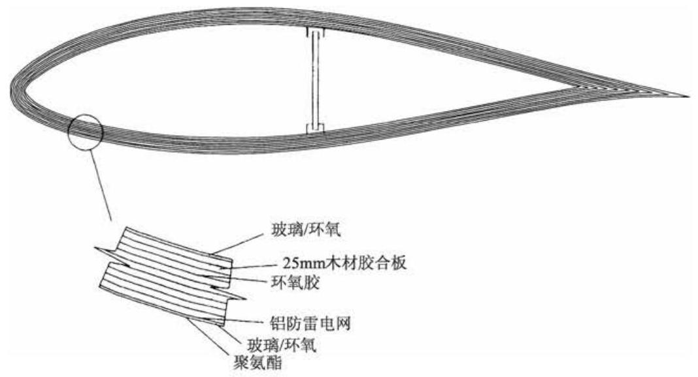
图 7.1 木材/环氧全壳叶片结构
[经 DT1 可再生能源研发部授权, 由 Corbet 发表 (1991)]
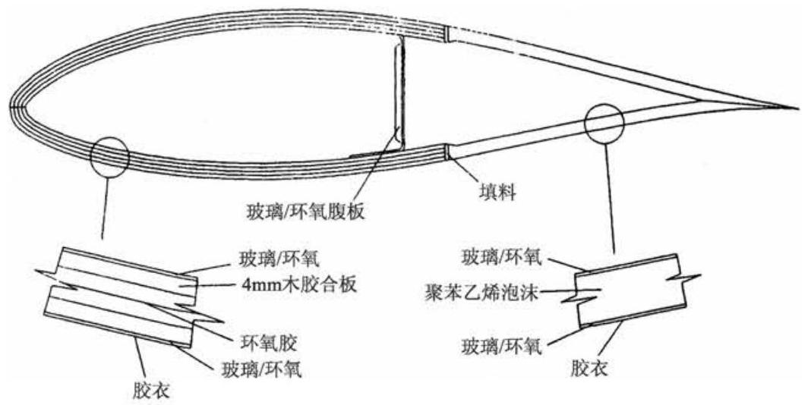
图 7.2 叶片前半壳用的木材/环氧叶片结构
[经 DT1 可再生能源研发部授权, 由 Corbet 发表 (1991)]
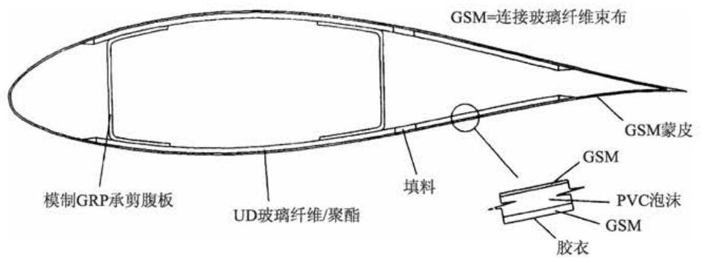
图 7.3 利用叶片截面前部的蒙皮并连接剪切腹板的玻璃纤维叶片结构 [经 DT1 可再生能源研发部授权, 由 Corbet 发表 (1991)]
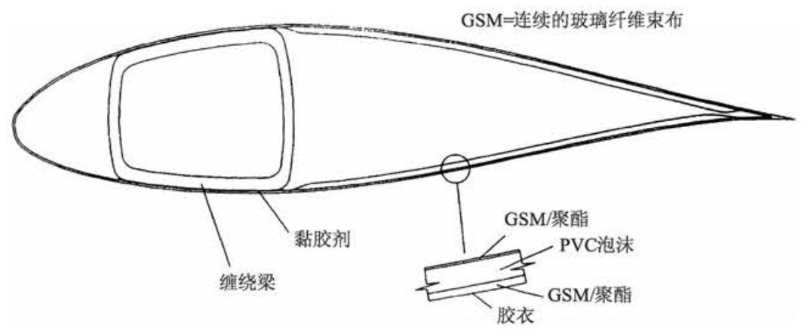
图 7.4 使用在芯轴上以横向丝带缠绕的盒形梁玻璃纤维叶片结构 [经 DT1 可再生能源研发部授权, 由 Corbet 发表 (1991)]
7.1.5 叶片材料和属性¶
制造叶片的理想材料要综合必需的结构特性, 在低成本及形成期望的翼形形状的能力下具有很高的强度同重量比率、疲劳寿命和刚度。
表 7.1 列出了一般用于叶片制造材料的结构特性和其他一些潜在的材料。为了进行比较, 还列出了下列的值:
(1)压缩强度与重量的比。
(2)作为压缩强度的百分比的疲劳强度。
(3)刚度与重量的比。
(4)板的稳定性参数 \(E/{\left( \mathrm{{UCS}}\right) }^{2}\) 。
很明显, 玻璃纤维和碳纤维复合材料 (GFRP 和 CFRP) 同其他材料相比具有更高的压缩比强度。然而, 这个优点表面看起来并不起决定性作用。这有两个原因,一个原因是构成机壳夹层的一些纤维必须偏离轴向 (一般为 \({45}^{ \circ }\) ) 来抵抗剪切载荷, 以降低轴线方向的强度; 另一个原因是这些复合材料的杨氏模量比较低, 这意味着在设计中占主导地位的是薄蒙皮抗皱损，而不是简单的压缩屈服。皱损支配的相似性同表 7.1 的最后一列给出的板的稳定性参数 \(E/{\left( \mathrm{{UCS}}\right) }^{2}\) 是逆相关的。因此, 具有较高压缩强度值的材料, 如木材复合材料, 对皱损具有最小的敏感性。这样的结果就是木材复合材料叶片一般比同样的玻璃纤维叶片要轻。在 7.1.10 节中将介绍抗皱损设计。
值得注意的是, 木材复合材料的强度同其他材料的强度相比较低, 这使它不适用于高尖速比的细长叶片, 这里叶片挥舞方向的弯矩同叶片厚度相比在运行期间不可避免地要高。例如, Jamieson 和 Brown(1992)曾经指出, 对于失速调节机组, 如果蒙皮厚度同弦长的比保持恒定, 则叶片应力对转速非常地敏感, 按 4 次方增加。尽管增加蒙皮厚度可以降低应力,但是如果蒙皮厚度同弦长的比例超过 3% ~4%，则其他材料表现出越来越小的效用，特别是在叶片的外部，此处叶片的厚度同弦长的比非常低。
表 7.1 风力机叶片的材料结构特性
| 材料(注意:UD 表示单向纤维，即所有纤维沿纵向铺设) | 最大拉伸强度 (UTS)(MPa) | 最大压缩强度 (UCS) (MPa) | 相对密度 (s.g.) | 压缩比强度质量比例 UCS/s. g. | ${10}^{7}$ 循环的平均疲劳强度 (幅值) (MPa) | 平均疲劳强度相对于 UCS 的百分比 | 杨氏模量 E(GPa) | 比刚度质量壁板 E/s. g. (GPa) | 稳定性参数 E/(UCS) ${}^{2}$ (MPa) |
| 复合材料的平均值 | 金属材料的极小值 | ||||||||
| 1 玻璃/聚酯，以 50%纤维体积含量的 UD 铺设 | ${860} \sim {900}^{\left\lbrack 1,2\right\rbrack }$ | $\sim {720}^{\left\lbrack 1\right\rbrack }$ | 1.85 | 390 | 140 | 19% | ${38}^{\left\lbrack 2\right\rbrack }$ | 20.5 | 0.07 |
| 2 玻璃/环氧，以 50%纤维的体积含量及 UD 铺设对于以上给出自然 GRP 通常性质很接引 | |||||||||
| 3 玻璃/聚酯层压板，以 50%纤维的容积含量和 80% 的纤维沿纵向铺设 | 690~720 | >580 | 1.85 | 310 | 120 | 21% | 33.5 | 18 | 0.1 |
| 4 碳纤维/环氧，以 60%纤维体积含量及单向铺设 | 1830[4] | 1100[4] | 1.58 | 700 | 350 | 32% | ${142}^{\left\lbrack 4\right\rbrack }$ | 90 | 0.12 |
| 5 卡欧属/环氧层板 | 82[6] | ${50}^{\left\lbrack 6\right\rbrack }$ | 0.55 | 90 | 15 | 30% | ${10}^{\left\lbrack B\right\rbrack }$ | 18 | 4 |
| 6 桦木/环氧层板 | 117[9] | ${81}^{\left\lbrack {10}\right\rbrack }$ | 0.67 | 121 | 16.5[7] | 20% | ${15}^{\left\lbrack {10}\right\rbrack }$ | 22.5 | 2.3 |
| 7 高屈服钢(球铁510) | 510 | 510 | 7.85 | 65 | 50 | 10% | 210 | 27 | 0.81 |
| 8 可焊铝合金 AA6082(以前称 H30) | 295[12] | 295 | 2.71 | 109 | ${17}^{\left\lbrack {13}\right\rbrack }$ | 6% | 69 | 25.5 | 0.79 |
选自:
[1] Mayer (1996) Figure 2.4.
[2] Barbero (1998) Table 1.1.
[3] Mayer (1996) Fig. 14.1.
[4] Carbon fibres exhibit a wide range of properties; figures given here are for one example only, taken from [2].
[5] Based on S-N curve index of \(m = {14}\) , taken from GL rules.
[6] Bonfield and Ansell (1991) Moisture content = 10%.
[7] Based on S-N curve index of \(m = {13.4}\) for scarf-jointed wood laminates, taken from Hancock and Bond (1995).
[8] Bonfield et al. (1992).
[9] Mayer (1996) Table 7. 3.
[10] Hancock (Personal Communication). Moisture content \(= {10}\%\) .
[11] Mean value for butt-welded joints with weld profile ground smooth (Class C), taken from BS 5400, Part 10 (1980).
[12] CP 118:1969 Code of practice for structural aluminium.
[13] Mean value estimated from mean minus two standard deviations value for ground butt welded joint with shallow thickness transition, Detail Cat 221, in IIW "Fatigue design of welded joints and components'.
疲劳特性传统上是测 \(1 \times {10}^{7}\) 循环时的平均疲劳强度,并按极限压缩强度的百分比表示。很明显,碳纤维和卡欧属/环氧材料的性能最好,其值大约为 30%。 焊接钢的平均疲劳强度值低 \(\left( {{10}\% }\right)\) ,再结合钢的比强度低,反映了它对于重力疲劳载荷变得很重要的大直径机械而言没有竞争力。在对复合材料的疲劳特性很好地了解以前，焊接钢被选为一些早期兆瓦级风力机的使用材料。
刚度与重量的比决定叶片的固有频率。除了 CFRP, 表 7.1 中的值都在相对小的范围内 \(\left( {{18} \sim {27}\mathrm{{GPa}}}\right)\) ,这说明材料选择对于动态特性有很关键的影响。
从上面简要的总结中可知, 很明显, 具有最好的多方面结构性质的材料是碳纤维复合材料。然而, 由于它相对于其他材料成本更高, 还不能普遍使用。取而代之的最适用的材料是玻纤/聚酯, 其次是玻纤/环氧和木材/环氧。
钢材在未加工时价格是最便宜的, 除了在前端非常弯的地方, 它可以按翼形做成锥状的弧形弯板。然而, 要使钢板弯曲非常困难, 出于这种考虑, 再加上较差的疲劳特性，钢材很少被使用。相反，玻纤和碳纤维复合材料适于在半模中用湿法铺层模制出准确的翼型轮廓、平面形状和扭角。用同样的方式可以制造层压木材叶片，但是要限制层压板的厚度以保证在施工期间使其达到符合要求的曲率。
下面的章节将详细地介绍最常用的叶片制造材料的特性。
7.1.6 玻纤/聚酯和玻纤/环氧复合材料的性能¶
如表 7.1 所示，相同纤维体积含量和铺叠的玻纤/聚酯和玻纤/环氧材料的特性很相似, 即对基体的影响很小。除了在疲劳特性方面有些不同之外, 在下面的讨论中这两种材料视为同一种材料。制造叶片用到的玻纤是 E 形玻璃, 其具有很好的结构性价比。
构成 GFRP 叶片梁的板元件一般是几层构成的层压板, 合股线中的纤维从不同的方向抵抗设计载荷。在一层内 (一般厚度为 \({0.5} \sim {1.0}\mathrm{\;{mm}}\) ),纤维可能排列成相同方向，即 UD 或非同向，或成直角的双向，在编织物或非编织物的广阔范围内变化。
尽管充分考虑了纤维和基体的强度与刚度特性，但是利用简单的规则只能得到单层板的一些特性。对于用 UD 纤维增强的层,纵向刚度模数 \({E}_{1}\) ,可以用混合公式精确地得出:
式中, \({E}_{\mathrm{f}}\) 为纤维模量 (对于 \(\mathrm{E}\) 形玻纤为 \({72.3}\mathrm{{GPa}}\) ); \({E}_{\mathrm{m}}\) 为基体模量 \(\left( {{2.7} \sim {3.4}\mathrm{{GPa}}}\right)\) ; \({V}_{\mathrm{f}}\) 为纤维体积含百分数。另外,上述公式的逆是
值得注意的是，横向模量 \({E}_{2}\) 和面内剪切模量 \({G}_{12}\) 。基于进一步改进的模型的更精确公式在 Barbero(1998) 的文献中给出。
UD 纤维增强层的纵向拉伸强度可从下式中估计出来:
式中, \({\sigma }_{\mathrm{{fu}}}\) 为纤维的最大拉伸强度。然而, \(\mathrm{E}\) 形玻璃单纤维的拉伸强度 \(\left( {{3.45}\mathrm{{GPa}}}\right)\) 在复合材料中不能实现,测出的强度降低了 \({50}\%\) 。如上所述,式 (7.5) 中 \({\sigma }_{\mathrm{{fu}}}\) 值应为 \({1750}\mathrm{{MPa}}\) 。
因为由基体的剪切强度和纤维的直线度误差影响的纤维微屈曲，UD 纤维增强层的纵向抗压强度要比抗拉强度明显降低。假定有极小的纤维直线度误差，则至少认为有 15%的强度降低。
很明显，纵向刚度和强度都受体积含量的限制，对于手工铺层，典型的纤维体积含量一般为 \({30}\% \sim {40}\%\) ,但是 “真空袋” 的应用,使封闭在内的空气和超量挥发成分,如剩余溶剂被抽出,可以获得 \({50}\%\) 或更高的体积含量。“预浸料”是单方向纤维或纤维织物预浸渍半固化环氧树脂, 产生的纤维体积含量有类似的增加。
1 疲劳性能¶
表述应力时, 复合材料层压板的疲劳特性散布范围很宽, 这依赖于纤维体积含量和纵向纤维的铺层数目。然而, 如果将应力幅转换为初始应变幅比较复合材料不同铺层的疲劳特性时, 来自常应力幅疲劳试验的数据变得更容易理解 (比较复合材料的杨氏模量在整个疲劳测试中降低，因此，需要在试验开始时对需要测量的应变幅进行规定)。
复合材料的疲劳特性决定于应力幅和平均应力水平，它可以同时由最大应力 \({\sigma }_{\max }\) 和最小应力对最大应力的比值 \(R\) 来描述。开始时,考虑交变载荷的疲劳行为是很方便的,如 \(R = - 1\) ,在这种情况下,平均应力为 0,然后考虑在其他比例 \(R\) 下的相关关系。
玻璃纤维复合材料的恒幅疲劳特性最好能由循环数的对数和应力幅对数或应变幅对数的线性关系来进行描述:
Echtermeyer, Hayman 和 Ronold 在 1996 年对总共 111 个恒定幅值进行了一次回归分析, 这是在 DnV 时对 10 种不同层压板进行交变荷疲劳试验的结果。其中，试验假想条件是它们都遵照相同的 \(\varepsilon\) - \(N\) 曲线，在 \(\lg N\) 为 0.437 的标准偏差下， \({\varepsilon }_{0}\) 、 \(\lg K\) 和 \(m\) 分别取为 \({2.84}\%\) 、3.552和7.838。在图 7.5 中，对 \(\mathrm{{DnV}}\) 回归线和另一条在 ECN 时从 \({0}^{ \circ }/ + {45}^{ \circ }\) ， \(- {45}^{ \circ }\) 层压板的 19 个试验中获得的结果进行了比较,其中后者中的 \({\varepsilon }_{0}\) 、 \(\log K\) 和 \(m\) 分别取为 \({2.34}\%\) 、 3.775 和 10.204。研究者没有在 \(\lg N = 0\left( {{ca2.4}\% \text{ 和 }{2.0}\% }\right)\) 且在 UTS 或 UCS 处对回归线通过的应变值作出限制。 如果这么做，则 DnV 线将会有一个稍微浅的斜坡，即有一个比较大的 \(m\) 值。在和其他疲劳测试数据进行比较后, 归纳出 DnV 线为初始设计提供了一个合理的基础。
不管是拉伸还是压缩,当平均应力提高到零以上时,在其他 \(R\) 的恒幅值试验中通常显示为降低了疲劳寿命。依据等寿命图(有名的 Goodman 图线)表现结果是惯例,其中疲劳应力幅是针对不同疲劳寿命对应的平均应力绘出的。可以根据不同比的各类试验结果进行回归分析,给出一系列与式 (7.6) 形式一样的 \(\varepsilon - N\) 关系, 它们可以用来绘出等寿命图表。风力机的复合材料疲劳试验数据曾经在荷兰 "FACT"上进行过检验 (Joose Delft, 1996), 这项工作的一些结果在图 7.6 中被再次引用(虚线)。
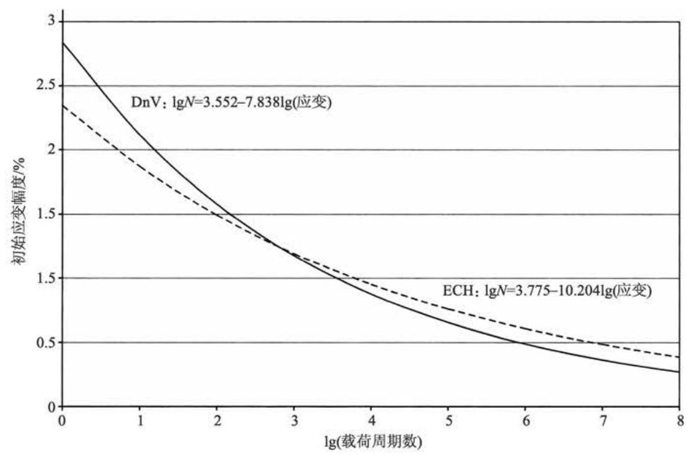
图 7.5 对应于进行 GFRP 复合材料恒幅交变疲劳载荷试验结果的应变寿命回归线
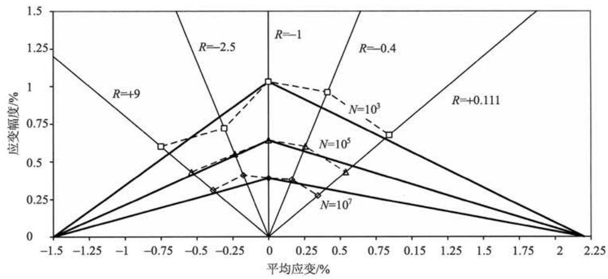
图 7.6 GFRP 复合材料在 \({10}^{3}\text{ 、 }{10}^{5}\text{ 、 }{10}^{7}\) 个周期的疲劳应变振幅随平均应变的变化恒定寿命图
在制定设计准则时, 通常作简化假设, 即假设对于给定的疲劳寿命, 应变幅随着平均应变的增大而线性下降, 相对于最大拉伸或压缩强度, 平均应变降低为零。 这种线性等寿命线如图 7.6 中的粗线所示。设计所需要的等寿命线, 需要从按照合适的局部安全系数划分的特征材料特性中得到, 这与在图 7.6 中用到的特性相反。因此, 当平均应力是压应力时设计应变幅变为
这里 \({\varepsilon }_{0\mathrm{\;d}} = {\varepsilon }_{0\mathrm{k}}/{\gamma }_{\mathrm{{mf}}};{\sigma }_{\mathrm{{cd}}} = {\sigma }_{\mathrm{{ck}}}/{\gamma }_{\mathrm{{mu}}},{\varepsilon }_{0}\) 是当 \(\lg N\) 为零时根据 \(\varepsilon - N\) 曲线给出的 \(\varepsilon\) 的值,是考虑产品设计载荷周期情况下的平均应力, \({\sigma }_{\mathrm{{cd}}}\) 是设计的压缩应力, \({\gamma }_{\mathrm{{mf}}}\) 是疲劳强度的局部安全系数， \({\gamma }_{\mathrm{{mu}}}\) 是最大强度的局部安全系数， \(d\) 和 \(k\) 分别是设计值和特征值。
式(7.7)再加上平均拉伸载荷的等效值，可以用来计算许用载荷周期数 \({N}_{i}\) 的允许值。这适合测试叶片截面中的点, 对应疲劳载荷谱的每个应力幅, 再结合合适的失效重要性进行局部安全系数计算。在每个应力幅内,载荷周期 \({N}_{i}\) 和预测循环数 \({n}_{i}\) 进行结合,产生了 Miner 的损伤和 \(\mathop{\sum }\limits_{i}\left( {{n}_{i}/{N}_{i}}\right)\) ,该值通常小于 1 。
在 GL 规则中,根据“简化假设”, \(\varepsilon - N\) 设计曲线给出了同式 (7.6) 相同的形式。 但是恒定寿命图是关于在最终的拉伸和压缩应力的中间的应力水平对称的图, \({\varepsilon }_{0}\) 被设置等于最大拉伸和压缩的应变之间的差的一半, 而且材料的局部安全系数包括在内。尽管是否证实差别还有分歧, 但是 GL 对于聚酯和环氧基体的复合材料规定了不同的指数值, \(m\) 分别为 9 和 10 。如图 7.7 的恒定寿命图中 \(m = {10}\) 。
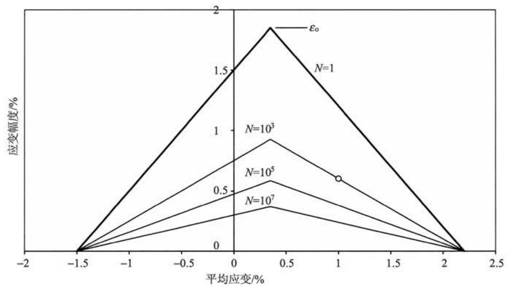
图 7.7 GFRP 复合材料在 \({10}^{3}\text{ 、 }{10}^{5}\text{ 、 }{10}^{7}\) 个周期的疲劳应变振幅随平均应变的变化, 基于 GL 规则 (简体化的假设) 的恒定寿命图
图 7.7 中的小环意味着 \({0.6}/{\gamma }_{\mathrm{M}}\%\) 应变范围允许的周期数,分解平均应力 \(1\%\) 是1000,其中 \({\gamma }_{\mathrm{M}}\) 是材料强度适当的部分安全系数在疲劳和平均应力被部分安全系数分解, 极限载荷下的材料强度。
由于在恒定测试数据中存在变幅载荷, 这将导致 Miner 定律在预测疲劳损坏方面的精确性不可避免地存在不确定性。为了研究这种情况, 利用 WISPER (风力频谱标准)和 WISPERX 在不同幅值疲劳载荷下的频谱进行了疲劳测试，这曾经被作为风力机叶片设计中的典型 (WISPERX 是 WISPER 的调整, 其中大量的小周期数,约占总数目的 90%,被忽略用来缩短测试周期)。对于每一个测试样本, WIS-PER(或 WISPERX)依次按比例加载到选定的最大应力水平, 并重复加载直到样品损坏。
Van Delft、de Winkel 和 Joose(1996) 对在 ECN 和 Delft 技术大学进行的 \({0}^{ \circ }\) 和 \(\pm {45}^{ \circ }\) 层板的一系列测试结果进行了分析,发现对于最大应力 \({150}\mathrm{{MPa}}\) ,承受 WISPER (或 WISPERX)载荷序列标本的实际疲劳寿命，比它基于恒幅交变载荷测试数据及 Miner 法则, 并考虑平均应力, 使用上述线性关系影响的预测值小 100 倍。 \(R = - 1\) 时的测试数据引出了按 \(N = {\left( \sigma /{\sigma }_{\mathrm{{tu}}}\right) }^{-{10}}\) 的 \(S - N\) 曲线,这里的 \(\sigma\) 是应力周期的幅值， \({\sigma }_{\mathrm{{tu}}}\) 是最大拉伸强度，因此，在 \(R\) 为其他值时，对于幅值载荷的失效的周期数取 \(N = {\left\lbrack \sigma /{\sigma }_{\mathrm{{tu}}}\left( 1 - \overline{\sigma }/{\sigma }_{\mathrm{{tu}}}\right) \right\rbrack }^{-{10}}\) 为拉伸平均值， \(N = {\left\lbrack \sigma /{\sigma }_{\mathrm{{tu}}}\left( 1 - \overline{\sigma }/{\sigma }_{\mathrm{{tu}}}\right) \right\rbrack }^{-{10}}\) 作为计算 Miner 损坏时的压缩平均值。引用上述规定的最大应力强度时, 由于疲劳存活的差别, 所以在实际和预测 WISPER 序列的最大应力强度超过设计时, 疲劳寿命的失效之间近似比为 1 : 1.5 , 这将基本用尽设计中安全系数。然而, 其他研究不同层板的研究者发现, WISPER 载荷时的测量和预测寿命在理论上是一致的。
2 材料安全因子¶
极限状态设计要求材料的特征强度除以材料强度的局部安全系数。对于 GFRP, 这个系数需要考虑到材料随时间的老化和材料内在的可变性。GL 规则规定, 在极限载荷时根据 GFRP 设计强度计算的材料安全系数应该是以下参数的乘积:
(1)基本系数，1.35 的 \({\gamma }_{\mathrm{{MO}}}\) 。
(2)系数， \({C}_{2\mathrm{a}} = {1.5}\) ，考虑老化的影响。
(3)系数， \({C}_{3\mathrm{a}} = {1.1}\) ，考虑在高温时强度的降低。
(4)系数， \({C}_{4\mathrm{a}} = {1.2}\) ，对于手工铺层或当局部自动化制造时为 1.1 。
(5)系数， \({C}_{5\mathrm{a}} = {1.1}\) ，如果层板没有后固化。
这些法则产生的安全系数在 \({2.45} \sim {2.94}\) 内。对于疲劳载荷，省略了 1.5 的老化系数，并且层板的系数被纤维增强类型的系数所代替。
7.1.7 木材层压板的性能¶
尽管木材/环氧被认为是复合材料，但是它和 GFRP 有明显的不同。单层由大量木质薄片构成(图 7.8)，代替了基体上的合成纤维。环氧是把纵向和横向连接的薄片和相邻每一层胶接起来的黏合剂, 而不是基体。因此, 纤维体积含量接近 100%，并且木质层压板的各向异性原理是由木材本身的各向异性特征推出的。
木材的强度特性在平行于木纹的方向上比较好, 为了有效地抵抗叶片弯曲载荷, 所有的木片都安装在木纹平行于叶片轴向方向。然而, 薄片生产的最大长度不能大于 \({2.5}\mathrm{\;m}\) ,所以必须包含横向接头,这就使其具有很多 GFRP 没有的缺点。这种不良效果可以利用使接头交错和使用嵌接接头而不是平接接头来减小。
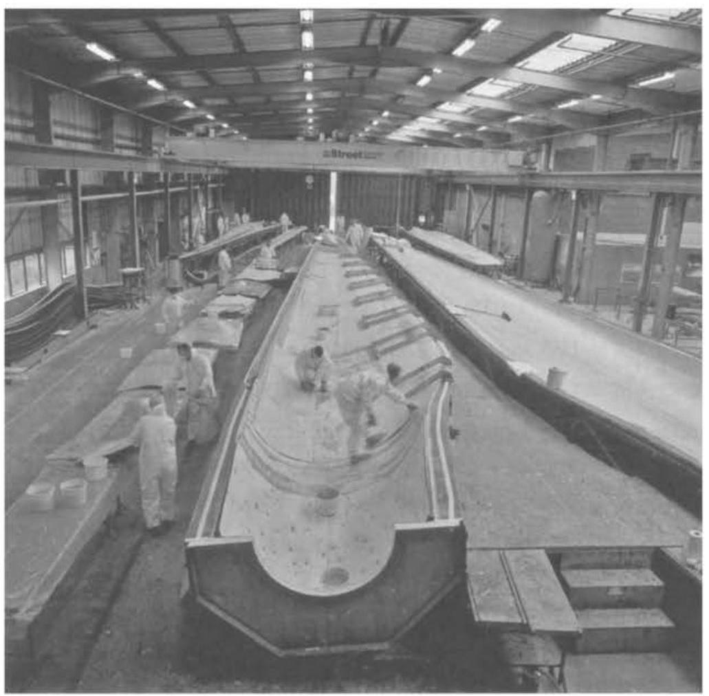
图 7.8 在制作叶片骨半壳模具中的木片铺置视图。
叶片通过把正面壳和拱形壳黏合在一起而成 (由 NEG Micon 提供)
环氧黏合剂具有封闭薄板来抵挡水气的附加作用。附加的湿气保护功能是由内外表面上都有的一层玻纤/环氧提供的。因为含水量每上升 1%，薄片强度就减少6%，所以低含水量是非常重要的。
在表 7.2 中给出了风力机叶片中已利用的或正考虑要利用的木材层压板特性的比较, 卡欧属、非洲的红木和花旗松过去分别是英国和美国用于叶片制造的主要种类, 但是环境压力导致逐渐淘汰了卡欧属, 开始更多地利用欧洲的物种, 如白杨和白桦。
表 7.2 无接头木材/环氧合成层的特性
| 样 本 | 相对密度 | 沿木纹方向的平均拉伸强度 /MPa | 沿木纹方向的平均压力强度 /GPa | 沿着木纹方向的杨氏模量 /GPa | 剪切强度 /MPa |
| Khaya ivorensis | 0.55 | 82 | 50 | 10 | 9.5 |
| 白杨 | 0.45 | 63 | 52 | 10 | 9 |
| 波罗的海松树 | 0.55 | 105 | 40 | 16 |
续表 7.2
| 样本 | 相对密度 | 沿木纹方向的平均拉伸强度 /MPa | 沿木纹方向的平均压力强度 /GPa | 沿着木纹方向的杨氏模量 /GPa | 剪切强度 /MPa |
| 白桦 | 0.67 | 117 | 81 | 15 | 16 |
| 山毛榉 | 0.72 | 103 | 69 | 10 | 16 |
| 花旗松 | 0.58 | 100 | 61 | 15 | 12 |
表 7.2 中给出了无接头样本的抗拉强度, Bonfield 等 (1992) 报告了有接头样本的测试结果。数据显示, 对于对接的卡欧属, 抗拉强度非常显著地降低到了 50MPa。长度厚度比例为1:6的嵌接的卡欧属样品,具有非常好的特性,抗拉强度能达到 75MPa。在所有的情况下, 层压板不同薄片上的接头都是交错的。
设计时, 需要重点考虑的是强度特性的可变性, 特别是像木材, 它属于天然可变的材料。强度随着密度的增加而增强, 密度根据树木生长的环境和木材取自树的部位不同而不同。这种可变性可以通过在层压前进行仔细分级和挑出损坏的薄片来减轻。Bonfield 和 Ansell(1991)报告了卡欧属样本的 32 个压缩试验，它的屈服压缩强度为 \({50}\mathrm{{MPa}}\) ，标准偏差只有 \(3\mathrm{{MPa}}\) 。应该注意到，年轮的减少会使分散度减小。垂直木纹的木材强度比顺着木纹的强度有较大的降低，如卡欧属的横向压缩强度只有 12.6MPa。
1 疲劳特性¶
木材层板的疲劳特性作为 Bath 大学工作计划的一个支持项目，从卡欧属开始延伸到其他样品。Bonfield 和 Ansell(1998)对这项有意义的工作作了总结。其基本结论如下: 木材的疲劳特性很好,具有小的 \(S - N\) 曲线斜率,并且在高旋转周期下样本之间的疲劳强度变化不大。
如果恒幅交变载荷 \(\left( {R = - 1}\right)\) 疲劳 \(S - N\) 曲线相对于最大压缩强度标准化,即 \(\sigma = {\sigma }_{\mathrm{{cu}}}{N}^{-1}/m\) ,那么无接头卡欧属测试结果表明了指数 \(m\) 大约为 20。然而,对于交叉接头卡欧属, \(m\) 降低为 16; 对于对接样本, \(m\) 大约降为 13 。Hancock 和 Bond (1995)曾经建议设计嵌接接头木材层板的指数值为 13.4 。
根据在其他 \(R\left( { = {\sigma }_{\min }/{\sigma }_{\max }}\right)\) 下的测试绘出等寿命图。例如,图 7.9 为 Hancock 和 Bond 给出的杨木嵌接接头等寿命图。注意: 在 \(R = - {0.84}\) 时应力幅比较低,这可能是由于压缩和拉伸损坏同时发生。尽管如此, 等寿命图对于每个疲劳寿命简化为应力幅在 \(R = - 1\) 和 UTS 或 UCS 之间的一系列直线还是有合理的精度。
2 材料安全系数¶
当木材用来做建筑框架时,安全系数通常很高,如 \(3 \sim 4\) 。然而,在叶片设计时安全系数值却非常低,其原因如下:
(1)因为应用层压结构，所以任何缺陷都是局部的。
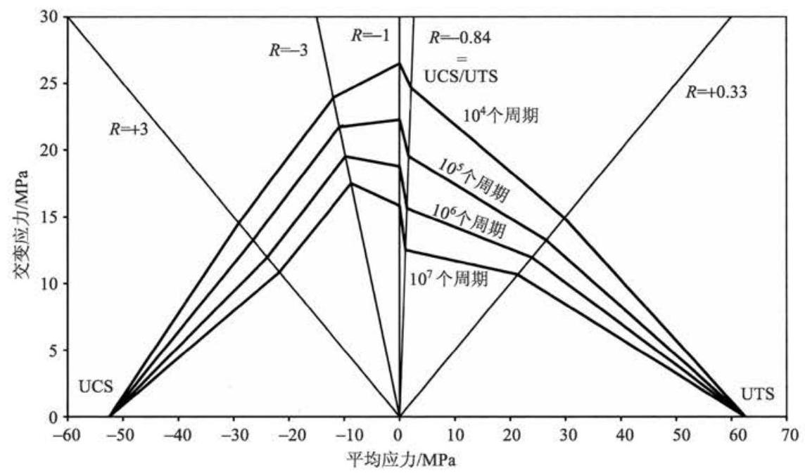
图 7.9 从 \(S - N\) 疲劳测试数据的 50% 中值回归线推出的嵌接白杨的等寿命图
(2)含水量在制造时严格控制，采用叶片壳体的有效封装来阻碍更多湿气的入侵。
(3)由于叶片旋转和风载实质上是瞬态的，在重力载荷方向发生变化时，蠕变效应可以忽略。
根据上述内容,对于设计极限载荷,局部安全系数只需要 1.5 。
7.1.8 叶片载荷概述¶
本节探讨了极限载荷和疲劳载荷随风速和偏航角的变化，侧重于拍打方向弯矩在 \({60}\%\) 半径处 (通过示例展示)。风力机为直径 \({40}\mathrm{\;m}\) 、 \({500}\mathrm{{kW}}\) 机组，从 \({40}\mathrm{m}\) 半径的 T40 缩小到 \({20}\mathrm{\;m}\) 半径的叶片[图 5.4(a)]。
1 运行中的极限载荷: 失速型风力发电机组¶
失速调节机组是单一旋转速度为 \({30}\mathrm{r}/\mathrm{{min}}\) 、额定风速 \({V}_{\mathrm{r}}\) 和切出风速 \({V}_{\mathrm{o}}\) 分别为 \({16}\mathrm{\;m}/\mathrm{s}\) 和 \({25}\mathrm{\;m}/\mathrm{s}\) 的机组。主轴相对于水平轴倾斜取为 \({5}^{ \circ }\) ,在标准中规定允许气流与水平方向偏移 \({8}^{ \circ }\) ,相对于气流的轴最大倾角为 \({13}^{ \circ }\) 。
利用 Petersen 等(1998)提出的实验三维翼型的数据计算出了叶片载荷。它显示了比典型二维数据缓慢的失速, 所以当叶片发生失速时, 平面外的弯矩没有明显地下降。风速高于 20m/s 时, 随着阻力开始变大, 平面外的弯矩再次开始逐渐提高。根据风切变指数为 0.2 及偏航角的范围,预测半径为 \({12}\mathrm{\;m}\) 处的叶片平面外关于风速的弯矩变化如图 7.10 所示。当气流的横向分量相对风轮面的方向与叶片在零方位角(即在 12 点钟位置)的运动方向相同时, 定义偏转角度为正。当风速超过失速风速时，风速增加的作用胜过攻角减小，所以在零方位处弯矩随负的偏航角增加。最大弯矩发生在负偏航角和零方位角处,而不是正偏航角和 \({180}^{ \circ }\) 方位角处, 因为前一种情况风剪随着风速的增加而增加。绘出了在 \({90}^{ \circ }\) 方位相对气流在 \({13}^{ \circ }\) 轴倾斜时弯矩随着风速的变化情况。这是不考虑风向变化的载荷情况下的危险位置。
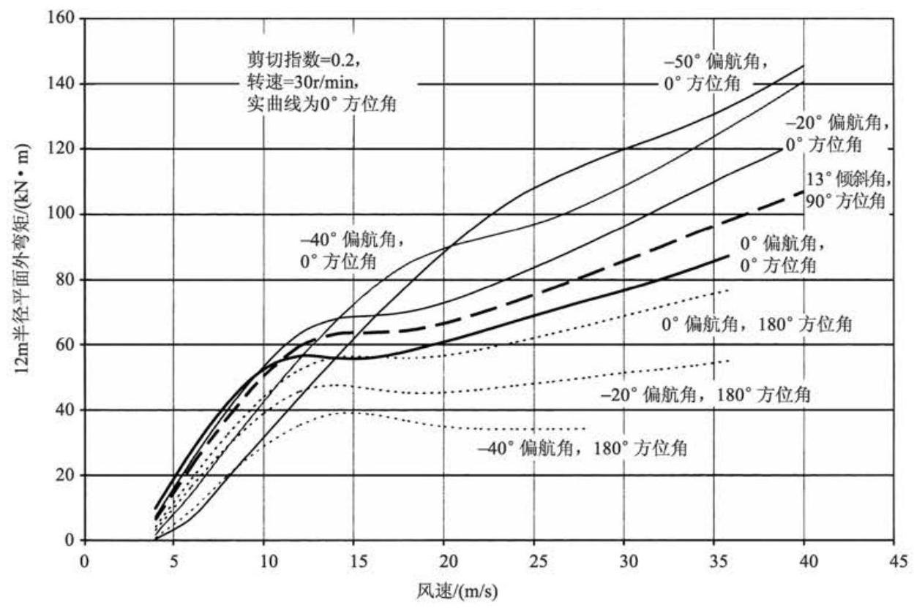
图 7.10 对于直径 \({40}\mathrm{\;m}\) , TR 叶片的变桨型机组在 \({12}\mathrm{\;m}\) 半径处
挥舞弯矩在不同偏航角时随短时平均风速的变化
图 7.10 中的点为极限 \({12}\mathrm{\;m}\) 半径,平面外弯矩在三点比较保守,因为没有下列的允许:
(1)在外部叶片的 40%上，缺少风的相关性。
(2)用高风切出限制运行期间遇到的最大风速。
(3)用偏航控制限制最大偏航角。
高风速切出和偏航控制的极端载荷的缓和依赖于控制系统应用风速和风向信号的平均时间。
2 运行期间极限载荷:变桨距风力发电机组¶
尽管变桨距调节机组可以避免与失速相关的不确定性而使调节变得更加精确,但其极端运行载荷特性不可避免地要比失速型机组更加复杂。再次聚焦 \({60}\%\) 半径处弱轴弯矩是有益的。这里指的是挥舞方向的弯矩而不是由叶片弯矩产生的 (旋转) 面外力矩。
图 7.11 给出了在某些偏航角且短时平均风速的变化情况下, 一个直径为 40m，装配有 TR 叶片，转速为 33r/min 的 500kW 变桨距调节机组，在 60%半径处挥舞方向弯矩的波动情况。额定速度 \({V}_{\mathrm{R}}\) 为 \({12}\mathrm{\;m}/\mathrm{s}\) ，而其他的参数，包括风切变指数与上面所讲到的失速调节的例子相同。图 7.11 中仅指出了由于风速的缓慢变化而产生的弯矩, 即那些可以通过变桨距控制系统进行跟踪的情况, 所以为了确保获得比较完整的结果, 由较快风速波动所导致的力矩也必须加到已获得的总数中去。所得的曲线在形状上与失速调节机组有很大不同。12m 半径处挥舞方向弯矩在额定风速时达到峰值，然后迅速下降，在偏航角为 0° 且风切变为 0 的情况下，在风速为 \({24}\mathrm{m}/\mathrm{s}\) 处降为负值。这是因为叶片已经变桨到了一定程度，这时叶片的外侧部分提供了一个制动转矩范围，抵消掉内侧部分转矩的增加。在高风速和偏航角下会产生很大的负弯矩, 接近于额定风速下峰值正弯矩的峰值。必须指出的是, 弯矩在零方位角时随负偏航角降低, 而不是像失速调节运行时那样增加。这是因为叶片的桨距变为攻角, 而攻角在这些情况下会降低, 并且攻角比相对速度更关键。绘出的内侧叶片横截面上挥舞方向弯矩随短时平均风速的变化同图 7.10 中的基本相似, 这是因为弯矩由叶片外侧部分的载荷来决定。
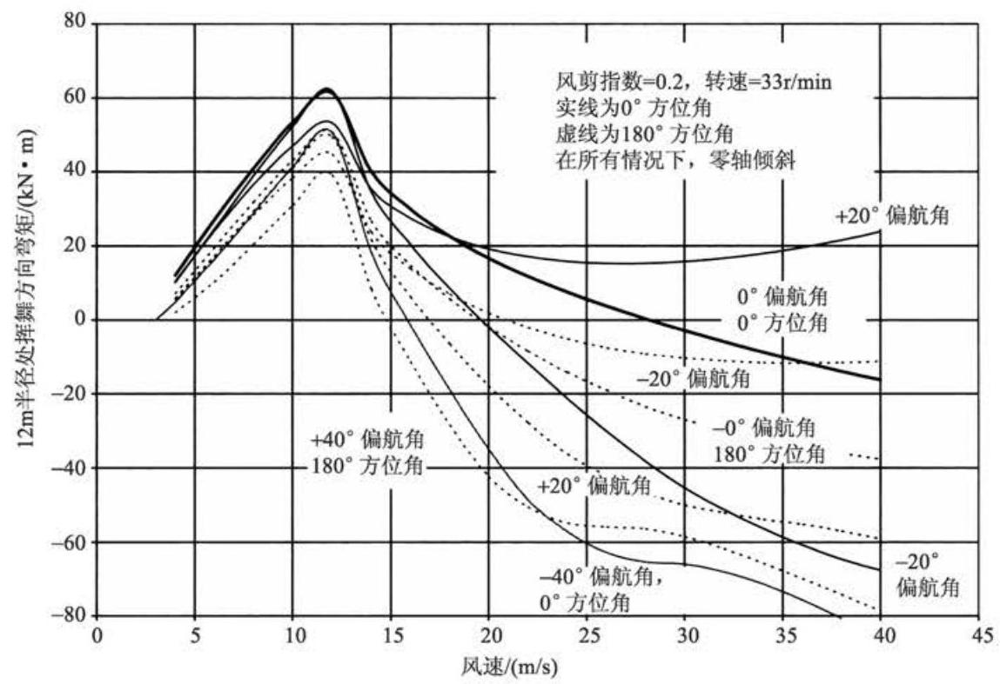
图 7.11 对于直径 \({40}\mathrm{\;m}\) , TR 叶片的变桨型机组在 \({12}\mathrm{\;m}\) 半径处挥舞弯矩在不同偏航角时随短时平均风速的变化
对于变桨距控制系统, 可以跟踪风速瞬时值, 那么图 7.10 中的曲线可以用来提供表示由 IEC 61400-1 确定的一些载荷情况下的极限弯矩。暂且不考虑电网断电的情况 (这时的结果很大程度上由风轮惯性和紧急变桨速率来决定), 可以看出极限弯矩大约只是失速调节型机组的极限力矩最大值的一半。
纵向风速波动谱频率在超过变桨距控制系统响应速度时, 它包含相当大的能量，并且这些在“正常湍流模型”的载荷情况分析中也应该予以考虑。图 7.12 显示了对于上述机组在半径 \({12}\mathrm{\;m}\) 处由于高频风速波动造成的挥舞弯矩的扰动。这是风速快速波动对直径 \({40}\mathrm{\;m}\) 、 \(\mathrm{{TR}}\) 叶片的变桨距机组在 \({12}\mathrm{\;m}\) 半径处挥舞弯矩的影响高于额定风速 \(\left( {{12}\mathrm{\;m}/\mathrm{s}}\right)\) 的快速增加和低于 \({24}\mathrm{\;m}/\mathrm{s}\text{ 、 }{28}\mathrm{\;m}/\mathrm{s}\text{ 、 }{32}\mathrm{\;m}/\mathrm{s}\) 的稳定风速快速下降的结果。在第一种情况下,偏航角是 \(- {20}^{ \circ }\) ,方位角是 \({0}^{ \circ }\) ,像这个组合在额定风速下会产生最大的正向弯矩; 在第二种情况下,偏航角为 \(- {40}^{ \circ }\) ,这超出了整个设计寿命中所预测的最大值, 并且这时短时平均风速在切出值附近产生了一个最大负力矩的上限值。
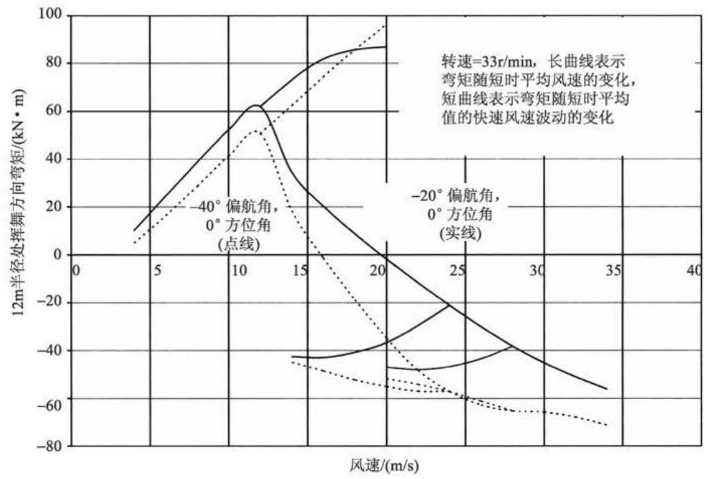
图 7.12 对于直径 \({40}\mathrm{\;m}\) , TR 叶片的变桨型机组在 \({12}\mathrm{\;m}\) 半径处挥舞弯矩在不同偏航角时随短时平均风速的变化
从图 7.12 中可以很明显地看出,高于额定值时风速的快速增加会产生一个明显的弯矩增量,但是低于额定值时风速会快速下降,如 \({24}\mathrm{\;m}/\mathrm{s}\) 的稳态值以下,叶片并不能变为负失速。在风力机的整个寿命周期中, 高于额定值但不产生叶片变桨距响应的风速的最高增量可用下式估算出来:
这里的 \({\left( {\sigma }_{\mathrm{u}}\right) }_{n > \Omega /2}\) 为高于变桨距响应截止频率 (假定为转速的一半) 时风速波动的标准差,而 \(T\) 为考虑偏航角时以额定速度为中心的风速波段运行的总周期。对于 \({12}\mathrm{\;m}/\mathrm{s}\) 的额定风速,由式 \(\left( {7.8}\right)\) 可得 \({\sigma }_{\mathrm{u}} = {2.34}\mathrm{\;m}/\mathrm{s}\) ,而 \({\left( {\sigma }_{\mathrm{u}}\right) }_{n > \Omega /2} = {2.34}{\left( {0.4}\right) }^{0.5} = \; {1.48}\mathrm{\;m}/\mathrm{s}\) 。对于一个风速为 \(2\mathrm{\;m}/\mathrm{s}\) 的波段，偏航角为 \(- {20}^{ \circ } \sim - {40}^{ \circ }\) ,方括号中的表达式 (如峰值因子) 将变为 5.5 , 则相应的无桨距响应的风速增量极值约为 \(8\mathrm{\;m}/\mathrm{s}\) 。若叶片外侧 \(8\mathrm{\;m}\) 内的风速波动被视为完全相关，则会导致一个在 \({12}\mathrm{\;m}\) 半径处最大值为 \({96}\mathrm{{kN}} \cdot \mathrm{m}\) 的挥舞弯矩 (图 7.12)，这种情况比 \({12}\mathrm{\;m}/\mathrm{s}\) 平稳风速下发生的情况大 50%以上。因此，极限挥舞弯矩运行发生在额定风速附近而不是较高的切出风速附近。这种现象源自变桨距调节机组的一个正常特性。尽管如此,极限挥舞弯矩也要小于有上述相似规定的失速调节机组。
3 疲劳载荷¶
与极限载荷相比，疲劳载荷的重要性就在于它是材料特性的函数。因为绝大多数叶片由具有相似疲劳特性的复合材料制成，本节的介绍也将以此为基础。
正如 7.1.6 节和 7.1.7 节中所述，复合材料用一条很浅的 \(S - N\) 曲线描述特性， 即对于恒幅值，交变载荷 \(\left( {R = - 1}\right)\) ，在关系式 \(\sigma \infty {N}^{-1/m}\) 中倒数指数 \(m\) 为 10 或更大。其结果是疲劳损伤由与反常风力状况相关的高应力幅小周期决定，而不是由常规中等应力幅周期所决定。
这些复合材料的另一个重要特性是疲劳损伤随平均应力等级而增加。通常, 平均应力通过将因子 \(1/\left( {1 - \overline{\sigma }/{\sigma }_{\mathrm{d}}}\right)\) 引入 \(R = - {1S} - N\) 曲线的公式，按比例放大应力幅值来估算,其中 \({\sigma }_{\mathrm{d}}\) 是设计强度,在压缩中指压缩平均值,而在拉伸中指拉伸平均值。这些都大大增加了应力循环的相对重要性。
4 失速型机组的疲劳特性¶
对于失速型机组来说, 最高的平面外弯矩的幅值和平均值一般发生在高风速和偏航角较大的区间。在图 7.10 中显示了直径为 \({40}\mathrm{\;m}\) 的机组在半径的 60% 处, 弯矩随着风速和偏航角的变化。这些都基于 7.1.8 节开始所提及的三维数据。注意:超过了额定风速后, 在远处弯矩图线较平, 结果使风的横向分量偏离了零平均值, 如果维持半转, 则结果形成一个比两倍纵向分量变化更大的弯矩波动。例如, 如果平均风速为 \({24}\mathrm{m}/\mathrm{s}\) ，横向分量为 \(6\mathrm{m}/\mathrm{s}\) (对应于 \({14}^{ \circ }\) 的偏航角)，当叶片从 \({0}^{ \circ }\) 转到 \({180}^{ \circ }\) 时,会产生一个 \({20}\mathrm{{kN}} \cdot \mathrm{m}\) 的弯矩变化。纵向风速分量为 \(\pm 6\mathrm{\;m}/\mathrm{s}\) 波动时导致了 \({17}\mathrm{{kN}} \cdot \mathrm{m}\) 的弯矩变化(这种情况只会发生在叶片转过多周以后)。
类似的讨论也可以应用于垂直风速波动的情况，但是这里由于轴的角倾斜和上升气流的作用，在气流和主轴轴线间插入一个初始倾斜角。因此，对于高于额定值的三维风速模拟得到的弯矩图取决于叶片通过频率的波动，而叶片通过频率随着气流和主轴轴线间角度的升降而增减，再叠加上由纵向风速所引起的低频率波动。
显然，虽然在低于失速风速时周期数也很重要，因为那里力矩随风速变化更快而且周期数增加很多, 但是在高风速或较大偏航角度时周期数将是疲劳损伤的一个主要原因。
Thomsen 在 1998 年就曾经研究过一个 \({1.5}\mathrm{{MW}}\) ,直径为 \({64}\mathrm{\;m}\) 的三叶片风力机的叶根平面外弯矩,其中运用了一个恒定的 \({15}\%\) 的湍流强度和一条指数为 12 的 \(S - N\) 曲线，包括平均应力允许值的所得结果，绘制在图 7.13 中(点线)，并且指出了损伤集中在风速为 \({20}\mathrm{\;m}/\mathrm{s}\) 及以上风速处。图 7.13 中也给出了采用更陡的 \(S - N\) 曲线(指数为 10 )，以及 IEC A 级湍流分布(随着平均风速的降低增加了其强度)的影响。在每一种情况下，高速风中的相对损伤都降低了，但是转向 IEC 湍流分布发生了更明显的变化。
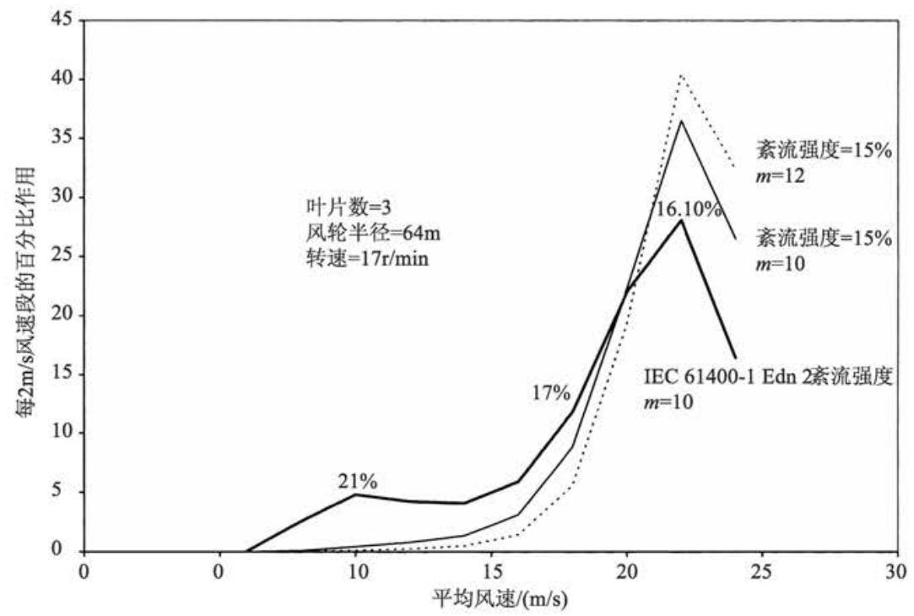
图 7.13 \({1.5}\mathrm{{MW}}\) 失速型调节机组在不同风速情况下对于寿命疲劳损伤的相对作用, 包括平均载荷影响[Thomsen(1998)]
这里必须指出, 不同的风速对疲劳损伤寿命的相对作用也取决于弯矩的变化形态/风速特性。因此, 对于图 7.10 中所示的在 60% 半径处的弯矩/风速特性, 如果已经假定 IEC A 级湍流强度分布 (图 7.15), 则其最大损伤会出现在风速为 \({10}\mathrm{m}/\mathrm{s}\) 处。
5 变桨距调节机组的疲劳特性¶
对于变桨距调节机组来说,最大挥舞方向弯矩幅值发生在高风速和偏航角较大的情况下，但是其最大平均值则出现于额定风速附近，而且由于叶片变桨，弯矩在高于额定风速时随着短时平均风速的降低快速下降。这种特性如图 7.11 所示, 图 7.11 中给出了一个直径 \({40}\mathrm{\;m}\) ，在 \({60}\%\) 半径处机组挥舞力矩随着短时平均风速和偏航角的变化情况。从图 7.11 中可得知, 在此风速下, 急速升降的弯矩/短时风速特性和高的平均弯矩的联合, 以及刚刚超过额定风速时的大量载荷周期数, 导致在此风速中有比高风速时更多的疲劳损伤。在更高风速中由于偏航残差导致弯矩波动的增大, 被降低的平均载荷和周期数减弱。
在刚好高于额定值的平均风速下, 弯矩波动特性如图 7.14 所示。这是一个由三维风速仿真得到的时间记录，而具有弯矩/短时平均风速特性的机组如图 7.11 所示(分别对应于高频率风速波动的响应)。如同上面所提到的在高风速下运行的失速型风力机组, 在高速转动时存在弯矩的波动, 但是这时它们的增大在很大程度上是由于通过风轮盘的轴向风速的空间变化, 而不是因为偏航角或轴的倾斜所引起的。此外, 还存在由于短时平均风速变化所引起的较大的低频率弯矩波动一确实如此，观察弯矩和短时平均风速图证实了两者之间的相反关系。
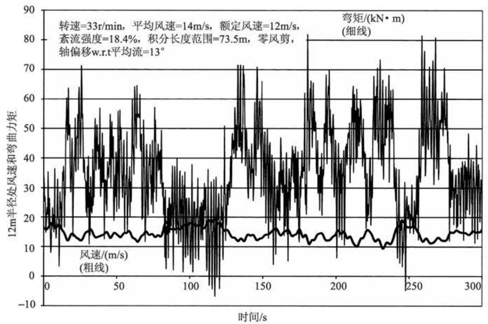
图 7.14 对于直径 \({40}\mathrm{\;m}\) 的 \(\mathrm{{TR}}\) 三叶片变桨距调节机组在 \({12}\mathrm{\;m}\) 半径处和短时平均风速情况下弯矩的时间记录，基于 \({14}\mathrm{\;m}/\mathrm{s}\) 均值的三维风速仿真
对上述机组不考虑动态因素时,在不同平均风速下,运行在 \({12}\mathrm{\;m}\) 半径处引起的挥舞弯矩疲劳损伤绘在图 7.15 中,并与一个具有相同截面系数的相似的失速型机组进行比较。横截面的设计是按抵抗 \({130}\mathrm{{kN}} \cdot \mathrm{m}\) 失速型机组的极限弯矩进行的。在这两种情况下, \(S - N\) 曲线指数均为 10,并且假定湍流强度为 IEC A 级。显然, 变桨距调节型机组疲劳损伤集中在额定速度附近, 并且疲劳损伤比失速型机组大一个数量级。为了抵抗挥舞极限弯矩的产生，失速型机组 \({12}\mathrm{\;m}\) 半径处截面系数可能比变桨距调节机组的小, 而疲劳载荷可能比图中所显示出的更严峻。
6 影响疲劳临界状态的因素¶
疲劳载荷和极限载荷的相对临界状态不仅由材料的特性和所采用的安全系数所决定，而且还取决于载荷本身。为了便于比较，疲劳载荷可用理论上的一个周期内的等效载荷 \({\sigma }_{\operatorname{eq}\left( {n = 1}\right) }\) 来描述。把载荷定义为一个交变载荷周期的应力幅,这样将会引起与基于 \(S - N\) 曲线设计的实际疲劳载荷产生相同的总疲劳损伤。如果满足了下面的条件，则疲劳载荷是临界状态:
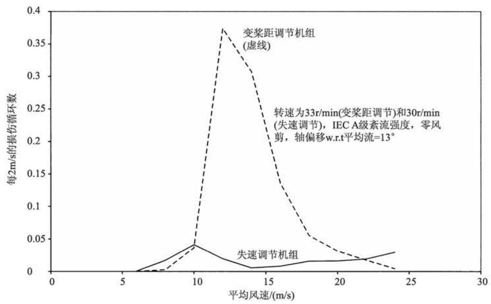
图 7.15 相似的 \({40}\mathrm{\;m}\) 直径变桨距和失速型调节机组在 \({12}\mathrm{\;m}\) 半径处叶片的疲劳损伤，忽略动态影响时随平均风速的变化
式中, \({\sigma }_{\mathrm{{0d}}}\) 为交变疲劳载荷疲劳设计曲线在 \(N = 1\) 处所给出的应力幅; \({\sigma }_{\mathrm{{ext}}}\) 为极端载荷所引起的应力; \({\gamma }_{\mathrm{L}}\) 为载荷系数; \({\sigma }_{\mathrm{{cd}}}\) 为设计压缩应力 (假定不受弯曲考虑因素的控制)。这个条件也可以用以下的特征应力值来表示:
或者
此时， \({\gamma }_{\mathrm{L}}\) 设为 1.35 。
如同 7.1.6 节和 7.1.7 节中关于 GFRP 与木材层板特性的研究中所隐含的那样, \({\sigma }_{0\mathrm{k}}/{\sigma }_{\mathrm{{ck}}}\) 可以是 \({1.0} \sim {1.4}\) 的任意值。如果极限特征值和疲劳强度的偏差在统计上相似, 则 IEC 准则指出的各个部分的材料安全系数必须相等。然而在 7.1.6 节中又指出,对于 \(\mathrm{{GFRP}}{\gamma }_{\mathrm{{mu}}}/{\gamma }_{\mathrm{{mf}}}\) 的比例, GL 标准使用了一个 1.5 的值。因此,原则上，参数 \(2{\gamma }_{\mathrm{L}}\left( {{\gamma }_{\mathrm{{mu}}}/{\gamma }_{\mathrm{{mf}}}}\right) \left( {{\sigma }_{0\mathrm{k}}/{\sigma }_{\mathrm{{ck}}}}\right)\) 控制了疲劳载荷临界状态，并可以在 \({2.7} \sim 6\) 的宽区间内取值。
用图 7.15 中导出的疲劳损伤图, 取一个中间范围值 4 , 对于变桨距调节和失速型机组来说,产生的总损伤分别为 0.96 和 0.17 。但是,如果采取的是最小值 2.7 , 相对于 \({\sigma }_{0\mathrm{k}} = {\sigma }_{\mathrm{{ck}}}\) 及 \({\gamma }_{\mathrm{{mu}}} = {\gamma }_{\mathrm{{mf}}}\) ,在 \(m = {10}\) 的情况下疲劳损伤将按乘一个 50 的系数上升。
当然,另一个控制疲劳载荷临界状态的重要材料特性是 \(\log - \log S - N\) 曲线的斜率指数 \(m\) ,它影响了一个周期名义上的等效载荷 \({\sigma }_{\operatorname{eq}\left( {n = 1}\right) }\) 。有了这个可以应用于木材合成更高的数值, 疲劳载荷被控制的可能性非常低。
7 其他可变的因素¶
除了材料本身特性的不确定性, 在疲劳损伤计算时, 还有很多其他会引起变化的因素, 其中的一些详述如下:
(1)IEC 61400-1 给出了两个可选随机湍流模型，这些模型命名为冯·卡门模型和卡尔曼模型。其中, 冯 · 卡门模型为各向同性的, 而卡尔曼模型在这个领域更加实际，横向和垂直方向湍流标准差分别为纵向湍流的 80% 和 50% 。对于失速型机组, 在高风速下对风不准通常是产生疲劳损伤的主要原因。湍流模型的选择显然有决定性的作用。
(2)当疲劳损伤估计是基于有限时间段(典型的情况为 \({300} \sim {600}\mathrm{s}\) )内的仿真时，疲劳损伤通常由几个极限周期来决定，而这些周期又比较容易受到不同仿真之间的统计变化的影响。因此，为了获得准确的结果，有必要在一个给定的平均风速下采取多次仿真(Thomsen，1998)。
(3)考虑到由平均应力而引起的疲劳强度的降低。例如，在式(7.7)中，平均应力既可以在雨流循环记数所获取的每个应力幅上进行计算，也可以在仿真长度上进行计算。
8 重力载荷引起的疲劳¶
面内疲劳载荷是由于重力载荷和面内空气动力载荷波动而形成的，但是只有在容量大到可以并网的机组中，重力载荷才会占优势，这使载荷的运算更加直接。
为了将接近等幅的平面内疲劳载荷与平面外疲劳载荷的频谱进行比较，一种比较方便的办法是将二者在规定的周期数内 \(\left( {n}_{\mathrm{{eq}}}\right)\) 用等效载荷表示。通常使用 \(1\mathrm{{Hz}}\) 的等效载荷,此时的周期数 \({n}_{\mathrm{{eq}}}\) 等于寿命内风力机的运行秒数。对于直径大于等于 40m 的机组,叶根平面内弯矩等效疲劳载荷通常要比平面外弯矩的等效值大。
对于大多数的叶片长度，弦向尺寸要比叶片厚度大很多，所以摆振方向的截面抗弯模量一般超出挥舞抗弯模量。但是，为了用一般排列成圆形的一圈螺栓与轮毂或变桨距轴承连接, 叶片紧接根部的结构是一个圆柱外壳, 如果其厚度均匀, 则两个轴会具有相同的截面模量, 因而叶根是应该检查平面内疲劳载荷的首要部位。
这个过程可以用一个尖端半径为 \({20}\mathrm{\;m}\) 的 TR GFRP 叶片举例说明,该叶片是为了在 \({0.5}\mathrm{\;m}\) 半径处具有 \({750}\mathrm{{kN}} \cdot \mathrm{m}\) 的极限静态根部力矩而设计的。设定在根部的重力力矩为 \({124}\mathrm{{kN}} \cdot \mathrm{m}\) ，并假定风力机在整个寿命期内旋转 \({2.6} \times {10}^{8}\) 周，则名义上的一个周期平面内弯矩等效载荷幅值 \({M}_{\mathrm{{eq}}\left( {n = 1}\right) }\) 变为 \({248}{\left( {2.6} \times {10}^{8}\right) }^{0.1} = {1720}\mathrm{{kN}} \cdot \mathrm{m}\) 和 \({\sigma }_{\operatorname{eq}\left( {n = 1}\right) }{\sigma }_{\operatorname{ext}} = {1720}/{750} = {2.3}\) 。这比式 (7.11) 中的最小值 2.7 还要小,所以平面内疲劳载荷不起支配作用。实际中，为了防止失稳，圆柱体的壁厚度必须大大增加， 这使得在此直径下的疲劳载荷更低于临界状态。
从上述的例子中可以总结出, 在设计 GFRP 或木材层压板制造的失速型机组叶片时, 平面内疲劳载荷不是一个需要考虑的重要问题, 除非直径超过一定的程度。但也不能完全忽略了这个因素, 因为叶片扭转以及由于离开摆振弯曲中性轴的点上的挥舞弯曲导致疲劳应力幅增加。平面内疲劳载荷对于变桨距调节机组来说更为重要, 因为当桨距角增加时, 重力载荷对挥舞加载的作用也会随之增加。
9 叶尖位移¶
在极限运行条件下，超过大约 10% 的叶片半径出现尖端位移，所以必须小心避免上风向机组的叶片/塔架碰撞。GL 准则规定极限运行载荷下的准静态叶尖位移不能超过无叶尖位移时间隙的 \({50}\%\) ，这就意味着安全系数为 2 。另外，IEC 标准要求，当极限载荷乘以载荷和叶片材料的综合局部安全系数时，叶片/塔架不能接触。比较用不同材料设计的相似叶片的叶尖位移具有指导意义。如果选择合适的壳体厚度分布使每种材料的设计压缩强度在极端载荷情况下被充分地使用，那么叶尖位移将会正比于设计压缩强度与叶片材料杨氏模量的比值 \({\sigma }_{\mathrm{{cd}}}/E\) 。在表 7.3 中对不同材料的比值进行了比较。
表 7.3 不同风力机叶片材料的设计强度刚度比
| 材 料 | 极限压缩强度 ${\sigma }_{\mathrm{{cu}}}/\mathrm{{MPa}}$ | 材料强度的局部安全系数 ${\gamma }_{\mathrm{{mu}}}$ | 压缩设计强度 ${\sigma }_{\mathrm{{cu}}}/\mathrm{{MPa}}$ | 杨氏模量 E/GPa | 强度刚度比 $\left( {{\sigma }_{\mathrm{{cd}}}/E}\right) \times {10}^{3}$ |
| 具有 50% 体积含量纤维和 80% UD 的玻纤/聚酯层板 | 580 | 2.65 | 219(忽略皱损) | 32.5 | 6.7 |
| 有 60% 体积含量纤维容量部分和 UD 辅层胶合的碳化纤维/环境 | 1100 | 2.65 | 415 | 142 | 2.9 |
| Khaya/环氧层板 | 50 | 1.5 | 33 | 10 | 3.3 |
| 白杨/环氧层板 | 81 | 1.5 | 54 | 15 | 3.6 |
| 屈服强度 ${\sigma }_{\mathrm{y}}$ | ${\gamma }_{my}$ | ||||
| 高屈服钢(Fe510级) | 355 | 1.1 | 323 | 210 | 1.54 |
| 可焊的铝合金 AA6082 | 240 | 1.1 | 218 | 69 | 3.2 |
从表 7.3 中可以清晰地看出, 只要梁足够短粗就不会按失稳设计, 则 GFRP 叶片大约是其他材料柔性的 2 倍, 如图 7.4 所示。但是对于薄壁横截面, 如图 7.3 所示, GFRP 压缩设计应力必须大幅度降低以防止弯曲的产生,其结果是造成叶片挠性的下降。例如,19.5m 的 TR 叶片压缩设计应力降至 90MPa,导致在极限载荷下叶尖位移大约为 \(2\mathrm{\;m}\) ，并且强度和刚度比木材/环氧低。在这一方面，值得注意的是, Hancock, Sonderby 和 Schubert(1997)记录了在 \({31.2}\mathrm{\;m}\) 白桦/环氧叶片上进行的 130% 的验证加载试验，试验结果显示有 \({3.4}\mathrm{\;m}\) 的叶尖位移。
7.1.9 叶片谐振¶
叶片设计中一个最重要的目标是防止谐振的产生。在柔和的形式下，恶化疲劳损伤和极端形式运行都能够导致叶片过早损坏。叶片谐振的激励可以通过将阻尼最大化减轻并确保挥舞和摆振方向的固有频率与激励频率分开。例如, 旋转频率和谐波，特别是叶片穿越频率和其他具有可识别的耦合振动危险频率很好地分离开。
1 失速振动¶
当失速型调节机组叶片的一部分开始发生失速时,升力曲线斜率 \(\mathrm{d}{C}_{1}/\mathrm{d}\alpha\) 变为负值, 这将导致在升力方向上的叶片运动局部产生负的空气动力阻尼。如果在一个特定的模态下, 总体空气动力阻尼是负值, 并且大小超过了模态的结构阻尼, 则无论模态的固有频率和激励频率的关系如何, 任何初始干扰都有可能产生增幅振荡。在每个方向的一阶模态都很容易受到这些行为的影响, 这是因为当空气动力阻尼减少时, 结构阻尼随频率的增长而增长。如果要避免一阶模态振荡, 必须明确摆振和挥舞为各方向振荡的空气动力阻尼是影响因素, 所以下面将对这些情况进行研究。
考虑一个在垂直气流中稳态条件下运行的机组。如果在半径 \(r\) 处风力机叶片的横截面受到平面外和平面内的扰动,并且扰动在下风向的速度为 \(\dot{x}\) ,在与叶片转动相反的方向上(假定为顺时针)速度为 \(\dot{y}\) ，则相对速度三角形如图 7.16(a) 所示。
叶片元素上单位长度的升力和阻力为 \(L\) 和 \(D\) ，都可以分解为平面外和平面内的作用力 \({F}_{\mathrm{X}}\) 和 \({F}_{\mathrm{Y}}\) [图 7.16(b)],可以推出式 (5.18) 和式(5.19)。转动感应因数很小, 这里可以忽略不计, 则这两个等式又可以写为
这里的 \({U}_{\infty }\) 是自由流风速， \({U}_{\infty }\left( {1 - a}\right)\) 一般为风轮平面降低的风速。对于平面内和平面外方向振荡的单位长度上的阻尼系数在下面给出:
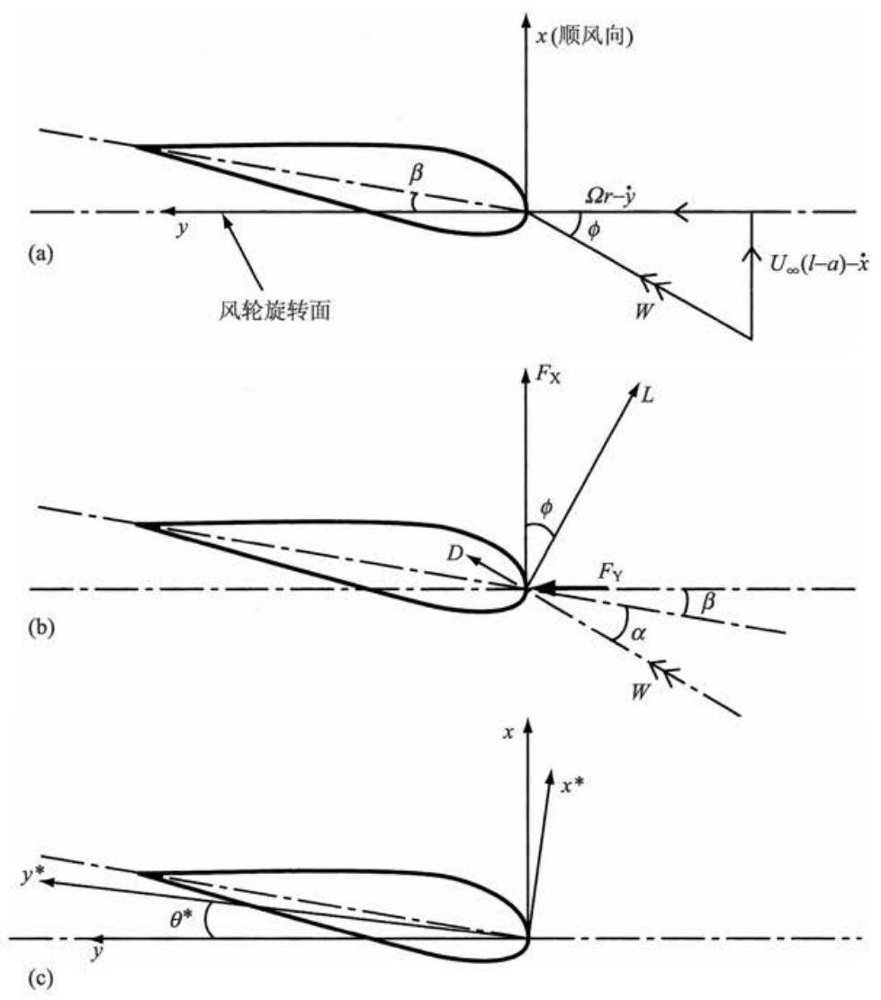
图 7.16 (a) 振动叶片的速度图解 (朝向轮毂)；(b) 升力和阻力的平面外和平面内的分力； (c) 振动的方向 \({x}^{ * }\) 和 \({y}^{ * }\)
类似地, 平面内和平面外的速度相关的交叉系数也可定义为
为了简捷，用 \(V\) 代替 \({U}_{\infty }\left( {1 - a}\right)\) ，则平面内的阻尼比可以推出如下:
(7.18)
记作
和
这个方程变为
交叉系数和平面外的阻尼比用相似的步骤推导出来
从这两个阻尼因子 \({\widehat{c}}_{\mathrm{Y}}\) 和 \({\widehat{c}}_{\mathrm{X}}\) 的表达式中容易看出,要选择一个平缓失速的翼形。也就是说, 失速后升力曲线斜率较小, 在这两种情况下的阻尼比都将增加。这里要强调的是，模态的阻尼比主要取决于叶片整个外部单位长度上的阻尼比，所以只有在这个区域内选择一个比较平缓失速的翼形才是重要的。
翼形的选择也会影响叶片的性能，因此，为了比较它们之间优劣，用功率输出表示阻尼比是有价值的。可以得知, 每单位长度的阻尼和交叉系数可以非常简单地用叶片单位长度的功率输出 \({P}^{\prime }\left( {r, V}\right) = {\Omega r}\left( {-{F}_{\mathrm{Y}}}\right)\) 和叶片单位长度的推力 \({F}_{\mathrm{X}}\) 来表示:
式(7.23)和式(7.25)可以从下面的公式中推出:
和
这些可以用式(7.19) 一式(7.22)来进行验证。
从式(7.23)可以明显地看出，平面内方向的阻尼比 \({\widehat{c}}_{\mathrm{Y}}\) ，当 \(2\left( {{P}^{\prime }/V}\right)\) 超过 \(\partial {P}^{\prime }/ \; \partial V\) 的值时，将总是负值。如果负阻尼需要保持很小，则必须避免负的功率曲线斜率出现。
2 叶片扭转的影响¶
迄今为止的介绍中, 只考虑了沿平面外和平面内方向的振动阻尼。在实际中, 叶片扭转会导致平面外和平面内方向上挥舞和摆振振动, 在平面外和平面内方向形成的扭转方向上发生, 像叶片扭转一样, 但是增量较小 (见 5.8.1 节)。如果在挥舞和摆振位移方向上定义 \({x}^{ * }\) 和 \({y}^{ * }\) 轴,每个轴与 \(x, y\) 轴方向都成 \({\theta }^{ * }\) 角,如图 7.16 (c) 所示, 则单位长度上的摆振阻尼比为
将式 (7.23) 一式 (7.26) 代入式 (7.27) 中，可以得到
在这个表达式中,如果将 \({\theta }^{ * }\) 代替为 \({\theta }^{ * } + {90}^{ \circ }\) ,则也可以得出单位长度的挥舞阻尼比。
图 7.17 给出了在半径为 \({14}\mathrm{\;m}\) 处,三种不同风速下单位长度阻尼比 \({\widehat{c}}_{\mathrm{Y}}{}^{ * }\) 随振动方向 \({\theta }^{ * }\) 的变化情况,其中样本翼型的叶尖半径为 \({20.5}\mathrm{\;m}\) ,叶轮转速为 \({29}\mathrm{r}/\mathrm{{min}}\) 。这些数据来源于 Petersen 等(1998) 的文献中, 当时并没有考虑轴向感应因子的公差。 由图 7.17 可知,在 \({20}\mathrm{\;m}/\mathrm{s}\) 处负阻尼最差。负摆振阻尼通过 \({\theta }^{ * }\) 来改善,但是 \({\theta }^{ * }\) 的增加会导致负挥舞阻尼的增加。
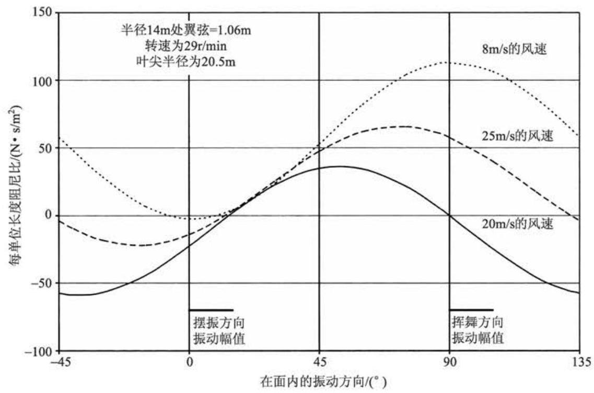
图 7.17 在半径 \({14}\mathrm{\;m}\) 处样本翼型阻尼比随振动方向变化的波形
尽管在大约 70% 半径处局部阻尼比图可以提供有用的趋势说明, 但是要了解发散振荡的可能性最好通过所研究模型的模态阻尼比来得到。用模态幅值的平方乘以式(7.28)的右边的项，再在整个叶片长度范围内求积分。
对一阶模态的摆振和挥舞方向模态阻尼比进行比较表明，阻尼比可以通过改变振动方向来改善，通过在叶片横切面内材料的重新分配可以产生一些较小的变化。另一方面, 连同补充的翼型弯度改变一起, 将改变叶片的桨距角, 以便在任何给定的入流角其空气动力学特性不变。
早在 1998 年，Petersen 等对失速状态下边缘振动的预测作出了详细的检验， 他们的工作为现在的调查研究奠定了基础。他们通过对直径 \({40}\mathrm{\;m}\) 的失速型风力机组的观察断定, 造成桨叶的边缘振动的基本原因是负空气阻力, 同时也发现应用动态失速模型提高了测量精度的水平。
3 叶片摆振模态与风轮旋转模态的耦合¶
更进一步的重要发现是, 通过对机组由于失速所引起的振动的详细分析发现, 叶片摆振一阶模态和风轮旋转二阶模态之间存在耦合。风轮旋转模态是由风轮轴的同步点头和偏航振动组成的, 这是由于运行中的陀螺效应使得两者具有同一频率。其结果是轮毂的运行轨迹是圆形或椭圆形, 与风轮的转向相同或相反, 这也说明了一阶模态和二阶模态的存在。
关于耦合的解释如下:当一对叶片摆振方向的振动反向时，即使根部摆振方向的弯曲力抵消了，它们也会传给轮毂一个按正弦变化的力，振动方向随风轮旋转， 因此，具有 \(\left\lbrack {\sin \left( {{\omega }_{1}t + \eta }\right) \sin {\Omega t}}\right\rbrack\) 和 \(\left\lbrack {\sin \left( {{\omega }_{1}t + \eta }\right) \cos {\Omega t}}\right\rbrack\) 形式的水平和垂直方向的分量,其中 \({\omega }_{1}\) 为叶片一阶摆振模态的频率, \(\Omega\) 为风轮转速。因此,对于固定的轴,轮毂上的面内载荷以两种频率作用,即 \(\left( {{\omega }_{1} + \Omega }\right)\) 和 \(\left( {{\omega }_{1} - \Omega }\right)\) 。在 Petersen 等研究的机组中,频率上限为 \({2.9} + {0.5} = {3.4}\left( \mathrm{\;{Hz}}\right)\) ,恰好与后面的风轮旋转二阶模态一致,这使得二阶模态与叶片摆振一阶模态之间的交互成为可能。
已经对不同风速下风力机的气动弹性力学模型作了仿真，并且仿真和测量结果之间获得了令人满意的一致性。特别是在 \({23.2}\mathrm{\;m}/\mathrm{s}\) 风速下的仿真，预测了已经制成的大叶片根部摆振方向一阶模态频率的弯矩波动, 并已经在同风速下实际机组运行中得到验证。重要的是, 当后面的这种仿真重复进行时, 随着风轮轴刚度足量增加足以提高反向风轮旋转二阶模态频率变为 \({3.6}\mathrm{\;{Hz}}\) ,预测的叶片根部摆振弯矩的振动通过比较可以忽略。
4 机械阻尼¶
防止摆振振动损伤的另一种可供选择的策略是利用叶片内部朝向叶尖方向的质量调谐的阻尼器。1998 年, Anderson, Heerkes 和 Yemm 发表了用在叶尖半径为 \({22}\mathrm{\;m}\) 叶片上的该种阻尼器的性能。发现,只有为叶片总重量 \({0.4}\%\) 的阻尼器,当其调谐到一阶模态摆振振动频率时, 可以有效地抑制曾经在高风速运行中观测到的摆振振动。
7.1.10 抗屈曲设计¶
在压缩载荷下没有缺陷的窄长板组件, 屈曲时的应力叫做临界屈曲应力。当面板材料是各向同性时, 按照叶片承载结构的刚度, 应用 Timoshenko 和 Gere (1961)提供的解析方法, 可以相对直接地推导出有界薄壁曲板的临界屈曲应力。 尽管如此, 他们并没有用叶片制造中常用的复合材料, 如 GFRP 和木材层压板, 因为这些材料不是各向同性的, 但是对于对称层压板应用能量方法能导出解法, 概括如下:
设想一个长度为 \(L\) ,半径为 \(r\) ,厚度为 \(h\) 的圆柱壁板,沿着两条圆心夹角为 \(\psi\) 的母线支撑,承受轴向压缩载荷。如果挠曲,在圆周支撑之间形成 \(n\) 个半波,在长度方向上形成 \(m\) 个半波,那么它的平面外挠曲可以表示为
式中, \(\theta\) 和 \(x\) 分别为挠曲点关于长边和顶部的坐标。如果不考虑板的平面内线应变, 平面外的挠曲轮廓会导致周线挠曲,
这些挠曲会产生平面内的剪切力, 剪切力会在矩形屈曲板的每个角上达到最大。在实际中, 附加平面内位移缓解了这些剪切力。例如,
面内应变能计算如下:
用下标 1 和 2 分别代表轴向和周向, 需要将
作如下代换, \({\sigma }_{1} = {E}_{x}\left( {{\varepsilon }_{1} + {v}_{y}{\varepsilon }_{2}}\right) /\left( {1 - {v}_{x}{v}_{y}}\right) ,{\sigma }_{2} = {E}_{y}\left( {{\varepsilon }_{2} + {v}_{x}{\varepsilon }_{1}}\right) /\left( {1 - {v}_{x}{v}_{y}}\right) ,\tau = {G}_{xy}\gamma\) , 其中 \({E}_{\mathrm{x}}\) 、 \({E}_{\mathrm{y}}\) 和 \({G}_{\mathrm{{xy}}}\) 分别是层压板的纵向、横向和切变模量(通过平均独立层的相应模量获得)， \({v}_{\mathrm{x}}\) 和 \({v}_{\mathrm{y}}\) 是有效泊松比，则平面内应变能量为
(7.34)
用式(7.33)中的表达式代替 \({\varepsilon }_{1}\) 、 \({\varepsilon }_{2}\) 和 \(\gamma\) ，并在整个壁板的宽度 \({\psi r}\) 和半波的长度 \(L/ \; m\) 上积分,可以得到
(7.35)
其中, \(\lambda = {m\psi r}/L\) 和比值 \(\alpha = A/C,\beta = B/C\) 还需要进一步确定。
曲率的应变能量表达式推导如下。用线性坐标 \(y\left( { = {r\theta }}\right)\) 代替角坐标 \(\theta\) ,区域 \(\mathrm{d}x\mathrm{\;d}y\) 吸收的弯曲能量为
其中
对于特殊的各向异性层压板，即每层的受力不是 \({0}^{ \circ }\) 就是 \({90}^{ \circ }\) 方向，或者有两个方向,在 \(+ {\theta }^{ \circ }\) 和 \(- {\theta }^{ \circ }\) 有同样数量的纤维。 \({D}_{\mathrm{x}}\) 和 \({D}_{\mathrm{y}}\) 是层压板分别对 \(x\) 轴和 \(y\) 轴的弯曲刚度, \({D}_{\mathrm{{xy}}}\) 是交叉弯曲刚度,也就是对一个轴的单位曲率导致对另一个轴单位宽度的力矩。因此,
区域 \(\mathrm{d}x\mathrm{\;d}y\) 吸收的扭曲能量为
这里,
式中, \(z\) 为到层压板的距离; \({G}_{xy}\left( z\right)\) 为这个距离上的面内切变模量; \(h\) 为层压板的厚度。用 \({D}_{\mathrm{T}}\) 表示扭转刚度为
则
通过将式(7.29)给出的面外垂直挠曲代入式(7.36) 和式(7.37)中, 并在整个面积上积分，可给出在整个壁板宽度和长度上挠曲为半波的总应变能为
在屈曲中, 因为面内应变和面外弯曲吸收的能量等于壁板缩短时临界轴向载荷做的功。壁板半波长度缩短如下:
所以壁板整个宽度上的单位宽度轴向力 \({N}_{\mathrm{x}}\) 做的功为
由 \({T}_{1} = {U}_{1} + {U}_{2}\) 得到轴向作用力的临界值如下:
注意到
等式变为
式(7.42)的右侧包含 4 个未知量，横向半波的数量为 \(n\) ，纵向和横向半波长度比为 \(n/\lambda\) ,系数为 \(\alpha\) 和 \(\beta\) 。假设一般情况只有一个横向半波,对于每个 \(n/\lambda\) 的值,关于 \(\alpha\) 和 \(\beta\) 的表达式得到最小化，而且由 \(n/\lambda\) 得到临界应力。
本练习关于特定的弯曲层压板的运算结果如图 7.18 所示。选择曲率半径 \(r\) 为 \({1150}\mathrm{\;{mm}}\) ,厚度 \(h\) 为 \({15}\mathrm{\;{mm}}\) 很可能代表叶尖半径为 \({20}\mathrm{\;m}\) 的叶片的 \({70}\%\) 处的值。 层压板的 80%纤维铺层为轴向, 20%±45°方向的纤维铺层抵抗切变载荷。在任何情况下，纤维的体积含量占 50%。±45° 铺层集中在层压板的中间，所以它们并不严重地降低纵向的弯曲刚度。因此,如果 \(\mathrm{{UD}}\) 层的纵向模量用 \({E}_{1}\) 表示,泊松比用 \({v}_{12}\) 和 \({v}_{21}\) 来表示，则纵向弯曲刚度近似为
需要用来估算临界应力的其他铺层和层压板的特性在图 7.18 中作了详细描述。注意:在层压板面内刚度特性的推导中，必须将最初的 \(\pm {45}^{ \circ }\) 处铺层获得的铺层轴向 (平行于纤维方向) 的面内刚度转化为整体的层压板 \(x\text{ 、 }y\) 轴的特性组[参考 Barbero(1998)的依据公式]。
图 7.18 中的粗线表示当屈曲形状在横向上只有一个半波时, 轴向临界应力随壁板宽度的变化(在对着的角度方面)，粗线下面的细线分别表示临界应力的面内和弯曲方向的分布。最小应力 \({110}\mathrm{{MPa}}\) 发生在壁板对着的角度为 \({20}^{ \circ }\) 时，但是当弯曲角度在此基础上增加时,临界应力会逐渐增大。当对着的角度超过 \({35}^{ \circ }\) 时,在横向上以两个半波屈曲取代临界模式,如图 7.18 中的虚线所示。为了比较,图 7.18 中还显示了各向同性壁板其杨氏模量等于层压板 UD 层的纵向模量的屈曲应力, 如图 7.18 中虚线所示。在这种情况下的最小临界应力为 \({298}\mathrm{{MPa}}\) ，大概是一个半波时最小压力的 2.7 倍大。
7.1.11 叶根的固定¶
将叶根固定到轮毂上是叶片设计中最关键的地方, 因为钢轮毂和制作叶片的材料通常为玻璃纤维增强塑料(GFRP)或木材，它们之间的相关刚度差之间数量级的差别妨碍载荷的平滑传递。通常用螺栓进行连接，螺栓可以沿轴向嵌入叶片的材料中或沿半径方向穿过叶片壳体, 但是这两种情况中应力集中都是不可避免的。
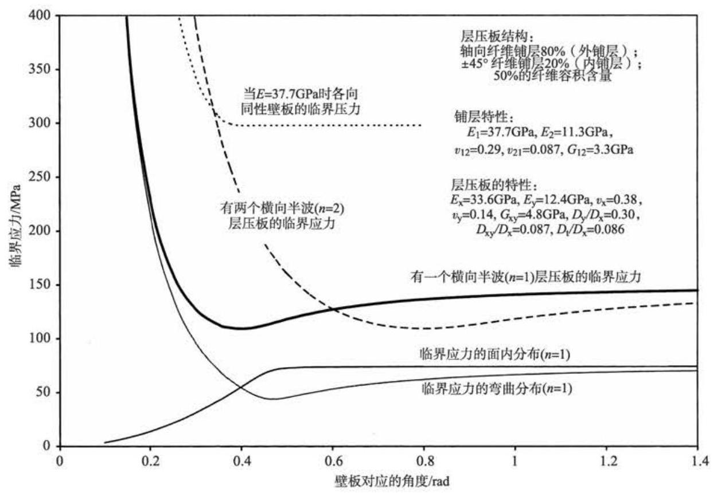
图 7.18 半径为 \({1150}\mathrm{\;{mm}}\) ,厚度为 \({15}\mathrm{\;{mm}}\) 的各向异性的弯曲层压板样本的轴向临界屈曲应力随壁板宽度的变化
图 7.19 显示了 4 种不同叶根安装段的形式。叶片结构在根部通常是圆柱壳, 在此情况下，双头螺栓或螺栓通常按圆形排列。图 7.19(a) 为胡萝卜形接头，它是层压木质叶片的标准安装形式。接头由带有圆锥形部分的碳/环氧复合材料胶浆和与轮毂或变桨轴承连接的螺柱一起组成。胶浆注入叶片末端钻制的台阶型孔中。连接件要么是由高强度钢机械加工的, 要么是用球墨铸铁(SGI)铸造的。它们通常都预加载荷以减少疲劳载荷。另一种类似的接头, 嵌入的部分是圆柱形而不是圆锥形的, 通常用于玻璃纤维增强塑料 (GFRP) 叶片。
图 7.19(b) <(d) 显示了另外三种用于 GFRP 叶片的固定装置。“T”形螺栓接头，如图 7.19(b) 所示，由插到叶片壳体纵向孔内的钢螺柱，与保持在横向孔内的圆柱形螺母进行连接。螺栓预加载荷以降低疲劳载荷。图 7.19(c) 中的“针孔法兰盘”安排在 GFRP 和钢之间，使用同样的载荷传递方法，也就是只与横向杆有关，但是接合面不适于预加载荷。此外, 如果固定法兰盘和轴承的螺栓相对于叶片壳体是偏心的, 这样法兰盘也必须承受由此引起的弯矩。
图 7.19(d) 显示的喇叭形法兰盘，叶根向外张开像喇叭嘴一样，并且通过一圈连接法兰盘到轮毂上的螺栓将其夹在内、外法兰之间。这些螺栓也穿过 GFRP 的壳体为叶根提供有效的加固。法兰盘必须承受由法兰盘造成的固定螺栓对叶片壳体偏心引起的弯矩。针孔法兰盘和喇叭形法兰盘装置很少用于大型叶片。图 7.19 叶中叶根固定的应力分布计算面临较多的不确定性, 所以通常采用静态和疲劳试验来验证其设计的合理性。胡萝卜接头的静态拉出失效发生在木材周围灌胶的剪切, 但是疲劳失效也会发生在接头本身或灌胶。尽管是这样, 球墨铸铁 SGI 螺栓在 \(R = {0.1},{60}\%\) 的抗拉强度 (UTS) 疲劳载荷下,存活了 \({10}^{6}\) 循环。
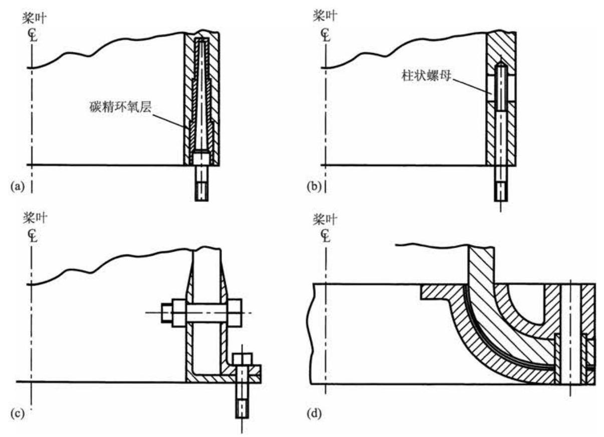
图 7.19 (a) 胡萝卜形接头; (b) T 形螺栓接头; (c) 针孔法兰; (d) 喇叭形法兰盘
Mayer(1996)记录了图 7.19 中其他的叶根固定特点的疲劳试验的结果, 但是没有因为根部固定部分 GFRP 的疲劳而发生失效。至于 “ \(\mathrm{T}\) ” 形螺栓固定结构,失效多发生于螺栓而非 GFRP。针孔法兰盘样本在远离根部固定处的 GFRP 区域产生疲劳裂纹，而喇叭形法兰盘样本裂纹在法兰盘本身。
7.2 变桨轴承¶
在变桨距调节的机组中, 类似于起重机的回转环, 轴承插在每个叶片和轮毂之间，使叶片可以绕轴旋转或调节桨距。典型的装置如图 7.20 所示，其中轴承的内环和外环螺圈分别固定到叶片和轮毂上。
轴承的不同类型可以根据使用的滚动元件和结构来划分，按照力矩容量增加排列。图 7.20 中典型的变桨轴承装置这些轴承的截面如图 7.21 所示。单排球轴承回转环通常设计为可以双向传输轴向载荷, 因此, 它被认为是四点接触轴承。通过将沟槽的两边半径做得比滚珠半径略大些, 就可以得到较低的接触压力。
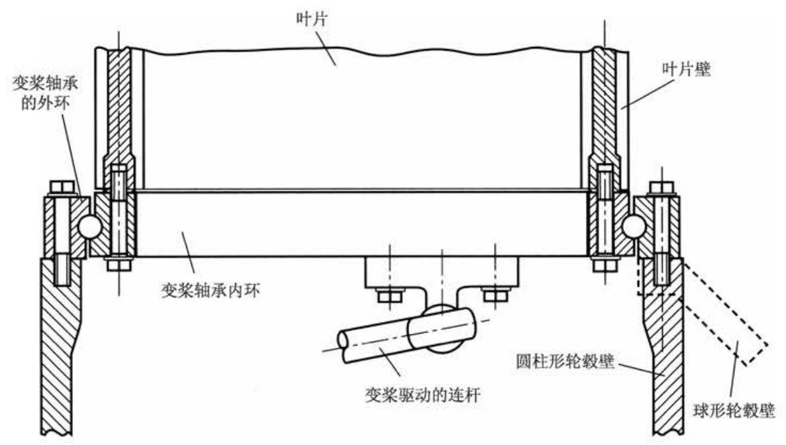
图 7.20 典型的变桨轴承装置
图 7.21 在风速较低时, 因为重力产生的叶根周期性平面内弯矩的大小类似于因为叶片推力产生的平面外力矩, 所以轴承载荷的方向在轴承的部分圆周上是交替变化的, 因而希望避免轴承预加载荷的风险。这可以通过将轴承的一个滑环分离到和轴相垂直的平面来实现，如图 7.21(c) 和 (d) 所示，但是当滑环都是实心时变得较为困难。在这种情况下，必须在制作时迫使滚珠一个一个地进入沟槽。
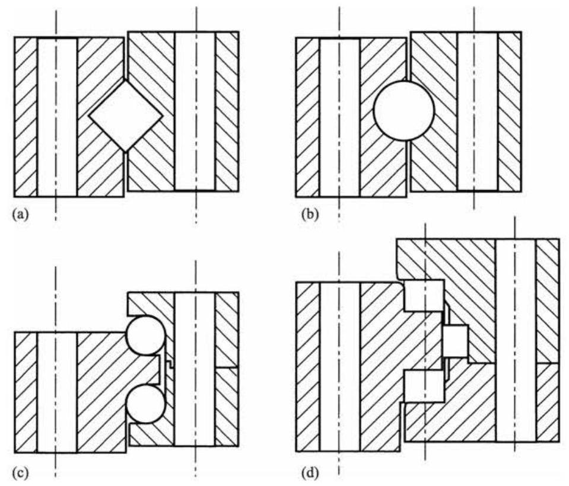
图 7.21 (a) 单排滚轴轴承; (b) 单排球轴承; (c) 双排球轴承; (d) 三排滚子轴承
选择具体应用的轴承需要有足够的力矩容量, 既抵抗极限叶根弯矩, 又提供充足的疲劳寿命。制造商的产品目录通常区分极限力矩容量和允许旋转 30000 转的稳态力矩载荷，所以风力机设计者的主要任务就是将期望的变桨轴承载荷转换为适当转数下的等效恒定载荷。如果转动部件是滚柱轴承, 轴承寿命反比于轴承载荷的立方，所以当变桨轴承转数为 \(N\) 时，等效载荷可以按下式进行计算:
式中, \({n}_{i}\) 为当载荷力矩在预期的设计寿命下总变桨轴承运转量, \({M}_{i}\) 表示旋转圈数。 当为滚柱轴承时, \(S - N\) 的指数由 3 变为 \({10}/3\) ,所以上面的公式要相应地进行修改。 如果风速上升超过额定值，桨叶根部的外表面的力矩会降低，疲劳损伤主要集中在风速为额定值的附近。
在一定风速下, 整个运行周期中变桨轴承总运动量是湍流强度和变桨控制算法的函数, 用平均风速模拟是最好的预测。假如变桨系统只响应频率比转速小的风速波动，则在高于额定风速时其平均变桨距速度的数量级为 \({1}^{ \circ }/\mathrm{s}\) 。
回转环轴承, 如那些用在变桨轴承上的, 其性能在很大程度上依赖于轴承载荷下的变形程度, 所以制造商通常规定最大轴向偏差和螺栓接触面的倾斜。例如, Rothe Erde 给出的轨道直径为 \({1000}\mathrm{\;{mm}}\) 的单排球形轴承回转环的极限值分别为 \({0.6}\mathrm{\;{mm}}\) 和 \({0.17}^{ \circ }\) 。如果叶片壁、轴承滚道和轮毂壁在同一个平面内,那么轴承环的局部倾斜可以明显地减小。然而, 这就对法兰盘提出了要求, 所以图 7.20 中所示的比较简单的结构通常更受欢迎, 其中固定螺栓中心插入叶片和轮毂壁中。设计者必须确保叶片和轮毂结构具有足够的刚度, 以限制由偏心载荷所引起的轴承变形为可接受的值。
为了使固定轴承的螺栓疲劳载荷减到最小, 标准操作是给轴承固定螺栓预先施加载荷。通常应用 10.9 级的螺栓，因此，可以使预加载荷最大化。
7.3 风轮轮毂¶
相对比较复杂的三维形状的风轮轮毂制造经常采用铸造法, 并且通常采用球墨铸铁作为材料。
三叶片机组所用的两种特殊形状的轮毂可认为等同: 三面圆柱体和球体。前者包括三个和叶片轴向同轴的圆柱形外壳, 它们彼此张开并在交汇的地方结合成一体; 后者仅包含一个球壳并在三个叶片安装处有剪切力产生。两种类型的图解如图 7.22 所示, 而一个实际的球形轮毂如图 7.23 所示。这种结构的轮毂抵抗三向载荷的作用力将在下面的段落中进行介绍。
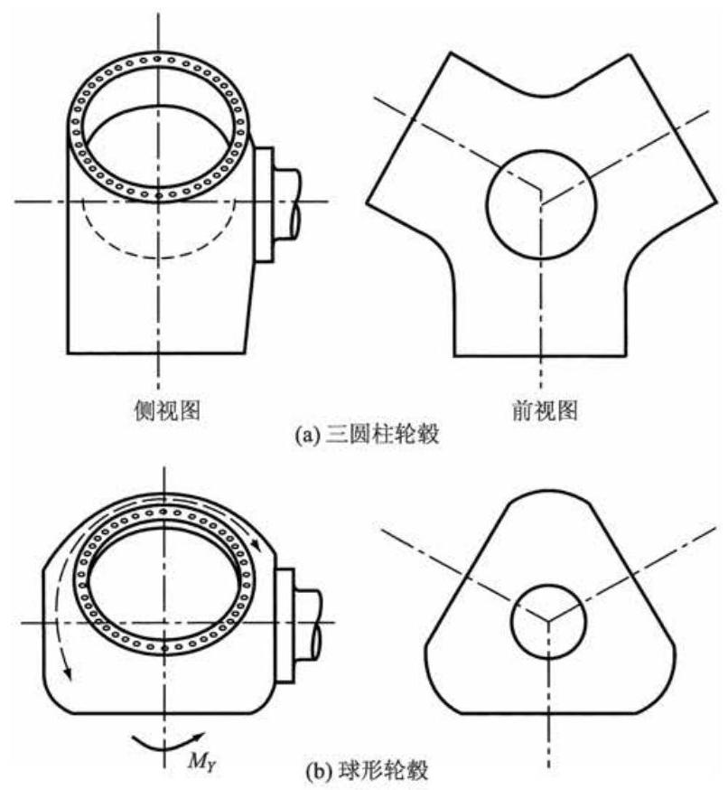
图 7.22
(1)对称的风轮推力载荷。对称的风轮推力载荷导致的叶根弯矩使轮毂前面靠近风轮轴的地方承受双向的拉力, 后面承受双向的压力, 而推力本身在轮毂壳体靠近低速轴法兰盘连接处产生平面外的弯曲应力。在这种情况下的载荷路径显而易见。
(2)一个叶片的推力载荷。这在轮毂壳体后部产生平面外的弯曲应力，而在叶片轴承的迎风面和远离桨叶的低速轴接盘连接部分之间的弯曲载荷路径上产生平面内拉伸应力[图 7.22(b)中的虚线]。合成的横向载荷将引起平面外的弯曲。
(3) 叶片重力力矩。在三面圆柱体轮毂上，同向的和反向的叶片重力力矩通过圆柱形外壳传送到靠近风轮轴前面和后面的区域内，在那里，它们互相抵消。球形轮毂的相应载荷路径就不是很直观，因为平面外的弯曲是容易改变的。
后两种载荷的压力状态的复杂程度使对风轮轮毂的有限元分析变得十分必要。最多有 6 种载荷情况需要进行分析, 分别对应于三个轴的转矩和在一个轮毂/ 桨叶接口处的沿着三个轴向的分量。那么不同叶片上的载荷联合在轮毂上形成的应力分布可以通过叠加得到。类似地, 一段时间内轮毂应力的波动可以通过输入由风模拟获得的叶片载荷时间历程推导出。
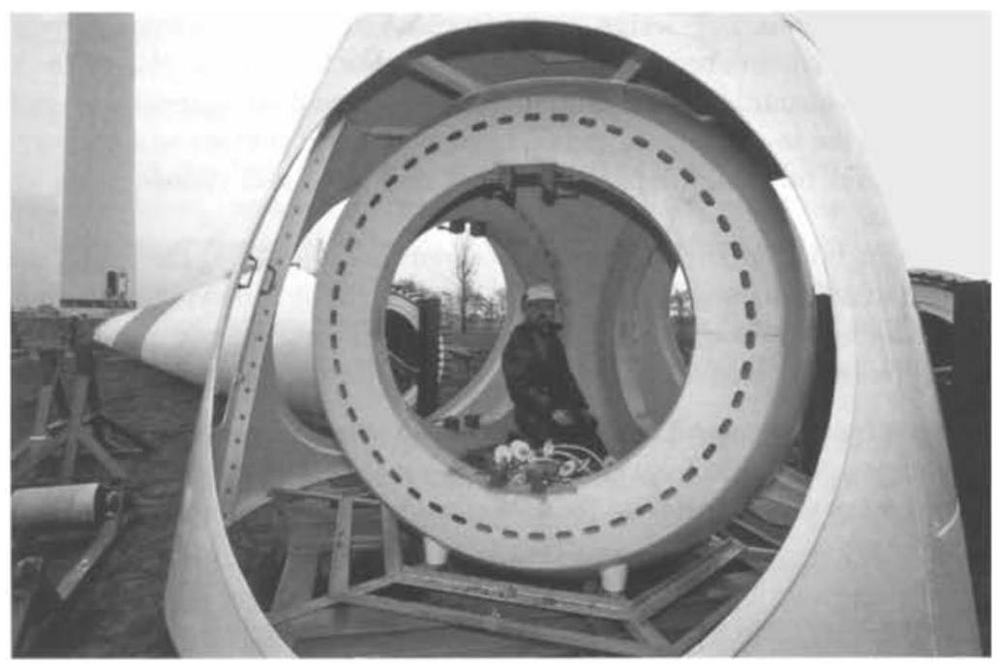
图 7.23 1.5MW NEG Micon 风力发电机组等待安装的球形风轮轮毂的图示。 轮毂和整流罩暂时以垂直的风轮轴线定向。风力机是失速型的，所以沟槽式桨叶安装孔用来调整叶片桨距以使它和装置配套 (由 NEG Micon 提供)
轮毂设计中的关键应力是内表面或外表面的表面应力, 由于外壳变形, 该应力达到了极限值。在轮毂的任意一个位置, 它们都通过三个量在每个表面上进行定义:直角方向上的两个面内线应力和面内剪应力。总的来说,这些应力相互之间不会同时随时间而改变，所以总的应力方向将会改变，从而使疲劳评估复杂化。
因为轴应力波动，所以迄今为止，还没有公认的方法来计算积累疲劳损伤。尽管众所周知, 但是下面的方法已经被使用。它们只适合一个或多个系列重复的应力周期，而不适用于湍流载荷引起的随机应力波动。
(1)最大切变法。这里疲劳计算基于最大切变应力幅，从 \(\left( {{\sigma }_{1} - {\sigma }_{2}}\right) /2\) 、 \({\sigma }_{1}/2\) 或 \({\sigma }_{2}/2\) 的时间历程计算得到。平均应力的影响可以使用 Goodman 关系:
式中, \({\tau }_{\mathrm{a}}\) 为交变剪应力; \({\tau }_{\mathrm{m}}\) 为平均剪应力; \({S}_{\mathrm{{SN}}}\) 为从 \(S - N\) 曲线得到的 \(N\) 个载荷周期时的交变剪应力; \({S}_{\mathrm{{Su}}}\) 为最大剪切强度; \(\gamma\) 为安全系数。
利用式 (7.45) 来决定 \({S}_{\mathrm{{SN}}}\) ，此载荷幅的允许周期数可以从 \(S - N\) 曲线得到，从而可以计算出相应的疲劳损伤。
(2)ASME 锅炉(Boiler)和压力容器规则法。该方法和最大切变法类似，但是其剪应力幅基于理论主应力,主应力可以通过 \({\sigma }_{x}\text{ 、 }{\sigma }_{y}\text{ 、 }{\sigma }_{z}\text{ 、 }{\tau }_{xy}\text{ 、 }{\tau }_{yz}\) 和 \({\tau }_{zx}\) 的变化计算得到, 以上这些数据可以在某个最大应力周期内取得。平均应力影响不包括在内。
(3)变形能法。这种方法的疲劳计算基于应力的有效波动或 Von Mises 应力。对于轮毂壳体来说, 垂直于壳体表面的应力 (称之为第三种基本力) 为零, 所以有效应力为
因为有效应力是基于变形能, 它是一个标量, 所以它需要分配一个符号对应于理论主应力。除了式 (7.45) 中的应力为线应力而不是剪应力外, 平均应力的影响允许像最大剪切法那样考虑。球墨铸铁的 S-N 曲线在 Huck(1983) 的文献中给出。
7.4 齿轮箱¶
7.4.1 引 言¶
齿轮箱的作用是将风轮旋转速度在高速轴侧提高到一个与标准感应发电机相适应转速,对于运行在高速的恒速发电机或双速发电机,转子转速通常为 \({1500}\mathrm{r}/\) min 乘以需要的转差。对于额定段功率为 \({300}\mathrm{\;{kW}} \sim 5\mathrm{{MW}}\) ,最高旋转速度在 \({48} \sim \; {12}\mathrm{r}/\mathrm{{min}}\) 的叶轮转速,变速比为 \(1 : {31} \sim 1 : {125}\) 。通常,较大的提升通过每级速比为 \(1 : 3 \sim 1 : 5\) 的独立的三级实现。
工业用定变比齿轮箱的设计本身是一个大课题，而且超出了目前的工作范围。 然而, 有必要认识到在风力机中采用的这种齿轮箱是一个特殊的应用, 因为不一样的环境和载荷特性, 下面的部分就集中讲解这些方面内容。7.4.2 节和 7.4.6 节中将介绍变化的载荷，包括动力传动系统的动态特性和紧急刹车载荷的影响，而且介绍如何进行齿轮疲劳设计来满足这些要求。平行和圆周转轴装置相关的种种优点在 7.4.7 节中有所介绍, 而后面的部分则介绍噪声抑制测量和润滑油及其冷却。 相关的参考资料为《美国齿轮箱制造商协会资料通报(1996)》，它包括了风力机齿轮箱相当详细的特殊需求。
7.4.2 运行中的载荷的变化¶
风力机齿轮箱的转矩范围随着风速的变化在零和额定转矩间进行变化，对于恒速桨距调节机组，由于桨距响应比较慢，在超过额定转矩时会产生偏离，短时转矩波动会被动态地放大到一定程度从而触发驱动系统发生谐振 (见 7.4.3 节)。此外, 如果刹车动作不是发生在低速轴, 则偶然的刹车动作会引起很大的瞬时转矩。 图 7.24 显示了 \({500}\mathrm{\;{kW}}\) 恒速运行的机组——失速调节型和二桨叶变桨距调节型风电机组的连续载荷波动曲线 (不包括动态效果和刹车)。失速型风电机组的曲线通过将瞬时风速分布曲线和功率曲线合成而得到，瞬时风速是用相应于每小时平均风速的湍流变差叠加于按小时平均的威布尔分布。超过额定功率的部分没有被叠加在内。
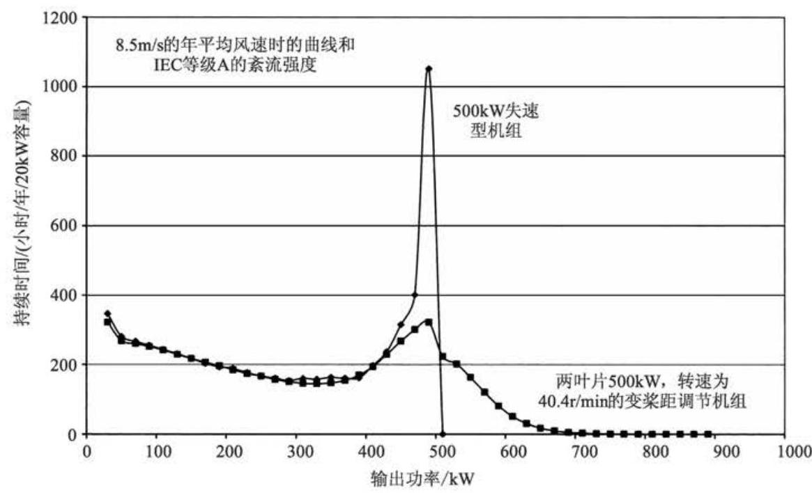
图 7.24 \({500}\mathrm{{kW}}\) 机组的载荷持续时间曲线， \({500}\mathrm{{kW}}\) 两桨叶桨距调节机组和失速调节恒速机组
对于变桨距调节型风力机，变桨距控制系统通常不设计响应频率高于或等于叶轮穿越频率的风速波动, 因为这将会给控制机械施加额外的载荷。因此, 在叶片允许的气流运动频率下, 功率曲线没有显著的衰减, 这正如图 7.25 所示, 两个桨叶，500kW 风力机运行于 20m/s 的平均风速中并带有 16.5% 的湍流强度。
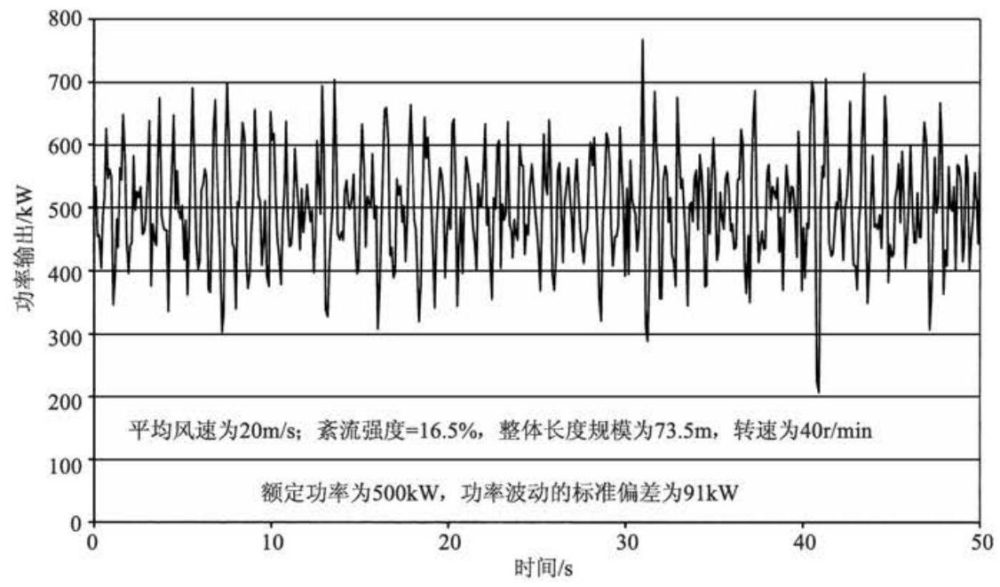
图 7.25 超过额定风速时,直径 \({40}\mathrm{\;m}\) 的变桨距调节型两叶片机组功率的仿真输出
对恒速变桨距调节机组的持续载荷曲线可以类似地从低于额定风速的瞬时风速分布和超过额定风速时的短时平均风速分布 (也就是这些变桨系统可以响应的风速)推导得到。前者结合功率曲线直接得到低于额定瞬时风速时的功率分布，当风速超过额定值时, 假定超过额定值的功率值为高斯分布, 它的标准偏差依赖于短时平均风能。变桨距控制系统运行时的功率波动的标准偏差与高于变桨距控制系统截止频率的风能波动部分的关系为
式中, \({S}_{\mathrm{u}}^{\mathrm{o}}\left( {{r}_{j},{r}_{k}, n}\right)\) 为旋转采样得到的风轮上一对点 \(j\) 和 \(k\) 处的风速波动的交叉谱 (见 5.7.5 节); \({\left( \mathrm{d}p/\mathrm{d}u\right) }_{j}\) 为桨距不变时,所有 \(N\) 个叶片的半径为 \({r}_{j}\) 处的部分产生的功率随风速的变化比率。对整个风轮进行求和，对于例中的二桨叶机组在紊流强度为 \({16.5}\%\) 、平均风速为 \({20}\mathrm{\;m}/\mathrm{s}\) 、转速为 \({40.4}\mathrm{r}/\mathrm{{min}}\) 时， \({\sigma }_{\mathrm{P}} = {0.213}{\left( \mathrm{\;d}P/\mathrm{d}u\right) }_{{\sigma }_{\mathrm{u}}} = \; {91}\mathrm{\;{kW}}\) 。这里的 \(\mathrm{d}P/\mathrm{d}u\) 是桨距不变时机组功率随风速的变化率。同样大小的三叶片机组的功率波动的标准偏差将比其小 \(1/3\) 。
7.4.3 传动链动力学特性¶
所有的风力机都要经历叶片穿越频率和倍频上的空气动力转矩波动。这些波动不可避免地和传动链的动态特性相互影响, 将改变转矩的传递。传动系统转矩波动可以通过对包含串联在一起的下面部件的驱动链模型的动态分析而得到:
(1)带有转动惯量和阻尼的主体(代表风力机叶轮)。
(2)扭转的弹簧(代表齿轮箱)。
(3)带转动惯量的主体(代表发电机转子)。
(4)扭转的阻尼器(模拟由感应发电机转差所产生的阻抗)。
(5)恒速旋转的带有无限大转动惯量的实体(电网的机械等效)。
惯量、弹簧刚度和阻尼必须针对同一个转轴。
7.4.4 制动载荷¶
大部分的风力机在高速轴上都安装有机械制动, 其结果是导致刹车载荷通过齿轮箱传递。通常, 如果机械制动属于两个必需的独立制动系统之一, 如电网掉电后, 它必须使风轮从超速减速到最后静止。标准上需要 3 倍于额定转矩的制动转矩。
机械制动只在紧急停机的情况下才需要, 通常较为少见。正常停机时, 风轮通过空气制动被减速到一个很低的速度，所以机械制动的持续时间很短，但是其制动转矩相同，除非提供两种不同的制动转矩等级。
图 7.26 是正常停机时低速转轴转矩的典型记录，这时机械制动在风电机组脱网后立即被投入。很明显，制动转矩远不是恒定值，2s 内达到它的第一个极值，然后在高速转轴停止前且没有达到更大值前逐渐下降。随后, 由于在传动系统中增加风速的释放会导致很明显的转矩波动, 这样会导致转矩反向并伴随对齿轮箱的冲击,需要一定的时间来逐步衰减。
尽管制动载荷不经常出现且持续时间较短，但其大小意味着对疲劳损伤有决定性的作用。AGMA/AWEA 论文(1996)建议, 制动和其他暂时事件的时间记录借助于传动系统的动态模型模拟，得到齿轮极限载荷设计计算所需要的输入和疲劳载荷谱模拟的输入。
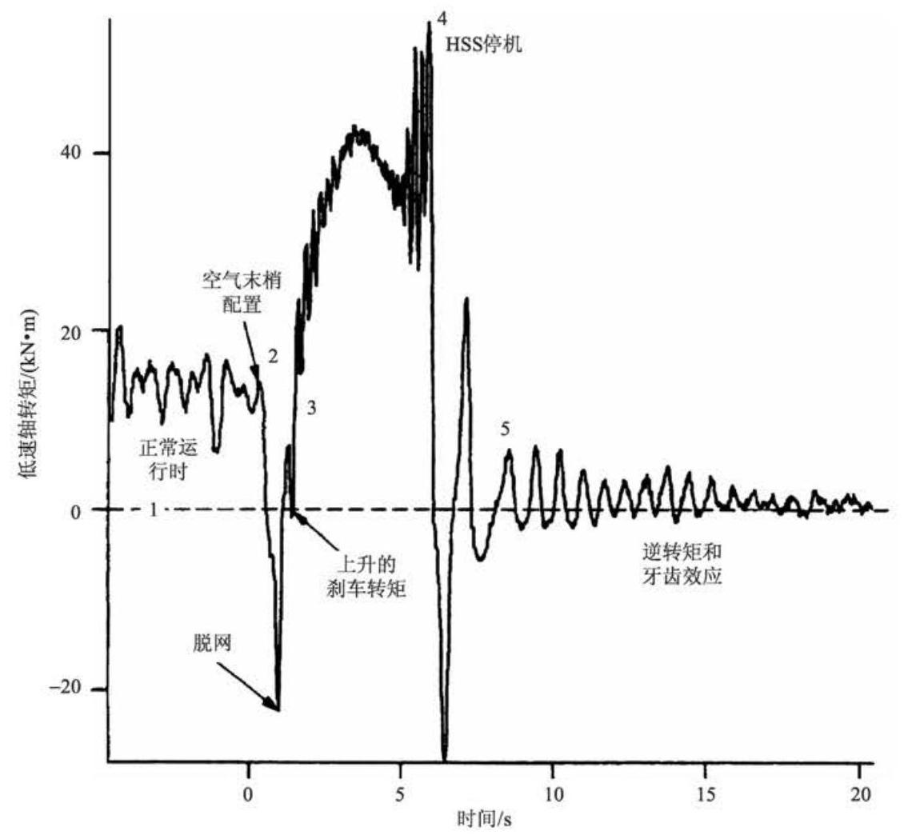
图 7.26 正常停机时低速转轴转矩。摘自 AGMA/AWEA 921A97, 风力发电机组系统用齿轮箱的设计和具体说明的推荐惯例, 经出版者美国齿轮箱制造商协会 (1500 King Street, Suite 201, Alexandria, Virginia 22314, USA) 同意
7.4.5 轮齿的疲劳设计中变载荷的影响¶
齿轮箱中的齿必须经过疲劳设计以达到可承受侧面接触应力和叶根弯曲应力。在非风力机的应用场合, 齿轮箱通常一直工作在额定转矩下, 所以齿轮强度传统上通过 “寿命系数” 的修改。寿命系数以所研究的齿轮箱的可预测齿的载荷循环数为基础,通过查阅材料的 \(S - N\) 曲线来获得。英国齿轮设计标准 BS436 (British Standards Institution, 1986)指出了接触应力和弯曲应力的持久极限, 所以当齿轮的齿载荷周期分别超过 \({10}^{9}\) 和 \(3 \times {10}^{6}\) 时,寿命系数就是统一的,但是当周期少时寿命系数就会增加。
与齿距点相连的(如在齿轮中心结合线上的点) 一对突出的齿轮箱齿的赫兹压应力为
式中, \({F}_{\mathrm{t}}\) 为齿轮齿之间在垂直于齿轮中心结合线方向上的压力; \(b\) 为齿轮表面宽度; \({d}_{1}\) 为小齿轮的齿距直径; \(u\) 为齿轮比 (大于单位值); \(\alpha\) 为压力角,也就是齿轮间压力的作用角度,通常为 \({20}^{ \circ } \sim {25}^{ \circ }\) 。
注意:因为接触区域也随着压力的增大而增大，所以齿间接触应力只以压力的平方根增长。齿根处最大弯曲应力为
式中, \(h\) 为和主根部分啮合的单齿最大高度; \(t\) 为主根部分齿的厚度; \({K}_{\mathrm{S}}\) 为根部应力集中系数。
对于仅仅运行在额定转矩下的齿轮,设计者需要表明,相应的弯曲应力乘以合适的安全因数将小于耐久极限和寿命系数 \({\gamma }_{\mathrm{N}}\) 及一些应力改变系数的乘积,如下式所示:
接触应力也需要有类似的计算。
考虑到风力机预测的载荷谱 (见 7.4.2 节), 其中包括动态效应 (见 7.4.3 节), 建立在持久极限内的所需的设计转矩是必要的。一般可以通过调用 Minner 法则确定无穷寿命转矩来获得。无穷寿命转矩由设计转矩曲线获得,这与由规定的 \(S \; N\) 曲线所相连的疲劳损伤相一致。式 (7.50) 中的 \({\gamma }_{\mathrm{N}}\) 可以设为单位值,而寿命系数已经在所需要的无限寿命转矩的推导中说明过。
图 7.27 显示的是由 BS 436 所拟定的关于持久转矩的样本曲线, 按照耐久极限, 这可以应用在定型的齿轮齿或齿弯曲和齿接触应力在允许的极限力矩内 (不考虑允许的凹点)。因此,在任何情况下,设计的无限寿命转矩 \({T}_{\infty }\) 都通过下面的式子进行计算:
式中, \({N}_{i}\) 为转矩水平为 \({T}_{i}\) 时的循环数,小于 \({T}_{\infty }\) 的转矩在总计中忽略。在转矩耐疲劳度曲线较低转折处的周期数 \({N}_{\infty }\) 对于齿弯曲约为 \(3 \times {10}^{6}\) ，而对于接触应力则通常更高, 该数值依据材料的不同而不同。注意: 接触应力的转矩耐久曲线的倾斜指数 \(m\) 是接触应力耐久曲线的一半,这是因为接触应力以转矩的平方根增加[式 (7.48)]。
一开始没有考虑制动载荷, 如果在额定值之上没有功率波动的话, 设计的无穷寿命转矩将等于额定转矩, 这是因为额定转矩下齿轮的齿的载荷周期数将远高于 \({N}_{\infty }\) 。例如，图 7.24 中 \({500}\mathrm{\;{kW}}\) 失速型风电机组，假设第一级齿轮比为 3，则在低速轴侧 \({30}\mathrm{r}/\mathrm{{min}}\) 驱动的关键小齿轮的齿将在额定转矩下20年内经受 \(3 \times {30} \times {60} \times \; {1050} \times {20} = {1.13} \times {10}^{8}\) 的载荷周期数。另外,对 \({500}\mathrm{\;{kW}}\) 双叶片带变桨距调节的风电机组, 如图 7.24 的载荷持续时间曲线所示的高于额定值的功率波动, 将导致第一级小齿轮的齿弯曲压力的设计无穷大寿命转矩为额定转矩的 1.36 倍, 其中大部分损害来自高于此值的转矩 (第一级齿轮变速假设为 3 , 风力机旋转速度设为 40.4r/min)。齿接触应力的设计无穷转矩仅为 \({1.17} \times\) 额定转矩,远小于弯曲压力, 正如图 7.27 中 BS 436 的转矩持久曲线一样。
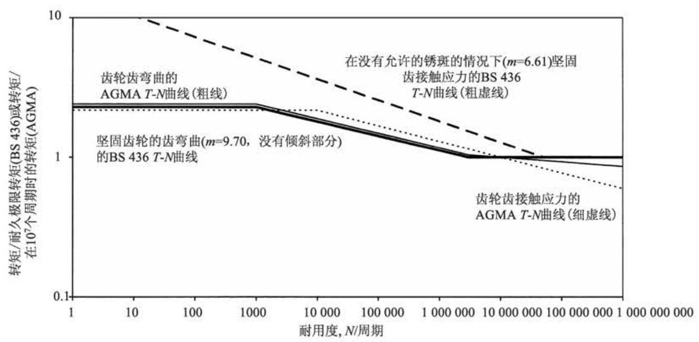
图 7.27 在变载荷情况下齿轮的齿设计的样本转矩耐力曲线
图 7.27 还显示了从美国国家标准研究所/AGMA 2001-C95 根据 \({10}^{7}\) 个周期时的转矩绘制的 \(S - N\) 曲线推导得到的样本转矩持久曲线。弯曲应力的转矩耐疲劳度曲线,基于中等范围的布氏硬度为 \({250}\mathrm{{HB}}\) ,几近平行于所选择的 BS 436 曲线。 除了在周期超过 \(3 \times {10}^{6}\) 时预期曲线将维持一个很浅的倾斜,而不是显示为耐久限度。图 7.24 中 \({500}\mathrm{\;{kW}}\) 风电机组在 \({10}^{7}\) 个周期数时,齿弯曲设计转矩类似于利用 BS 436 转矩耐久曲线得到的预设无穷寿命的转矩。
ANSI/AGMA(1995)齿接触压力的转矩持久曲线远比所选择的 BS 436 曲线保守。尤其在所选的 ANSI 曲线中, 考虑到其对较低转折的消除而被建议应用于风力机之中。没有较低的拐点使失速型机组在 \({10}^{7}\) 个周期数处的齿接触设计转矩增加到 1.4 倍额定转矩,但对桨距调节机组的数据只是提高了 10%。
从以上的讨论可以得到大体的结论如下: 齿弯曲疲劳通常控制着增加齿轮箱要求的额定性能以便满足高于额定值的载荷漂移。
根据 BS 436, 制动载荷对设计无穷寿命转矩的效果通过 7.4.2 节中介绍的模型机可以说明。尽管机械制动必须能使风轮所不能承受的过速减下来, 但这些情况下的停机还是很少见的。根据典型的紧急停机事件，考虑到疲劳设计的目的，从正常转速向下减速是由机械刹车和空气动力制动联合作用，并且假设停机时间为 3s，假设紧急制动频率为 20 次/年，正常制动每天平均 2 次，停机时间为 1.5s，因为转速减小这样机械制动只用于停机。在这种情况下, 为了简化, 在制动应用中制动转矩都假设保持不变, 并且为额定转矩的 3 倍。基于这些假设, 因为在载荷范围内考虑了制动载荷, 齿轮的齿弯曲疲劳的设计无穷寿命转矩的增加百分比可以参照表 7.4 , 一个仅是紧急停机, 另一个是正常加紧急停机。
表 7.4 在疲劳载荷范围内记入制动载荷导致的齿轮的齿弯曲的设计转矩增加说明, 根据 BS 436 和 ANSI/AGMA 规则
| 500kW 失速型机组 | 500kW 两叶片变桨距机组 | |||
| 应用 BS 436 标准对齿弯曲设计的无限寿命转矩的增加百分比 | 应用 ANSI/AGMA 250HB 对齿弯曲 ${10}^{7}$ 个周期时设计转矩的增加百分比 | 应用 BS 436 标准对齿弯曲设计的无限寿命转矩的增加百分比 | 应用 ANSI/AGMA 250HB 对齿弯曲 ${10}^{7}$ 个周期时设计转矩的增加百分比 | |
| 在 $3 \times$ FLT 时的紧急停机 | 30% | 16% | 4% | 3% |
| 在 $3 \times$ FLT 时的紧急停机和正常停机 | 65% | 47% | 25% | 21% |
表 7.4 中显示了由于包括制动载荷所导致的 ANSI/AGMA 在 \({10}^{7}\) 个循环数的齿轮的齿弯曲设计寿命的增加的百分比。由表 7.4 可见,紧急制动载荷的考虑只是使变桨距调节型机组的设计转矩稍微地起了变化, 但是它对失速型机组则变化明显。因为有众多的停机, 所以考虑正常停机的制动转矩将导致在两种情况下都会有更大的损失，说明这些场合应用较低转矩制动将更加有意义。注意:BS 436 显示的由制动产生的设计转矩增加的百分比是因为假设中有持久极限的结果。
7.4.6 变载荷对轴承和转轴疲劳设计的影响¶
轴承寿命近似和轴承载荷的立方成反比。实施 Miner 法则, 在齿轮箱的设计寿命中, 相应的稳态轴承载荷可以根据持续载荷谱利用下式计算得到:
式中, \({N}_{i}\) 是轴承载荷为 \({F}_{i}\) 时的转数。重力经常占低速转轴轴承载荷的主要部分, 但是其他转轴的轴承载荷只来自于驱动转矩, 所以轴承持续载荷谱可以从持续转矩谱直接测得。注意: 轴承的 S-N 曲线比齿轮的齿设计曲线更加陡峭, 所以偶然的大制动载荷将不重要。
中间转轴的疲劳载荷特性和齿轮的齿本质上不同，前者受转矩波动控制而不是转矩绝对值的影响, 从而转轴设计的疲劳载荷谱应该在仿真的转矩时间曲线中应用雨流循环计数法推导得到, 而不是从齿轮的齿设计中所用的持久载荷曲线中得到。
7.4.7 齿轮布置¶
平行轴齿轮的每一级以两种方式中的一种排列。最简单的排列包括两个外部齿轮互相啮合，并且一般被称为“平行轴”。另一个的“行星式”排列，由一圈安装行星架上的行星轮, 与内侧的太阳轮和外侧与其啮合的齿圈组成。太阳轮和行星轮是外齿轮, 而环是内侧齿轮, 因为它的齿开在里面。在通常情况下, 不是环就是太阳轮被固定, 但是如果环面齿轮被固定的话, 齿轮的速比就比较大。
行星式排列使载荷被行星轮平均分担了, 减小了每一个齿轮接口上的载荷, 使得齿轮和齿轮箱体积及质量相对较小, 其代价是复杂性提高了。在齿轮传动链的输入级上材料节省最多, 所以最初的两级一般采用行星式排列, 而输出级则采用平行轴排列。行星式齿轮箱的另外一个优势是, 由于在环与行星齿之间减少了滑动使效率得以提高。
可以直接获得一系列串联的平行轴齿轮级最优速比，现描述如下:
式中, \(m\) 为调制比,定义为正齿轮的 \({d}_{1}/{z}_{1};{z}_{1}\) 为小齿轮齿数。如果把 \(h/m\) 和 \(t/m\) 当做常数，那么对一个给定大小的齿轮，弯曲压力正比于齿数。因此，齿轮的设计由接触压力的大小来决定，因为原则上弯曲应力通常可以通过减少小齿轮的齿数来降低。所以,基于式 (7.48),允许的切向力 \({F}_{\mathrm{t}}\) 正比于 \(b{d}_{1}u/\left( {u + 1}\right)\) ,这样允许的低速轴转矩 \({T}_{\mathrm{{LSS}}} = {F}_{\mathrm{t}}{d}_{2}/2\) 被定为
因此,低速轴大齿轮和啮合的小齿的体积为 \({V}_{2} = k{T}_{\mathrm{{LSS}}}\left( {u + 1}\right)\) ,这里 \(k\) 是常数, 并且相应的 \({V}_{1} = {V}_{2}/{u}^{2}\) 。这些表达式可以用来推导一个每级有相同比率的有限数级传动链中齿轮的体积。人们发现, 在齿轮级比率为 2.9 时总的齿轮体积最小, 但是当比率下降为 2.1 或上升为 4.3 时，体积只增加 10%。
平行轴齿轮的齿仅仅在一个方向上承担载荷, 所以由于在 Goodman 关系式中平均值不为零,则允许的疲劳交变弯曲应力 \({\sigma }_{\text{ alt }}\) 被改为
式中， \({\sigma }_{\mathrm{{lim}}}\) 为平均值为零的允许的弯曲应力； \(\overline{\sigma }\) 为平均弯曲应力； \({\sigma }_{\mathrm{{ult}}}\) 为极限拉伸强度。 令 \(\overline{\sigma } = {\sigma }_{\mathrm{{alt}}}/2\) ,可得
如果 \({\sigma }_{\lim }/{\sigma }_{\text{ ult }}\) 是 0.2,那么 \({\sigma }_{\text{ alt }} = {0.833}{\sigma }_{\lim }\) ,并且在能承受的极限下,允许的峰值弯曲应力是 \({1.667\sigma }_{\lim }\) 。和行星式齿轮箱相比较而言,行星轮上的齿在两个方向上承受载荷,所以在能承受的极限下允许的峰值弯曲应力仅为 \({\sigma }_{\lim }\) 。由于最小的齿轮上的齿数不能无限制地减小，这就意味着在行星式齿轮的弯曲度可能起决定作用。
根据齿轮级的比率是 2 , 可以得到无限系列固定齿圈的行星式齿轮级的齿轮最小总体积, 这就意味着太阳轮的半径和齿圈的半径一样, 而且有无限个行星轮。 这是不符合实际的, 并且如果齿轮比率是 3 的话, 那么齿圈半径是太阳轮半径的 2 倍。假定在两种情况下齿的弯曲应力起决定作用，则对这一比率下的平行齿轮级和行星齿轮级的体积进行比较是具有建设性意义的。
对于平行级, 利用式(7.53)得到小齿轮的体积如下:
式中, \({k}_{\mathrm{B}}\) 为常数。这里给出了齿轮和小齿轮的体积为 \({1.2}{k}_{\mathrm{B}}{T}_{\mathrm{{LSS}}}{z}_{1}\left( {1 + 1/{u}^{2}}\right) u/{\sigma }_{\lim } \; = 4{k}_{\mathrm{B}}{T}_{\mathrm{{LSS}}}{z}_{1}/{\sigma }_{\lim }\) 。在 \(u = 3\) 时,对于行星式,假定和平行级的小齿轮齿数一样,则小齿轮的体积的最小允许值是
如果低速轴驱动行星架载荷,并且这 \(N\) 个行星轮安装在 1.15 倍的直径上,那么低速轴转矩为
这里,
式中, \({r}_{\mathrm{A}}\) 为齿圈半径; \({r}_{\mathrm{S}}\) 为太阳轮半径。因此,令 \(a = {r}_{\mathrm{A}}/{r}_{\mathrm{S}}\) ,则行星轮的体积为
并且大齿轮的体积为其 \(4/{\left( a - 1\right) }^{2}\) 倍。太阳轮和行星轮的总体积为
把 \(a = 2\) 代入，可以得到
\(N\) 约等于 8,得出
因此, 假定根据齿轮的齿弯曲应力进行设计, 行星级的太阳轮和行星轮的体积仅仅是等效的平行级的大齿和小齿体积的 1/8 。如果是根据接触应力进行设计, 行星式齿轮级的体积相对值还要更小。
行星式齿轮箱对材料的节省依赖于行星轮之间对载荷的等量分担。虽然这在理论上通过制造精度可以做到, 但是实际上还需要在行星轮配件上增加一些柔韧性设计, 以调整一些行星轮位置误差。例如, 由行星架是臂伸出支撑行星轮的细销子。注意:这种销子的疲劳设计像中间轴的设计一样，利用转矩波动而不是转矩的绝对值来决定。
7.4.8 齿轮箱噪声¶
齿轮箱的主要噪声来自于个别齿之间的啮合。齿承受载荷时会轻微变形，因此, 如果没有对齿的轮廓进行修正, 那么空载的齿在接触时将难以协调, 结果会造成啮合频率上一系列的撞击。因此，实际中需要对齿的轮廓进行调整。通常是从两个齿轮的顶端去掉一些材料，被称为“修齿项”——将空载的齿带回到额定齿轮载荷下的排列中。在风力发电机组工作情况下, 齿轮载荷是可变的, 所以有必要搞清楚在何种载荷水平下通过齿端修整来提供正确的补偿。如果齿端修整的载荷太重，则在低功率下顶端附近将会有过多的齿接触损耗，然而，如果设置得太少，在额定功率时的噪声又会太高。如果预料齿轮箱的噪声在低风速时较有妨碍的，并且不能够用空气动力噪声来掩盖，就需要选择在低载荷水平下进行补偿。
螺旋状的齿轮通常比正齿轮噪声要小(齿平行于齿轮轴)，因为啮合的齿的宽度在一个有限的时间区间内不是一次全都啮合上。另外, 螺旋状齿轮最大的齿变形比正齿轮的要小, 因为一般最少有两个齿而不是一个齿接触, 而且在齿宽范围内弯矩在变化，这就意味着齿上载荷较轻的部分可以对载荷较重的部分提供限制。 结果, 在特定载荷水平下齿端修整不足或过度所造成的齿的变形可以得到减小。
行星式齿轮箱通常比平行轴齿轮箱噪声要小，这是因为减小的齿轮体积使变桨的线速度减小。然而，如果为了避免行星轮对准问题而使用正齿轮不用螺旋齿轮, 这种优势就丧失了。一种保持螺旋小齿轮对准的方法是在太阳轮和齿圈上安装止推环。
因为行星式齿轮级上的齿圈一般是固定的，所以可以比较方便地将其集成在齿轮箱机壳上。然而, 这样会使齿圈齿轮啮合噪声从机壳上直接传出来, 所以更好的方法是把齿圈齿轮做成一个独立的组件, 并利用弹性支撑。相似地, 利用齿轮箱弹性支撑以减小从齿轮箱传到机舱结构和塔架的噪声。
齿轮的齿啮合产生的噪声能够通过多种途径从风力发电机组传到周围的环境中:
(1)从轴上直接传到叶片，这种方式辐射效率很高。
(2)从齿轮箱的弹性支座传到支撑机构，并且由此传到塔架上，这种方式在一些环境下辐射效率也很高。
(3)从齿轮箱的弹性支座传到支撑机构，并且由此传到机舱内，这种方式也会辐射。
(4)通过机舱壁传到机舱空气里，然后通过机舱入口和排风通道辐射到环境中。
(5)通过机舱壁传到机舱空气里，然后通过机舱结构辐射到环境。
所有这些途径模态上往往都是密集的，事实上，不可能设计出选定的频率。如果噪声是个问题，那么一个选择就是减小噪声源的声级，也许可以按照上面讲的通过改进齿端修整来达到，或者修改主要路径来减小噪声的传导。当并不直接区分主要路径时, 做到它的一个方法是利用将理论模型和大量的野外测量相结合的静态能量分析(SEA)法。声道可能不是简单的, 因为系统里的非线性会使其中一种途径在低风速时占统治地位, 而另一种途径在高风速下起关键作用。辐射路径的处理包括阻尼处理, 如剪切层阻尼或仅仅是给塔壁上附加沙石或者铺洒沥青层。 在一些情况下, 这种处理的效果不只是一种。当叶片是主要辐射源时, 并且衰减材料已经添加到叶片中, 那么这种材料不仅能够起到增强材料的作用, 也能起到阻尼机构的作用。有时, 给结构的某些部位增加调谐吸收器来阻尼掉某一个频率下的辐射也是有用的。这种调谐吸收器还可以被设计用来增加在调谐频率上的阻抗, 以便阻碍结构在那个频率点上不发生振动。
7.4.9 齿轮箱的装配¶
如在 6.11.1 节中注明的, 齿轮箱的装配情况必须很坚固, 这是为了将风轮载荷传递到机舱结构而不会削弱齿轮箱功能的变形。考虑到壳体的形状复杂, 依赖于每个载荷矢量的应力分布通常要用有限元分析方法来决定，这样就符合极限载荷组合。过载分析需要来自于对同一时间的风轮推力线性选加，包括模拟在不同风速下的偏航力矩和倾斜力矩。
7.4.10 润滑和冷却¶
润滑系统的功能是在轮齿和轴承的转动部位上保持一层油膜，使表面点蚀和磨损最小(磨损、粘连和咬合)。由油膜的厚度可以辨识出由油膜提供的弹性流体动力学的润滑的不同水平。范围从完全流体力学上的润滑油到边界润滑油, 前者存在于金属表面由比较厚的油膜隔离开的地方, 后者存在于粗糙的金属表面, 可能被润滑剂膜隔离开，在这个范围内厚度仅仅只有分子的级别。咬合是一种涉及局部焊接和把微粒从一个齿轮传递到另一个齿轮的胶合磨损的严重形式，它发生在边界润滑条件下，由大负载和低节线速度及油的黏性造成。
有两种润滑方法可以采用，即飞溅润滑和压力馈油。前者，向低速齿轮上不断滴油, 并且同时淋在装置里面且流到轴承上。后者, 油被一个杆状的油泵传递, 在压力下过滤并传到齿轮和轴承上。飞溅润滑的优势是简单和由此带来的可靠性, 但是压力馈油润滑通常在以下场合中优先考虑:
(1)油可以正面地射到喷嘴要求的地方。
(2)磨损颗粒由过滤环节可以去除。
(3)避免损失效率的搅油。
(4)油循环系统能够将流过齿轮箱的油通过安装在机舱外部的冷却装置更加有效地将齿轮箱降温。
(5)如果系统安装待机电泵时, 当机组待机时, 必须允许间歇式润滑。
对于压力馈油系统，当温度过高或压力不足时，一般是调节滤波器后面的温度和压力开关来停机。
选择润滑方式的指导在 AGMA/AWEA(1996) 文件中给出, 这个指导必须考虑到所研究问题的所述地点的环境温度。可能需要使用油箱加热器, 以便使油在风力机在低温度下启动时能够循环起来。
7.4.11 齿轮箱效率¶
齿轮箱的效率能够在 \({95}\% \sim {98}\%\) 变化,这依赖于行星式和平行轴的级数及其润滑方式。
7.5 发电机¶
7.5.1 感应发电机¶
通常用在恒速风力机上的感应发电机与传统的工业用感应电动机非常相似。 原则上, 无论转矩是供给转轴或是取自转轴的, 并且不管转子速度略微高于或低于同步速，感应电机工作于发电状态和电动状态的区别仅仅是能量流动的方向不同。 感应电动机的市场广阔, 因此, 在许多情况下, 为了利用批量生产的优势, 感应发电机的设计将基于和感应电动机相同的定子与转子结构形式。为了反映风力发电机组的不同，由发电机制造商在一些细节设计上作了修改，如发电机转子绕组材料的更换, 尤其是需要在部分载荷下实现高效率, 但是运行原理与传统感应发电机相同。
对于连接到 \({50}\mathrm{\;{Hz}}\) 电网上的发电机,由磁极数目决定的同步转速范围分别是 1500r/min(4 级)、1000r/min(6 级)或 \({750}\mathrm{r}/\mathrm{{min}}\) (8 级)。由于商业上的原因，一般较大的发电机使用电压低于 \({1000}\mathrm{\;V}\) (通常欧洲使用 \({690}\mathrm{\;V}\) ,美国使用 \({575}\mathrm{\;V}\) ),而且在一些容量较大的风力机上，输出大电流决定了机舱内放置风力机变压器。发电机的物理保护是要避免接触湿气，也就是一种完全封闭式的设计，而且在一些风力机上，利用液态冷却来减小空气传播的噪声。风力机设计者常常需要在额定输出功率时转差较大, 因为这样可以增加风力机驱动链的阻尼, 但是要以发电机转子上的损耗为代价。
图 7.28 显示感应发电机传统的等效电路, 利用这个来分析其稳态性能 (Hind-marsh, 1984; McPherson, 1990)。转差率是同步角速度和转子角速度的差与同步角速度的比值, 即
这样, 电动机运行时, 其为正; 发电机运行时, 其为负。
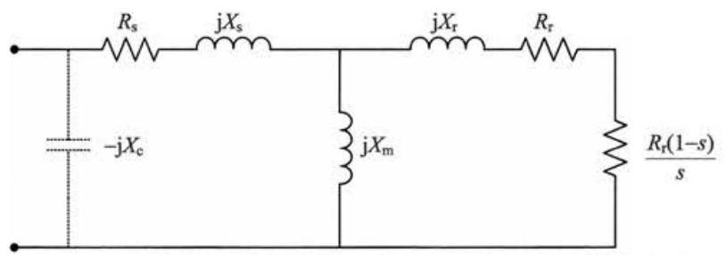
图 7.28 带功率因数补偿电容器的感应发电机等效电路
图 7.29 示出 1MW 感应发电机其有功功率随转差的变化曲线。按常规选择电流流入电路，并且因此发电机正常运行范围是从 \(O \sim - 1\mathrm{{MW}}\) 。1MW 发电机转差在 \(- 1\%\) 左右 (A),转子旋转磁场比定子旋转磁场转得快。可以看到，在曲线的峰值点之前发出的最大功率仅为 \({2.6}\mathrm{{MW}}\) 。这是因为发电机由一个低短路电平 (高阻抗)连接到一个分布式网络, 并且在高阻抗的计算中包含了本地风力机变压器的阻抗。这一源极阻抗的作用是降低在达到曲线峰值之前输出的最大功率, 然后就失去稳定。它也造成了转矩转差曲线的不对称。
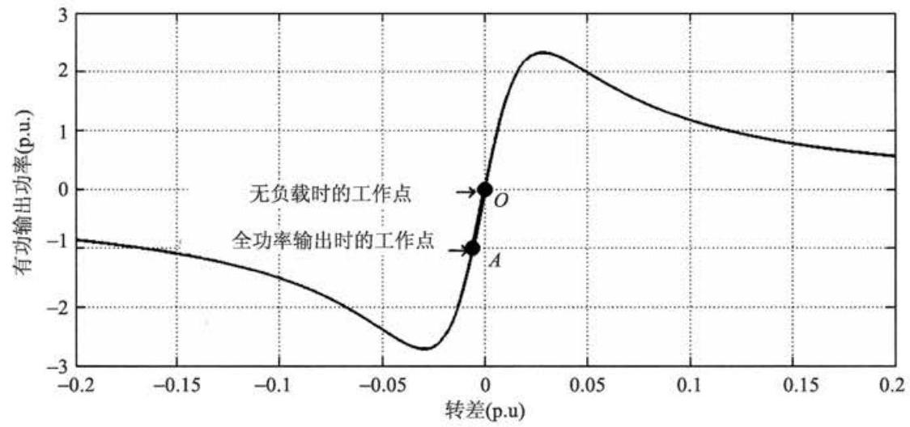
图 7.29 感应发电机的有功功率随转差的变化
图 7.30 显示发电机输出无功功率随转差的变化。正常发电运行范围依然如 \({OA}\) 曲线所示。在工作点 \(A\) (1MW 输出)，发电机(带有固定的局部功率因数补偿电容器)输出大约 \({500}\mathrm{{kVar}}\) 。可以看到,如果输出功率上升到超过额定值,则无功功率增加得非常快。
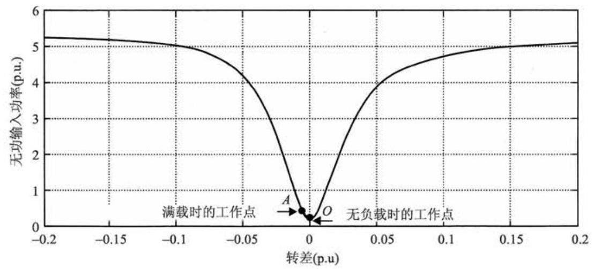
图 7.30 配备无负载功率因数校正电容器的 \(1\mathrm{{MW}}\) 感应发电机的无功功率随转差的变化
图 7.29 和图 7.30 可能被结合到一起, 以示出图 7.31 中的感应发电机的传统 “圆图”。正常运行范围依然是 \(O - A\) 曲线所示。固定的功率因数补偿电容器的作用是减小对无功的需求,因此,在 \(y\) 轴方向上的圆图向原点转移。用来描述感应发电机动态性能的等式在任何一本大学教材里都能找到 (Hindmarsh, 1984; McPherson, 1990)。动态分析更复杂, 由 Krause 解决了 (1986)。
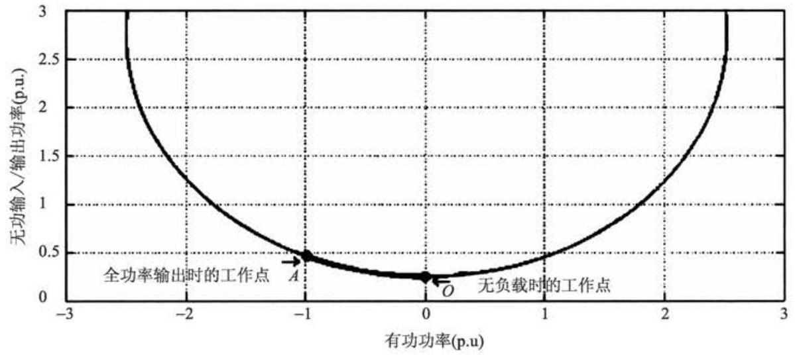
图 7.31 1MW 感应发电机的圆图
7.5.2 可变转差感应发电机¶
可变转差是通过在转子回路设置一个附加电阻而实现的, 如图 7.32 所示。
附加电阻是由半导体开关控制的。低于额定转矩的时候, 开关使外部电阻短路, 以使发电机没有影响。超过额定转矩的时候, PWM 控制该电阻逐步增大到转子回路。转矩转差率曲线的变化如图 7.33 所示。随着添加越来越多的附加电阻, 转矩转差率曲线的斜度变小,比如 \(O - B\) 曲线。低于额定转矩沿 \(O - A\) 曲线就像是恒速发电机,但是高于额定转矩的时候,外部电阻不断变化以保持恒定的反作用扭矩,导致了沿 \(A - B\) 的变速运行。在点 \(B, - {2.8}\%\) 的转差率 (4 电极, \({1542}\mathrm{r}/\mathrm{{min}}\) , \({50}\mathrm{\;{Hz}}\) 发电机) 运行将导致 \(1\mathrm{{MW}}\) 发电机损失接近 \({28}\mathrm{\;{kW}}\) 。增加转子电阻 \({R}_{\mathrm{r}}\) 进一步给出了更高的速度范围，但是转差率较大时，转差损耗明显增大而使转子发热严重，故转差率一般不应超过 10%。
在恒定转速的情况下, 功率因数补偿电容用来降低无功功率。
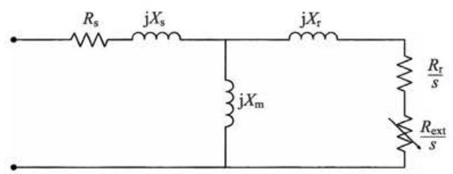
图 7.32 附加电阻 \({R}_{\text{ ext }}\) 的可变转差感应发电机的稳态等效电路
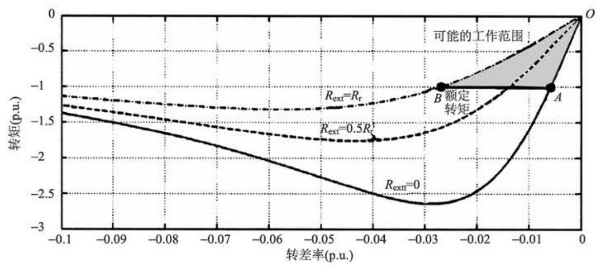
图 7.33 附加电阻对感应发电机的转矩转差率曲线的影响
7.5.3 变速运行¶
变速运行有两种基本方法:一是风力机所有的输出功率都由两个背-背变流器传递, 变速范围很宽; 二是变流器仅仅变换绕线转子感应发电机的转子的一部分输出功率来限制转速范围。
在这两种情况下, 电压源变流器 (Graetz 桥) 使用绝缘栅双极晶体管 (IGBT) 作为开关元件 (图 7.34)。IGBT 的开关很快 (典型频率在 \(2 \sim 6\mathrm{{kHz}}\) )，使用脉宽调制 (PWM)方式控制, 产生近似的正弦波。用于合成正弦波电压的通用技术包括载波调制(正弦-三角)PWM、滞环控制和空间矢量调制。所有的这些调制技术都产生十分相似的结果, 但是空间矢量控制在数字控制系统中更容易实施。快速切换的电压波形非常接近正弦波，但增加了开关损耗的费用。发电机侧变流器将所有能量整流到直流侧, 接着由电网侧变流器进行逆变。Mohan、Undeland 和 Williams (1995)以及 Anaya Lara(2009)描述了这一类型的电压源变流器的操作。
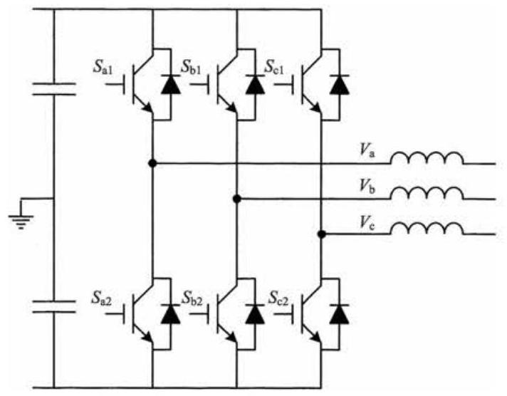
图 7.34 电压源变流器
IGBTs 进行切换产生一个近似的正弦波 (图 7.35)。因此电压源变流器的基本功能如图 7.36 所示。在它们的运行极限内, 电压源变流器可以产生任意频率、 相位、幅值的电压。它们可用于 \({50}\mathrm{\;{Hz}}\) 或者 \({60}\mathrm{\;{Hz}}\) 的电源接口,以及变速发电机的接口。另外, 还可以将电压用在绕线转子感应电机双馈式感应发电机的转差频率上。
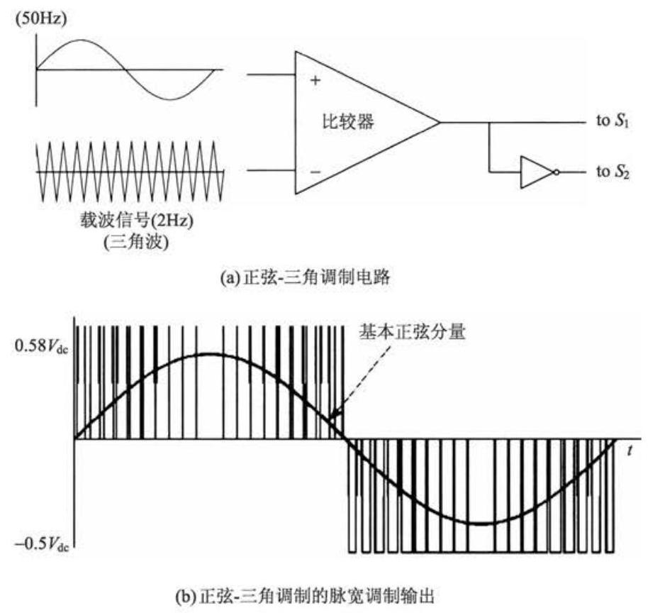
图 7.35 载波调剂(正弦-三角)脉宽调制
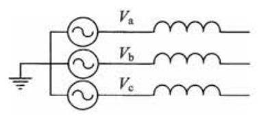
图 7.36 来自电压源变流器的理想电压源
7.5.4 使用双馈感应发电机(DFIG)的变速运行¶
对于绕线转子感应发电机可变转差发电机, 速度的提高是由设置附加电阻到转子回路实现的。附加电阻所消耗的功率与转差速度成正比。因此, 速度上升 10%导致在附加电阻上的发电机定子输出功率的损耗约 10% 的损耗。
这些额外的损耗并不会折损能量的生成, 因为这种情况只是发生在高于额定功率时, 因为风能过剩的能量反正会被丢弃。然而, 在大型风电机组中这种高水平的损耗是不可取的, 因为需要高的冷却要求来处置所产生的能量。因此, 可变转差系统的发展, 已经取代了带有一对背-背电压源变流器的附加控制电阻。这些在转子转差频率上应用可变电压 (因而注入电流), 以便允许运行的上方和下方的定子磁场的同步速度。定子磁场的同步速度由网络的频率和定子绕组的磁极数确定 (例如, \({1500}\mathrm{r}/\mathrm{{min}}\) ,四极绕组, \({50}\mathrm{\;{Hz}}\) 系统) 和围绕此速度 \(\pm {30}\%\) 的速度变化,这就要求转子回路变流器的额定功率要接近额定功率的 30%。
DFIG 的稳态等效电路如图 7.37 所示。可变转差发电机的外部电阻由一个电压源取代，这为绕线转子的转差环在转差率时提供电压。该等效电路将转子回路参考定子回路, 使注入的转子电压由等效电路的转差抵消掉。
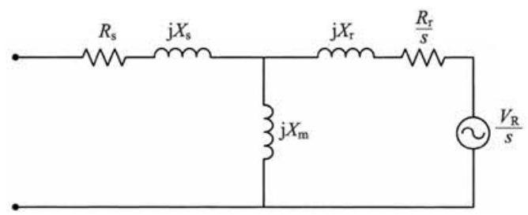
图 7.37 DFIG 的稳态等效电路
向转子注入电压的效果如图 7.38 所示。如等效电路中所示, 应用的转子电压非常小，转子电压由转差抵消。
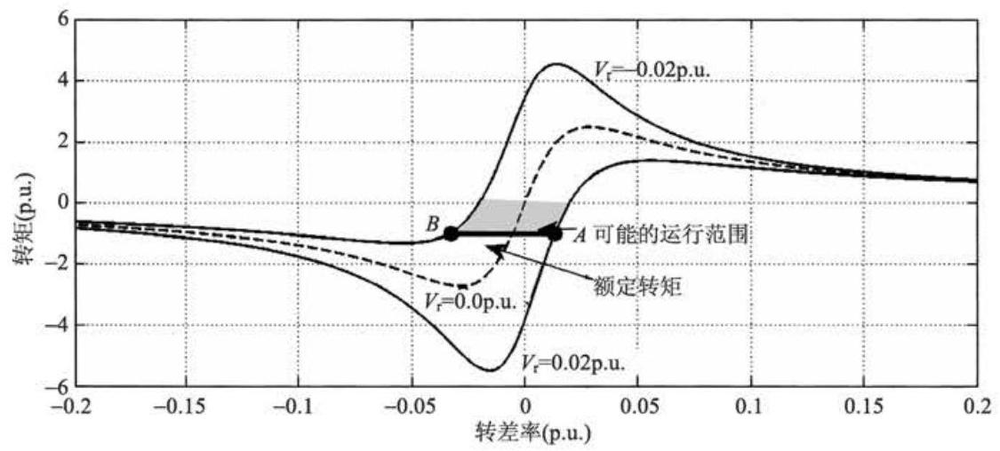
图 7.38 一个 DFIG 的稳态转矩转差率曲线
因此，在额定应用扭矩，速度可以通过调节注入转子回路的电压而变化。点 \(B\) 给出了电流流出发电机转子的超同步运行。点 \(A\) 给出了电流流入发电机转子的亚同步运行。
该功率流如图 7.39 所示。
DFIG 的功率关系说明了转子回路的功率流如何随转差而变化。
如果转子和定子上的损耗忽略不计, 穿过电机气隙的功率就和定子中的一样多。这是机械输入功率减去转子回路中的功率流。
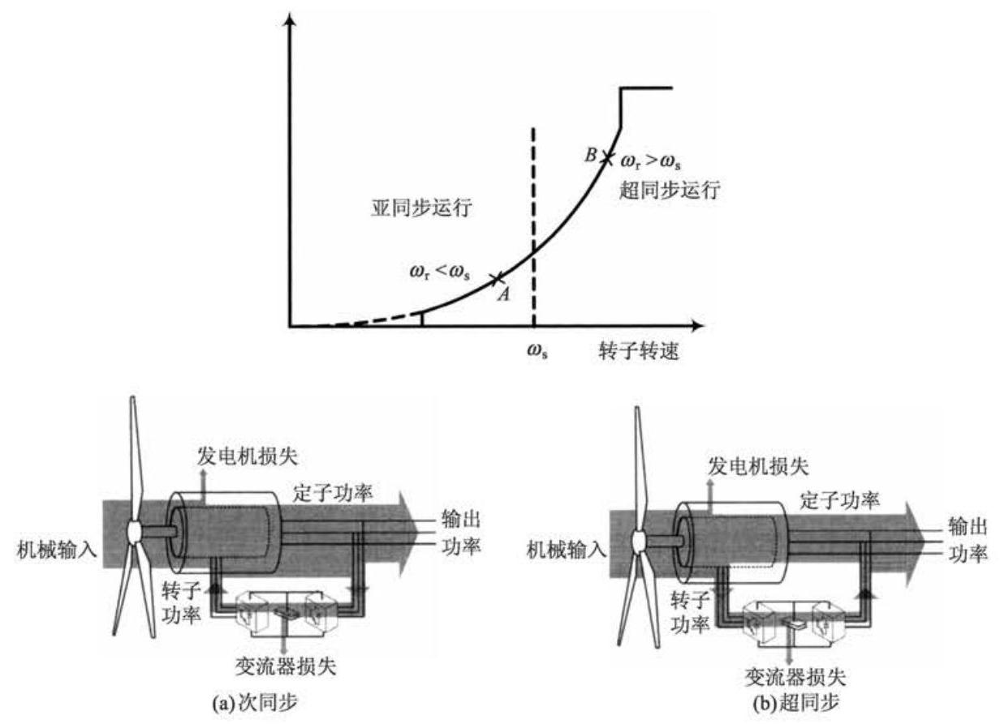
图 7.39 DFIG 的功率流
其中 \(T\) 是发电机轴上的电磁转矩, \({\omega }_{\mathrm{s}}\) 是同步转速, \({\omega }_{\mathrm{r}}\) 是转子转速, \(s\) 是转差率。
因此，对于负转差 (超同步运行)，功率流出发电机转子；而对于正转差 (亚同步运行)来说，电流流入发电机转子。
这种“双馈”概念用在早期的大型风力机原型中，比如德国在 20 世纪 80 年代早期制造的 3MW Growian 和美国同一时期制造的 Boeing MOD 5B。然后，循环变流器用来改变转子电路的频率,但现代的做法是使用两个背-背电压源型变流器。控制技术不同,但一种方法是使用发电机侧变流器的矢量控制技术来独立调节发电机转矩和励磁。而电网侧变流器用来维持直流母线电压 (Pena, Clare 和 Asher, 1996; Muller 等, 2002)。
7.5.5 使用全功率变流器(FPC)的变速运行¶
图 7.40 展示了全功率变流器的变速发电系统的功率流。来自发电机的所有电流都要整流成直流然后输出给电网。在这种情况下可以用一系列发电机实现。 带有变速箱的感应发电机机械传动可用于大型机械载荷, 如泵和风扇的逆变速驱动上。绕线转子或者永磁同步感应发电机也可以用，或者通过变速箱耦合到气动叶轮的高速发电机, 或者不需要变速箱的低速多极直驱发电机也可以用。
早期宽范围变速风力机在发电机变流器中使用二极管整流桥, 并且在电网侧使用自然换流电流源型晶闸管变流器 (Freris, 1990)。然而, 自然换流晶闸管变流器消耗无功功率时会发出相当大的特有的谐波电流。在弱分布系统中, 提供合适的滤波和这种类型设备的功率因数校正器较为困难。
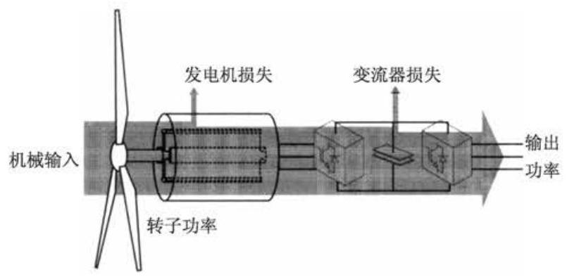
图 7.40 FPC 变速系统的功率流
因此现代的做法是使用两个电压源变流器 (Heier, 2006) 相似的方法配置 DFIG 转子回路, 尽管所有的设备都被设定为全功率风力发电机组。发电机侧变流器将所有能量传递到直流侧, 接着由电网侧变流器进行逆变。
控制方法各不相同, 但是其中一种方法是使用 2 个自由度的发电机转换器输出(输出电压的幅值和相角，或直轴和交轴电压)来控制发电机的转矩和励磁。矢量控制用来控制从最佳的风电机组的转速特性曲线 (见图 6.14) 中得到一组点的转矩, 同时无功功率电流用来提供励磁。电网侧变流器维持直流母线电压并与电网交换无功功率。
其中一种方法是控制发电机侧变流器使直流侧电压保持恒定值, 然后利用电网侧变流器控制能量流出和发电机转矩 (Jones and Smith, 1993)。该论文中引用的功率带宽范围为 \({200} \sim {500}\mathrm{{rad}}/\mathrm{s}\) ，表明这种设备具有非常快的控制速度，设备总效率为 \({92.1}\%\) ,其中发电机为 \({95.9}\%\) ,电力电子器件为 \({96}\%\) 。电网侧变流器可能运行在设备的额定容量内任一功率因数,且谐波畸变率非常低。
7.6 机械制动¶
7.6.1 制动任务¶
如在 6.8.3 节中，机组按照其采用的制动原理，机械制动可以完成多种任务。 对于机械制动最小的要求是停机制动, 以便机组在维修时可以停机。制动在大部分机组设计中也可以用来在大风速时进行停机, 以便将叶轮带到静止状态, 并且在低速停机情况下也一样。起初利用空气动力来制动叶轮, 因此, 机械制动转矩能够非常低。然而，IEC 61400-1 需要机械制动能够在任何风速低于每年一遇 \(3\mathrm{\;s}\) 的阵风时，将叶轮从危险的空载状态带到完全停止。
如果要求机械制动在空气动力制动系统完全失败时能够制动叶轮, 那么就有两种配置选择值得考虑。既可以检测到空气动力制动系统失效导致超速时起作用, 也可以作为标准紧急事件停机程序和空气动力制动同时作用。前一个策略的优势在于机械制动即使以此方式使用过也是极少的。因此, 当实际使用时, 一些衬垫甚至制动盘损伤都能容忍。另外, 如果制动设备安装在高速轴上, 齿轮箱的疲劳负荷会得到减小。另一方面，如果机械制动在严重超速发生前作用，那么在空气动力制动失效发生时机械制动要克服的空气动力转矩将会较小。
最严重的紧急制动情况将出现在风速大于额定风速，并且在发电情况下电网突然掉电时。对于变桨距调节风电机组, 最大超速发生在额定风速时电网掉电的情况下，这时空气动力转矩随着转速的变化率下降，并且在更高风速下变成负数。 相反地, 如果变桨距装置失灵了, 制动情况在切除或更大的风速时变得更加严重, 因为更大的空气动力转矩随着叶轮的减速和攻角增加而上升了。对于失速型风电机组, 危险风速一般是在额定风速和切出风速之间的一个中间值。
7.6.2 制动设计的主导因素¶
由卡钳卡紧的刹车盘 (图 7.41) 提供的制动转矩是卡钳本身提供的转矩与摩擦系数(典型值是 0.4 )、卡钳的数目以及卡钳衬垫的有效半径之积的 2 倍。 刹车能够提供多达 500kN 的夹紧力。然而，制动的设计也受如下几项的限制:
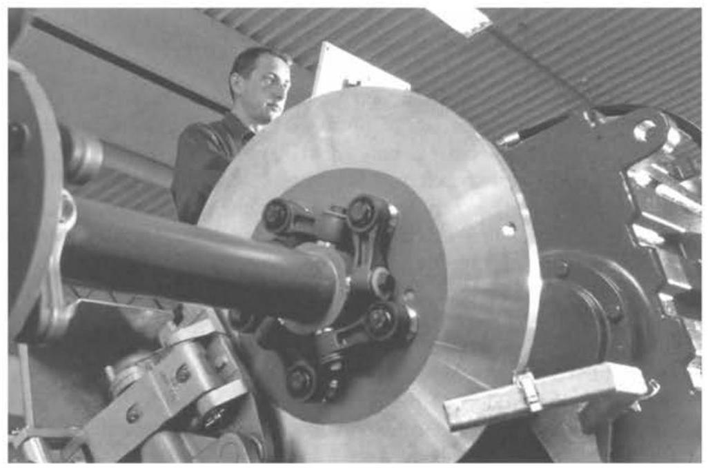
图 7.41 高速刹车片和卡钳(由 NEG Micon 提供)
(1)刹车盘的离心受力状态。
(2)衬垫的摩擦速度。
(3) 衬垫每单位面积上的能量耗散。
(4)刹车盘温度上升。
这些限制的属性描述如下:
由离心应力产生的危险力沿着制动盘内半径的切线方向，但其主要由刹车盘轮缘速度决定，按照下式给出:
式中, \(a, b\) 分别为刹车片内、外径; \(\omega\) 是刹车盘转速。制动器生产商 Twiflex 用球形石墨铸铁制造的刹车盘引用的最大安全刹车盘轮缘速度大约为 \({90}\mathrm{\;m}/\mathrm{s}\) 。
制动衬垫一般用烧结金属或一种比较便宜的树脂基的材料制造。前者能够承受摩擦速度高达 \({100}\mathrm{m}/\mathrm{s}\) ，后者所允许的摩擦速度仅仅大约为 \({30}\mathrm{m}/\mathrm{s}\) 。如果每单位面积上的能量耗散率 \(Q\) 保持足够低，则 Wilson (1990) 报告指出基于树脂垫片在摩擦速度高达 \({105}\mathrm{m}/\mathrm{s}\) 时的性能是满意的。归于 Ferodo 的标准是 \(Q = {\mu PV} \leq\) 11. \(6\mathrm{{MW}}/{\mathrm{m}}^{2}\) ,这里 \(\mu\) 是摩擦系数, \(P\) 是制动衬垫的压力值,单位为 \(\mathrm{{kN}}/{\mathrm{m}}^{2}\) ,并且 \(V\) 是摩擦速度,单位是 \(\mathrm{m}/\mathrm{s}\) 。假如摩擦系数是0.4,就要求垫片压力减小到 \({275}\mathrm{{kN}}/{\mathrm{m}}^{2}\) 。
制动叶轮和驱动链的动能加上由空气动力转矩馈入的附加能量，在制动刹车盘和衬垫上以热的形式在耗散。能量耗散的速率等于制动转矩和刹车盘转速的乘积。因此，在制动的后级，能量的耗散速率不能维持表面高温，并且它们开始再次下降。
树脂基材料的衬垫摩擦系数在温度高达 \({250}^{ \circ }\mathrm{C}\) 时明显恒为 0.4,但是自此开始下降直到 400 °C时达到 0.25 。虽然在理论上，制动可以设计为达到后一个温度，但实际上，变化的转矩使计算变得复杂，并且只留下一点点针对制动转矩失控的误差裕量。因此，对于树脂基材料的衬垫常常选择 300℃ 作为温度上限。
烧结金属衬垫片在温度高达至少 \({400}^{ \circ }\mathrm{C}\) 时有一个恒为常数的摩擦系数大约 0.4，但是制造商指出，在常规底线上这一材料在温度为 \({600}^{ \circ }\mathrm{C}\) 或间歇地为 \({850}^{ \circ }\mathrm{C}\) 时，其性能依然让人满意。Wilson (1990) 报告指出，在 750°C 时摩擦系数减小为 0.33 。这些温度在实际中是难以实现的, 因为利用球形石墨铸铁制造的刹车盘自身的温度被限制为 \({600}^{ \circ }\mathrm{C}\) ,或者用钢铁制造会达到一个更小的值 (前面引用过)。
显然, 较昂贵的烧结制动衬垫允许制动刹车盘吸收能量, 但是烧结金属是一种比树脂基材料更加有效的热导体, 因此, 常常需要在卡钳设计中考虑到绝热问题以避免液压缸内的油过热。
下一节将给出计算制动刹车盘温度上升的方法。
7.6.3 制动盘温升的计算¶
如果作出一些假定, 停机过程中制动刹车盘的温升就能够容易地计算出来。 首先, 假定刹车盘旋转时刹车衬垫扫过的面积产生的热量以同一强度馈进刹车盘。 这是对安装于高速轴上的制动设备和装在低速轴上有几个卡钳的设备的一种合理近似, 直到转动停止, 但是由这一阶段输入的能量非常低。假定刹车盘热量只沿垂直于刹车盘表面的方向流动，即忽略半径方向的流动。
认为制动刹车盘薄片距离最近的制动器表面的距离是 \(x\) ，原度是 \({\Delta x}\) ，横截面积是 \(A\) 。热量从最近的制动器表面流入薄片的速率是 \(\dot{Q} = - {kA}\left( {\mathrm{\;d}\theta /\mathrm{d}x}\right)\) (这里 \(\theta\) 是温度, \(k\) 是导热率),离开薄片流向远边的热量流动速率是 \(\dot{Q} + \left( {\mathrm{d}\dot{Q}/\mathrm{d}x}\right)\) 。厚度为 \({\Delta x}\) 的薄片元上的温度,在时间区间 \({\Delta t}\) 内由下式给出:
式中, \(\rho\) 为密度; \({C}_{\mathrm{p}}\) 为比热。因此,
采用有限元方法,式(7.62)可以写为
(7.63)
对于 450 级的球墨铸铁环,代入 \(k = {36}\mathrm{\;W}/\left( {\mathrm{m} \cdot \mathrm{K}}\right) ,{C}_{\mathrm{p}} = {502}\mathrm{\;J}/\left( {\mathrm{{kg}} \cdot \mathrm{K}}\right)\) 且 \(\rho = \; {7085}\mathrm{\;{kg}}/{\mathrm{m}}^{3}\) ,得出 \({1.01} \times {10}^{-5}{\mathrm{\;m}}^{2}/\mathrm{s}\) 的热扩散系数 \(\alpha = k/\left( {\rho {C}_{\mathrm{p}}}\right)\) 。如果时间增量 \({\Delta t}\) 选为0.025且厚度选为 \({1.005}\mathrm{\;{mm}}\) ,那么式(7.63)简化为
(7.64)
式 (7.64) 可以用来计算制动刹车盘上的横向温度扩散。假定刹车盘侧面是对称平面, 边界上比较简单的状态一直保持到制动盘的中面。边界处每个时间步长要加上式 (7.64) 计算出的温度的增量:
式中, \(T\) 为制动转矩 (设为常数); \(\omega \left( t\right)\) 为刹车盘在 \(t\) 时刻的转速; \(S\) 为制动块在刹车片一侧扫过的面积。对于刹车盘直径为 \(D\) ,衬垫宽度为 \(w, S\) 是 \(\pi \left( {D - w}\right) w\) 。因为认为热量不仅流入假想的刹车盘也流入实际的刹车盘,所以需要一个因子 2 。因此,在 \({40}^{ \circ }\mathrm{C}\) 时取一个任意值 \(\Delta {\theta }_{0}\) ,起始温度的建立可以由表 7.5 中的方法进行计算 (为了简化此处,忽略了由于减速造成的 \(\Delta {\theta }_{0}\) 的逐步减少)。
表 7.5 应用有限元计算刹车盘温升的方法举例
| 时间步长 | 时间 /s | 元 素 | 0 | 1 | 2 | 3 | 4 | 5 |
| 与刹车盘表面的距离/mm | 0 | 1.0 | 2.0 | 3.0 | 4.0 | 5.0 | ||
| 1 | 初始温度 | 0 | 0 | 0 | 0 | 0 | 0 | |
| 边界温度增量 | 40 | |||||||
| 0.025 | 步长结束后的温度 | 20 | 10 | 0 | 0 | 0 | 0 |
续表 7.5
| 时间步长 | 时间 /s | 元素 | 0 | 1 | 2 | 3 | 4 | 5 |
| 与刹车盘表面的距离/mm | 0 | 1.0 | 2.0 | 3.0 | 4.0 | 5.0 | ||
| 2 | 边界温度增量 | 40 | ||||||
| 总和 | 60 | 10 | 0 | 0 | 0 | 0 | ||
| 0.05 | 步长结束后的温度 | 35 | 20 | 2.5 | 0 | 0 | 0 | |
| 3 | 边界温度增量 | 40 | ||||||
| 总和 | 75 | 20 | 2.5 | 0 | 0 | 0 | ||
| 0.075 | 步长结束后的温度 | 47.5 | 29.4 | 6.3 | 0.6 | 0 | 0 | |
| 4 | 边界温度增量 | 40 | ||||||
| 总和 | 87.5 | 29.4 | 6.3 | 0.6 | 0 | 0 | ||
| 0.1 | 步长结束后的温度 | 58.5 | 38.2 | 10.6 | 1.9 | 0.1 | 0 |
当制动转矩与最大空气动力转矩的比是 1.6 时，制动刹车盘表面温度的上升最小。随着比值下降到 1.6 以下，延长的停机时间会造成由风中吸收的能量更多， 因此，温度就开始很快上升。换句话说，最大的制动盘表面温度对比值高于 1.6 以后的上升不太敏感。对于超速以后紧急停机的情况，最大制动刹车盘表面温度随制动转矩的变化在图 7.42 中有所阐述, 这里的连续线给出了由上面提到的有限元方法计算出的表面温度上升。结果是最大温度上升可以由下面的经验公式精确估计:
式中, \(E\) 为以焦耳为单位的总的能量消耗; \(t\) 为以秒为单位的停机时间区间; \(S\) 为由制动衬垫扫过的刹车片表面面积。由式 (7.66) 获得的温度在图 7.42 中以虚线给出作为比较。
7.6.4 高速轴制动设计¶
在制动设计中一个关键参数的选择是制动转矩。考虑到制动衬垫和污染这些因素影响, 摩擦系数可以在设计值上、下的范围内变化, 因此, 按照标称的摩擦值设计的制动转矩必须增加一个合适的材料因数。德国劳埃德给摩擦系数指定了一个材料因数为 1.2 , 并且为可能的卡钳弹力松弛增加了另外一个因数 1.1 。如果采取了这些因数,在包括了 1.35 的空气动力载荷因数以后,最小的设计刹车转矩是最大空气动力转矩的 1.78 倍。除去这 1.78 倍外, 还应该留出小的额外裕量, 如应该加上 5%，以确保风轮在没有非常大的温升时依然能够确保停机。
设计高速轴 (HSS) 上的制动器应该遵循的步骤, 可以通过下面的例子来进行说明。
设计一个 HSS 制动器。已知直径为 \({60}\mathrm{\;m},{1.3}\mathrm{{MW}}\) 的机组在风速为 \({20}\mathrm{\;m}/\mathrm{s}\) 运行，电网掉电且在超速 10% 的情况下正常停机，无论有没有空气动力制动系统的帮助。标称的 LSS 和 HSS 的转速分别是 \({19}\mathrm{r}/\mathrm{{min}}\) 和 \({1500}\mathrm{r}/\mathrm{{min}}\) ,忽略发电机的转差。假定制动设备延时为 \({0.35}\mathrm{\;s}\) ,并且风力机风轮、驱动链、制动刹车盘和发电机转子的惯性(所有都是参考低速轴)的总和是 \({2873}\mathrm{\;T} \cdot {\mathrm{m}}^{2}\) 。
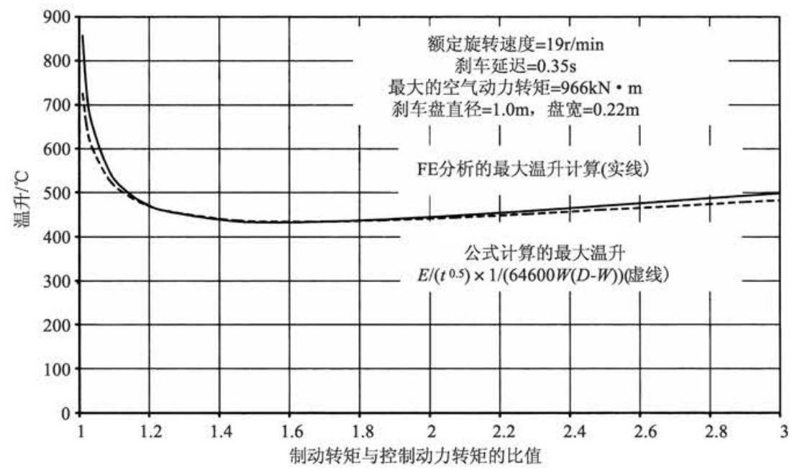
图 7.42 对于直径 \({60}\mathrm{\;m}\) 、 \({1.3}\mathrm{{MW}}\) 的失速型调节机组在超速 \({10}\%\) 的 \({20}\mathrm{\;m}/\mathrm{s}\) 的风速中, 只有 HSS 刹车制动情况下刹车盘表面的最大温升
(1)推导设计的制动转矩。空气动力转矩的峰值发生在制动发生前，并且刚好达到最大转速。第一步要确定对于风速为 \({20}\mathrm{\;m}/\mathrm{s}\) 时转速和空气动力转矩之间的关系。从这个关系里可以确定在制动来临前的 \({0.35}\mathrm{\;s}\) 的延时里的风轮加速度和空气动力转矩的建立。在这种情况下,转度的上升是 \(1\mathrm{r}/\mathrm{{min}}\) ,假设最大转速是 19 \(\times {1.1} + 1 = {21.9}\left( {\mathrm{r}/\mathrm{{min}}}\right)\) ，并且峰值空气动力转矩是 \({966}\mathrm{{kN}} \cdot \mathrm{m}\) 。因此，参考低速轴制动设计转矩是 \({966} \times {1.78} \times {1.05} = {1805}\left( {\mathrm{{kN}} \cdot \mathrm{m}}\right)\) ,或者在高速轴制动时是 \({1800} \times {19}/{1500} = {22.8}\left( {\mathrm{{kN}} \cdot \mathrm{m}}\right)\) 。
(2)刹车盘的直径选择。与高速轴转速相符合的最大转速为:21.9×(1500/ 19) \(= {1729}\left( {\mathrm{r}/\mathrm{{min}}}\right) = {181}\left( {\mathrm{{rad}}/\mathrm{s}}\right)\) ,所以考虑离心应力,最大允许的刹车盘半径大约为 \({90}/{181} = {0.497}\left( \mathrm{\;m}\right)\) 。为了得到最小的温升,在这种情况下选择直径为 \({1.0}\mathrm{\;m}\) 。 如果应用烧结板，那么衬垫摩擦的速度要相当合适。
(3)衬垫数量和尺寸的选择。为了使每单位面积的能量消耗低于 \({11.6}\mathrm{{MW}}\) / \({\mathrm{m}}^{2}\) ,衬垫的总面积由此来决定。功率消耗等于制动扭矩和转速的乘积,在制动的开始阶段功率消耗最大,即 \({22.8} \times {181} = {4128}\left( \mathrm{\;{kW}}\right)\) ,那么所需要衬垫的总面积为 \({4128}/{11600} = {0.356}\left( {\mathrm{\;m}}^{2}\right)\) 。这个面积由4个卡钳组成 \({0.22}\mathrm{\;m} \times {0.22}\mathrm{\;m}\) 的衬垫,总面积为 \({0.387}{\mathrm{\;m}}^{2}\) 。
(4)最大刹车片温度的检查。制动周期内的刹车盘表面温度的变化可以利用前边所述的有限元的方法计算出来。图 7.43 所示的就是在这种条件下的温度变化情况。刚过制动半程，表面温度达到最大的 \({440}^{ \circ }\mathrm{C}\) ，此时制动时间为 \({4.7}\mathrm{s}\) 。这个温度刚好低于烧结衬板所允许的温度范围。
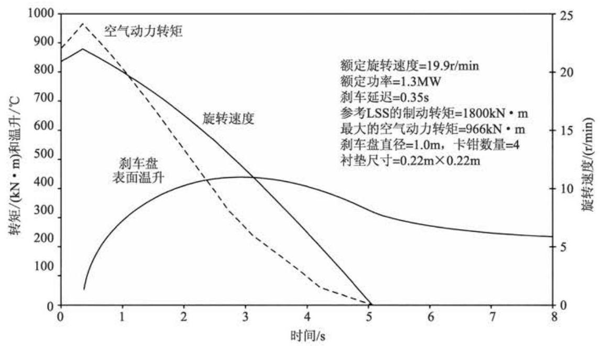
图 7.43 直径60m 的失速型机组在超速 10% 的 20m/s 的风速中, 只有 HSS 机械制动作用情况下的紧急刹车
(5)夹钳力。所需要的制动摩擦力为 \({58.5}\mathrm{{kN}}\) ，这种摩擦力可以通过 \({0.39}\mathrm{m}\) 的有效衬垫半径所分解出来的扭矩进行计算。因此,所需要的夹钳力为 \({58.5}/(8 \times \; {0.4}) = {18.3}\left( \mathrm{\;{kN}}\right)\) ,刚好低于 \({0.22}\mathrm{\;m} \times {0.22}\mathrm{\;m}\) 的制动衬垫所需要的夹钳力的范围。
由于单位面积上的功率消耗的局限性, 上述的设计过程会导致轻载的卡钳数量过多。相对紧急制动事件频率允许这个限制放松, 随之会产生更加经济的结果。
7.6.5 两级制动¶
在正常情况下，一般不需要紧急停机，在投入制动装置之前，风轮通过空气动力刹车把速度减到一个非常低的速度，这时所需要的制动转矩也大大降低。考虑到在制动系统中, 尤其是在齿轮箱中减少载荷的种种好处, 一些制造商特意减少了正常停机时的制动转矩。这通常可以利用 “弹簧施加、液压释放” 的制动钳，当制动时, 液压制动器允许液压油通过一个压力释放阀从液压缸中流出, 以至于液压力降低到还原水平。在叶轮停止转动以后, 剩余的液压力被释放出来, 此时制动转矩上升到满载。
7.6.6 低速轴制动设计¶
低速轴制动比高速轴制动的设计方法更加简单, 这是因为受盘边速度、衬垫摩擦速度的限制，单位面积上的功率损耗以及温升的限制对设计没有影响，这种设计采用的是转矩驱动方式。这种设计需要较大的制动转矩，这就意味着低速轴上的制动器体积比高速轴上起同样作用的制动器的体积大得多。例如, 上文例子中提到的制动转矩为 \({1800}\mathrm{{kN}} \cdot \mathrm{m}\) 的 LSS 的设计就需要 7 个卡钳组成直径为 \({1.8}\mathrm{\;m}\) 的刹车盘。
通过调查研究一系列的机械装置的直径, Corbet, Brown 和 Jamieson (1993) 得出结论: 装在低速轴上的制动装置的费用是装在高速轴上费用的 \(2 \sim 3\) 倍。但是, 当考虑到与高速轴制动相关的齿轮箱的额外费用时, 高速轴的价格优势也就荡然无存了。
7.7 机舱底盘¶
机舱底盘的作用就是把风轮载荷转移到偏航轴承上, 并且为齿轮箱和发电机提供支撑。尽管在风电机组设备中，机舱底盘和齿轮箱相连，而且在原则上它们是一个独立的单元，所以在一般情况下，机舱底盘作为一个独立的实体。机舱底盘是通过横向或纵向的梁焊接, 或者是通过铸造来精确满足载荷的要求。一个常见的结构是反截锥体, 前面支撑低速轴的主轴承, 左舷和右舷的齿轮箱支撑在后面, 发电机固定在安装平台上, 通过螺钉与主铸件相连。
尽管可以用传统的分析方法来设计极限载荷情况时的底座，然而，复杂的形状设计使人们不得不引入有限元方法来进行烦琐的计算，特别是在计算疲劳设计需安的应力。由于涉及多达 6 个风轮载荷分量, 导致了计算过程烦琐复杂。然而, 通过单独的 FE 分析, 可以得到每个载荷分量上的压力分布情况, 因而通过前面的载荷情况仿真得到其时间历程, 适当叠加估计的各载荷分量时间历程的应力分布, 便可以得到任意点的应力时间历史数据。
7.8 偏航驱动¶
偏航驱动指的是使机舱相对塔架旋转的机械装置, 机舱装于塔架的回转轴承上, 其目的是保持风力机正向迎风和背离风向或者在电缆过度组缆时解缆。它通常由一个安装在机舱内电动或液压马达组成，经减速箱驱动安装在垂直轴上的一个小齿轮, 小齿轮同固定在偏航盘上的齿轮相啮合, 如图 7.44 所示。齿轮的齿可以安放在塔外或塔内，完全取决于轴承的结构。在通常情况下，对于较小的风力机，齿轮的齿安放在塔外，这样齿轮就不会占用塔内供人员通过的有限空间，从而也就不会产生安全隐患。
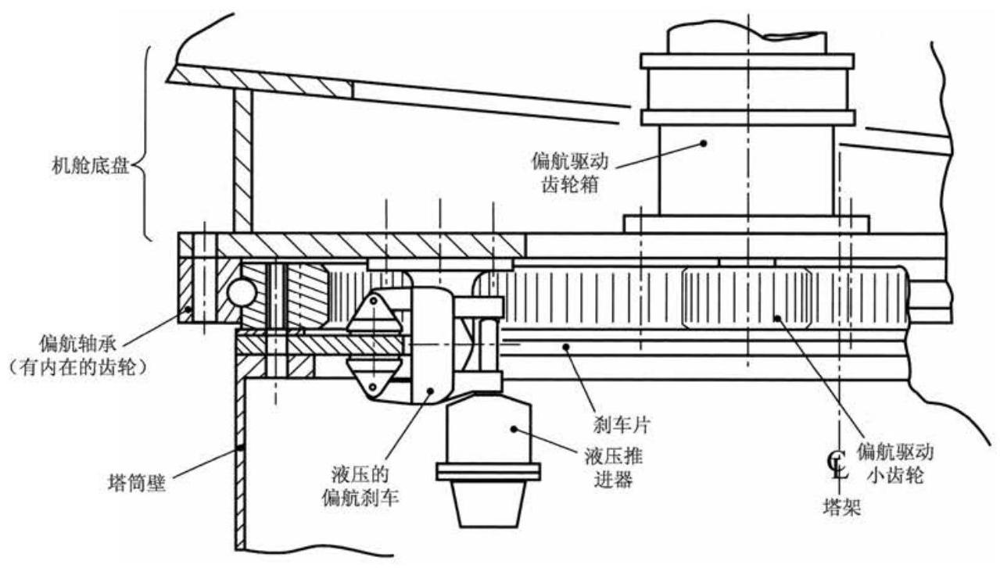
图 7.44 偏航轴承、偏航驱动及偏航制动的典型排列
刚性轮毂的风电机组的偏航力矩来自叶片上不同的载荷, 偏航力矩可以分成固定成分和随机成分。在三叶片风力机上,主导的循环偏航载荷为 3P,但它由 2P 的叶片载荷产生,如下式所示: 定义叶片平面外包含角频率 \(\Omega\) 的谐波的叶根弯矩为
因此,从所有的三个叶片所得到的偏航力矩为
例如,
对于第一个 4 次谐波有
由此可以看到,在叶片的平面外弯曲谐波 \(2\mathrm{P}\) 和 \(4\mathrm{P}\) 产生偏航力矩在 \(3\mathrm{P}\) 处,而它们在 \(1\mathrm{P}\) 和 \(3\mathrm{P}\) 处保持稳定,相应的偏航力矩为 0 。在 \(2\mathrm{P}\) 处使叶片平面外的载荷的源头是塔影和扰动。
随着风力发电机组尺寸的增大, 风轮直径变得更大, 因此, 由于湍流在叶片上而产生的不同载荷的范围也在变大。三叶片风力机的随机偏航力矩标准偏差与轴力矩的标准偏差相同。
Anderson 等 (1993) 研究了 Howden 的两种尺寸的三叶片风力机(直径 \({33}\mathrm{\;m}\) , 330kW；直径 \({55}\mathrm{\;m},1\mathrm{{MW}}\) )，总结出了循环偏航载荷的主要源头是 \(3\mathrm{P}\) 处的随机载荷。从另一个方面来说，并没有发现偏航误差在其中起重要的作用。考虑到偏航误差导致一个叶片在叶片通过频率处造成面外的载荷波动, 这个结果同式 (7.70) 相吻合。已经演化产生了一些不同策略来应付由于湍流而在刚性轮毂上产生的循环偏航力矩，具体策略如下:
(1)固定偏航。安装一个偏航制动系统，作用在环形制动盘上提供一个或多个夹钳，用来阻止在各种情况下的不期望的偏航运动(图 7.44)。在一个直径为 60m 的风力机上，这种方案需要 6 个夹钳。在偏航过程中，偏航电机驱动克服夹钳制动，而制动夹钳逐步释放，所以运动是平滑的。
(2)摩擦阻尼偏航。偏航运动被摩擦力通过如下三种方式进行阻尼:首先，机舱依赖于摩擦力衬垫，该衬垫安放在塔顶的水平环形表面。偏航驱动要克服摩擦衬垫的摩擦力, 也就是在极限偏航载荷下允许机舱滑动。Vestas V39 的 500kW 风力机和 WEG LS1 的 3MW 风力机就是采用了这种系统。其次, 机舱被安装在常规的滚动回转轴承上，摩擦力是由一个恒制动装置提供，使用与固定偏航同样的装置。这样, 当风力机由于风速太大而被切除时, 制动衬垫上的压力就会增加。再次, 机舱被一个三列辊子回转轴承所支撑[图 7.21(d), 注意其中的辊子被用于产生摩擦力弹性复合材料制成的衬垫所代替]。
(3)软偏航。这种方案是液压阻尼式的固定偏航。每一条连接到液压偏航马达的输油线路都通过一个节流口阀门连接到一个蓄能器上，提供限制往复运动的阻尼减轻突然的偏航载荷。该系统应用在了 WEG MS3 300kW 的风力机上，该风力机有一个两叶片的摇摆叶轮，但是当摇摆冲击出现时，会经历巨大的偏航载荷。
(4)阻尼自由偏航。像以前使用的液压偏航马达，但是马达每一侧的油管被通过节流阀门连在一起构成一个循环路, 而不是被连在一个液压站上。这种方法避免了阵风带来的突然的偏航运动，但是其取决于风速全范围之上的偏航稳定性。 遗憾的是，在大风情况下偏航的稳定性很差。
(5)可控自由偏航。这种方案同阻尼自由偏航相类似，只是在必要的情况下会采取一些偏航校正措施。这种策略在很多 Windmaster 的风力机上得到了成功的应用，包括双叶片风力机、刚性轮毂的 750kW 风力机。
摩擦阻尼偏航是最为常用的策略。
7.9 塔 架¶
7.9.1 引 言¶
大多数的风力机塔架是由钢材制成的。混凝土塔架是一种完美的、可实现的替代方法, 但是除了对于一些小规模的塔架来说, 这种方法需要将基础材料从工厂运往风力机安装地点，这个过程通常来说是不够经济的。由此，本节将着重介绍两类钢材料塔架——圆筒式和桁架式的。首先考虑在一阶模态固有频率的约束。
7.9.2 一阶模态固有频率的约束¶
正如 6.1.4 节中提到的那样, 避免叶片穿越频率 (或者更低范围的转动频率), 由于风轮阵风波动而产生的塔架共振激励是很重要的。动态放大直接影响着疲劳载荷，所以一阶模态下塔架的固有频率离激励频率越远越好。遗憾的是，当设计塔架在极限载荷下仍然有足够强度时, 该固有频率与叶片穿越频率同一量级。
在风力机运行于两个固定速度之一时, 塔架固有频率可以选择的自由度更加受限制。图 7.45 显示了随着一台高低转速比为 3:2 的风力机, 在较高和较低叶片穿越频率以及旋转频率情况下的激励塔架固有频率、动态放大的变化情况。虽然曲线是在阻尼比为 0 的情况下得出的,但是如果实际阻尼比为 \(2\%\) ,则绘制出的图形与阻尼比为 0 情况下的图形相差无几。图 7.45 还显示了如果对于 4 种激励源动态放大都被限制在 4 以内，则塔架的固有频率带便可以实现。看起来，塔架的固有频率在较高和较低叶片穿越频率时, 可以获得的最小动态放大是 1.65 , 这是因为塔架的固有频率是较高叶片穿越频率的 0.79 倍。然而,考虑到在较低的转速下风轮的阵风载荷波动在运行期间会明显变小，将塔架的固有频率选择得较低是比较明智的, 这样比最小化总体的疲劳损伤合理。
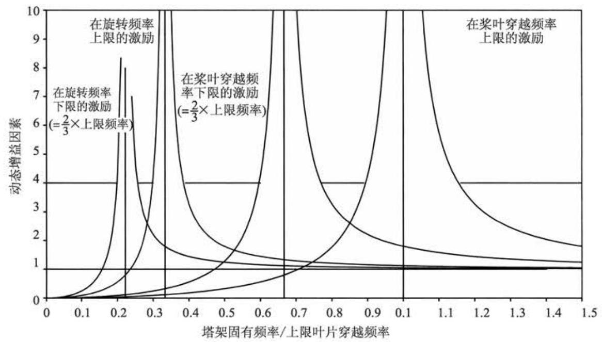
图 7.45 双速、三叶片风力机动态增益随塔架固有频率的变化
对于某台给定的风力机，将塔架的固有频率和强度都设计得令人满意后，按比例把这个风力机的尺寸扩大，假设所有的塔架尺寸很相近，轮毂高度处的风速假设不变，叶尖风速保持恒定。可以看到，在这种情况下，塔架的固有频率就像叶轮的转速一样随叶轮尺寸呈反比，所以动态放大系数保持不变。类似地，在极限风力载荷下的塔架应力也和之前的相同。
如果塔架的高度随特定风力机的不同而发生变化, 情况就不那么直接了。如前讲述, 假设轮毂高度处的极限风速保持不变, 塔架上的风载叶轮上的风载相比可以忽略,那么塔基的倾覆力矩简单地同轮毂的高度 \(H\) 成正比。通过令横截面尺寸与轮毂高度的立方根成正比, 就可以保持塔基的应力恒定。如果在塔架上使用相同的比例,则塔架的固有频率便会发生变化,这是因为 \(\sqrt{{I}_{\mathrm{B}}/{H}^{3}} = \sqrt{{H}^{4/3}/{H}^{3}} = \; 1/{H}^{5/6}\) ，其中，忽略塔架质量， \({I}_{\mathrm{B}}\) 是塔基所在区域的第二个转矩。所以，如果塔的高度倍增，固有频率将会降低 \({44}\%\) 。如果塔基的颠覆转矩随 \({H}^{1.5}\) 变化，并可以承受轮毂高度风速的塔架效应以及风载对塔架的影响，则塔的基础应力可以通过按比例 \(\sqrt{H}\) 放大横截面尺寸保持不变。在此基础上，塔架的固有频率按 \(1/\sqrt{H}\) 变化，在下一节中将结合管状塔架对调整塔架的固有频率所产生的效果进行介绍。
7.9.3 钢制管状塔架¶
在没有弯曲的情况下, 塔架中部采取圆锥形的结构, 在顶部区域下的中间带有 \({45}^{ \circ }\) 半角,这种结构能够最有效地传递地面上任何方向的水平风轮阵风响应。然而, 抛开运输和吊装可行性, 薄壁壳压缩失稳限制了这样的设计方案, 而常用的钢管状塔架有非常合适的锥度。顺便注意到, 逐渐锥化的塔架之所以成为可能, 是由于日益完善的滚动技术发展的结果。早期管状塔架是从一些直径逐渐减少的圆柱变化而来的，而且周围有短的适配器被焊接在它们之间。
一个锥形塔架通常由一系列成对的金属板卷成两个竖直焊缝连接的半锥台制造。在这样形成的每个锥台由于滚弯设备的能力所限，高度被限制在 \(2 \sim 3\mathrm{\;m}\) 内。 在进行水平焊缝时一定要注意实现局部畸变最小化，否则会使塔架在压力载荷下的承载能力削弱。
假设采用了一种具有统一锥形结构的塔架设计方案，需要确定的重要参数是塔基的直径以及壁厚。从另一个角度来讲，塔架顶部的直径由偏航轴承尺寸决定。 在塔架内部中等高度, 其壁厚通常为塔基值和塔顶值之间的内插。塔顶合理的最小值约为本地半径的 1%。
塔基处尺寸主要考虑受压缩过程中壁体的屈曲和疲劳载荷下的强度以及调整固有频率刚度的影响。在后续的章节中，会分别讲到这些问题。
随着风力机越做越大，另一个重要的考虑是当塔架部分采用陆地运输的时候， 可以通过高速公路的最大塔架底部直径。在德国北部和丹麦, 这个限制是 4.0~ 4.2m，但是在其他地区这个限制常常会更小。
1 抗屈曲设计¶
在给定理想的几何拓扑情况下，横向压缩下钢制管状的屈服强度是较低的，而且弹性临界屈曲应力公式如下式所示:
式中, \(r\) 为圆柱的半径; \(t\) 为墙壁的厚度,屈服压力受 \(r/t\) 控制, \(r/t\) 小于 \({0.605E}/{f}_{\mathrm{y}}\) 。 对于中碳钢来说,它大致等于 506 ,其中 \({f}_{\mathrm{y}} = {245}\mathrm{{MPa}}\) 。然而,缺陷的存在,特别是由于焊接而产生的一些瑕疵,造成并不完美,甚至在相关塔架半径与壁厚比值较低时, 抗压能力明显地减小。在不同国家的规则条款中, 在抗压能力和容许的缺陷方面存在很大的不同。一些国家作出了两者之间明确的划分,一些国家则没有。
EN1993-1-6:2007 的规定“欧洲规则 3:钢结构的设计:壳结构的强度和稳定性”将在这里介绍。
第一步是决定制造容许的质量等级, 这要基于可以切实实现的生产设施中的缺陷容许度。
如果圆柱的面外偏离值的限制 \(w\) 可用,则采用如下的方案进行测量:
① 一个长度为 \(L = 4\sqrt{rt}\) 的杆竖直放置，没有焊缝。
② 一个同样长度的环形模板水平放置，没有焊缝。
③ 中间有焊缝，竖直放置一个长度 \(L = {25t}\) 的杆。
表 7.6 中列出了作为专门针对不同制造容忍度质量等级必需的标距长度百分比，同时也给出了相关的制造质量参数值 \(Q\) 决定近似的质量级别参数，经向弹性缺陷降低系数 \({\alpha }_{\mathrm{x}}\) 和塑料相对细度限制 \({\lambda }_{\mathrm{p}}\) ，可以根据下式决定
屈曲强度降低系数 \(\chi\) 可由下式得出
其中, \(\lambda\) 是相对塔壳纤细度 \(\sqrt{{f}_{\mathrm{y}}/{\sigma }_{\mathrm{{cr}}}},{\sigma }_{\mathrm{{cr}}}\) 是经向屈曲弹性临界压力, \({\lambda }_{0}\) 是挤压相对细长限制。后面的两个参数都取决于整体轴向压力的比例 \(\varepsilon\) ,如下所示
以及
表 7.6 针对不同制造容忍度质量等级必需的标距长度百分比及相关的制造质量参数值 \(Q\) 决定近似的质量级别参数
| 制造允许的质量等级 | 评价 | 标距长度百分比 | 制造质量参数 |
| 等级 A | 优秀 | 0.6% | 40 |
| 等级 B | 高 | 1.0% | 25 |
| 等级 C | 标准 | 1.6% | 16 |
由于风力机塔座的压力由弯曲压力主宰, \(\varepsilon\) 很小并且可以在初期设计中忽略。 图 7.46 展示了如果不考虑轴向应力的话, 屈曲强度降低系数是如何随着不同塔壳半径与厚度比的变化而变化。
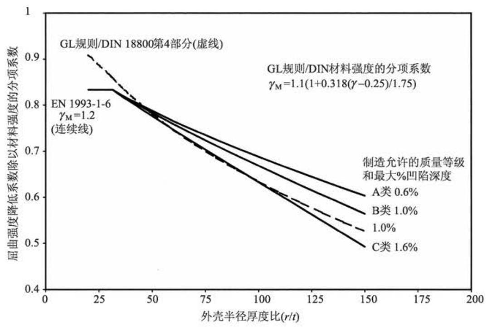
图 7.46 屈曲强度降低系数材料强度的分项系数随零轴向应力时外壳半径厚度比的变化
注意，图中显示了屈曲强度降低系数被局部安全系数分开，对于材料强度为 1.2 在 IEC61400-1 中指定的全局塔壳弯曲曲线情况下，同样还标记出了 GL 规则 2005 对于 1%极限的凹深度的相关曲线(图中虚线)。在这种情况下弯曲强度下降元素与 GL 规则下的局部安全材料强度系数所分开, 允许同时进行这两种方法设计强度的比较。
塔基尺寸的选择对塔架重量所带来的效应以一个具体的实例来进行说明。考虑一个风轮直径为 \({60}\mathrm{\;m}\) 、轮毂高为 \({50}\mathrm{\;m}\) 的中碳钢材质的塔架,三叶片,极限风速为 60m/s。可以抵抗倾倒力矩的塔壁的厚度在一系列塔基尺寸下通过式 (7.74) 被计算得出并绘于图 7.47 中。相关的塔的重量同样被绘制在图 7.47 中, 分别以塔架顶部直径 \({2.25}\mathrm{\;m}\) ，壁厚 \({11}\mathrm{\;{mm}}\) 为基础，并假设在塔顶和塔基之间壁的厚度变化是线性的。可以看出,在直径为 \({4.5}\mathrm{\;m}\) 时,塔架的重量达到最小值,这就意味着在该点之外为了保持截面模数不变而减小横截面积, 会被屈曲强度减小和塔架自身上的风载荷增加的影响所抵消。因此,由于运输的限制,塔架根部直径 \(4\mathrm{\;m}\) 时,此时产生的重量代价在这种情况下是忽略不计的。
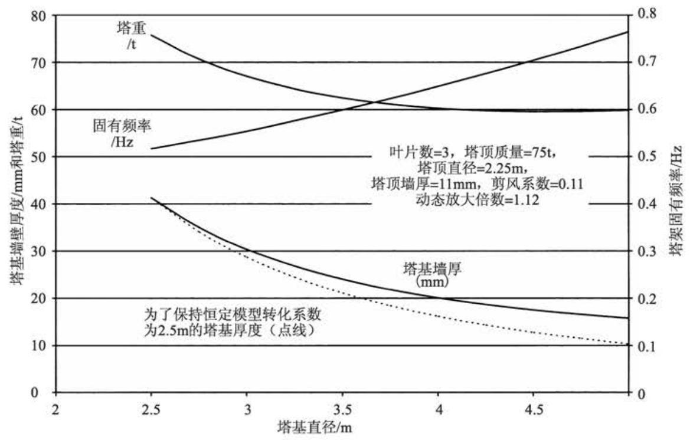
图 \({7.4750}\mathrm{m}\) 高度处极限风速为 \({70}\mathrm{m}/\mathrm{s}\) 的情况下,为了支撑直径为 \({60}\mathrm{\;m}\) 的失速型调节机组塔基壁厚度随直径的变化
2 疲劳设计¶
欧洲规则 3 给出了钢焊接结构疲劳设计的清晰准则。其中, 定义了在不同焊接细节下的一组 \(S - N\) 曲线。在一个双对数图上,这些曲线实际上是由两条直线组成的,斜率分别是 \(1/5\) 和 \(1/3\) ,分别高于和低于 \(5 \times {10}^{6}\) 循环。另外,在 \(N = {10}^{8}\) 循环处有一终止极限,所以在小于 \({10}^{8}\) 循环定义的幅值内,似乎根本不会导致任何的疲劳损伤。
除了塔架的门 (在稍后被考虑), 对于管状钢塔架关键的焊接技术在于中部平台和支撑电缆的焊缝上, 以及塔基法兰和中间的螺栓连接用法兰盘的横向焊缝。 假定有一个完备渗透根端焊接, 水平焊缝的范畴是分类号 71 (其中 71 表示在 MPA \(2 \times {10}^{6}\) 周期处映射的压力范围),横向焊接的附件的范畴随着附属物的增加而减小,但是如果附属物长度可以被限制在 \({80}\mathrm{\;{mm}}\) 以内,分类号为 71 也合适。该种细节框下的 \(S - N\) 曲线如图 7.48 所示。
欧洲规则 3 依据失效后果及检查方便程度, 对疲劳强度不同的局部设置不同的安全系数 \({\gamma }_{\mathrm{{Mf}}}\) 。如果一个部件的局部缺陷不会快速导致这个结构缺陷,那么称为 “失效安全”，并且 \({\gamma }_{\mathrm{{Mf}}} = {1.0}\) ，使连接点细节可以检测到。从另一个方面来说， \({\gamma }_{\mathrm{{Mf}}} =\) 1.25 适用于“非失效安全”部件。对于连接细节难以检测到的情况，系数分别增至 1.5 和 3.5。在一个焊接的管状结构下,没有明确能够确定一个焊接断裂是否达到了危险长度, 所以焊接可以被认为是非失效安全。考虑到塔架焊接从内部来说是可见和可达到的, 所以对疲劳强度为 1.25 局部安全系数出现是合理的。疲劳载荷谱源于 \({M}_{\mathrm{X}}\) 。 \({M}_{\mathrm{Y}}\) 载荷谱产生的叠加应力幅在 5.12.6 节中已经介绍过。
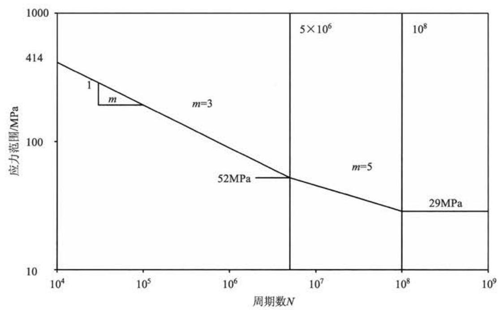
图 7.48 欧洲规则 3 规定的范畴 71 的疲劳应力(对接头)
3 极限和疲劳载荷的相关临界状态¶
屈曲失效(在极限载荷下)和疲劳载荷的相关临界状态取决于各种因素。然而, 相对于失速型风电机组来说, 疲劳对变桨距机组更大可能临界, 这是因为叶轮推力波动在额定风速以上增加和停机时极限载荷降低，疲劳在低风速地点也会更加接近临界状态, 因为极限载荷下降的百分比小于疲劳等价载荷下的百分比。
4 塔架在固有频率的调谐¶
合适的斜坡至少在理论上是存在的, 通过改变塔基直径, 必要的强度抵抗极限载荷和疲劳载荷时可以将整塔架的固有频率调整至一个合适的值。变更塔基直径对于固有频率产生的影响, 对于极限载荷起主导作用的情况, 要乘一个系数 2 。可以如图 7.47 所示。对直径为 \({60}\mathrm{\;m}\) ,机舱和风力机位于 \({50}\mathrm{\;m}\) 盘心上,从基部直径为 \({2.5}\mathrm{\;m}\) ，频率为 \({0.517}\mathrm{\;{Hz}}\) 升至直径为 \({50}\mathrm{\;m}\) ，频率为 \({0.765}\mathrm{\;{Hz}}\) 。现在，一个直径为 \({60}\mathrm{\;m}\) ，尖端速度为 \({60}\mathrm{\;m}/\mathrm{s}\) 的风力机的叶轮速度 \(k\) 大约为 \({19}\mathrm{r}/\mathrm{{min}}\) 。如果假设该风力机是双速的，其较低叶轮速度为 \({19} \times 2/3 = {12.67}\mathrm{r}/\mathrm{{min}}\) ，这样较低叶片穿越频率将会是 \({0.633}\mathrm{\;{Hz}}\) ,正好在塔架的固有频率范围中部。给定 \(- {15}\% \sim + {15}\%\) 的频率排斥区域，塔架的固有频率应该小于 \({0.538}\mathrm{\;{Hz}}\) 或大于 \({0.728}\mathrm{\;{Hz}}\) 。然而，选取频率为 \({0.728}\mathrm{\;{Hz}}\) ,将会要求直径取 \({4.7}\mathrm{\;m}\) ,这就有可能被运输考虑所否决。因此,仅有的强度限制设计选项是塔基直径为 \({2.75}\mathrm{\;m}\) ,超重量代价是 \({10}\mathrm{t}\) ,同 \({80}\mathrm{t}\) 最优设计相比,给定固有频率约为 \({0.535}\mathrm{\;{Hz}}\) 。另外,一个 \(4\mathrm{\;m}\) 塔基直径可以选择,此时壁厚增加 \({37}\%\) 至 \({27.5}\mathrm{\;{mm}}\) ,频率为 \({0.728}\mathrm{{Hz}}\) ,然而此时的超重量代价大于 \({15}\mathrm{t}\) 。
上述例子说明, 对于一个特定的风力机和轮毂组合, 满足固有频率的要求不一定是经济的, 在这些条件下似乎更倾向于改变轮毂高度。例如, 对于所描述的情况,塔基直径为 \({3.5}\mathrm{\;m}\) ,产生固有频率为 \({0.535}\mathrm{\;{Hz}}\) 及塔重为 \({74}\mathrm{t}\) 。当轮毂高为 \({55}\mathrm{\;m}\) 时，风力机会工作得更好。
5 塔架各节之间的连接¶
基于运输等原因的考虑，塔架通常由许多段组成，所以就需要连接部件。就地进行焊接是一项昂贵的操作，所以几乎总是应用螺栓连接。套筒连接部件已经应用得很成功了, 套筒连接部件中每个锥形塔段都置于下一级的上方且用起重机强行使其就位。
结构上最有效的连接部件为螺栓夹紧的摩擦塔按板，并把它们之间邻接塔段的壁夹在中间构成。假设夹紧力是足够的, 连接部件即使是在极限载荷下也不会滑动, 结果是螺栓不会受制于疲劳载荷。遗憾的是, 除去搭接板在外部外观上影响外, 它们实际中难以连接紧密。因为螺栓连接需要一些人员在塔外接近塔身才能完成的工作，但是它们仍然被应用于一些塔中。
最常用的铸造结构是在内部法兰处如图 7.49 所示。法兰铸造在配套部分的末端，外边缘与塔壁相连。法兰也可以作为塔架内壁的一部分。这种法兰称为焊颈法兰，可以从塔壁到法兰提供一个平缓的过渡(图 7.49 的下半部分所示)，这样会导致更高的对焊疲劳载荷。
组装完成后, 拧紧或拉伸每个螺栓使法兰间都产生预载荷来使服役中的螺栓的疲劳应力最小化。螺栓需要事先预测抵抗由于极限塔壁伸缩力所导致的杠杆力, 将支点紧接在法兰的内边缘, 然后校核疲劳。
法兰连接点处螺栓的疲劳计算取决于螺栓载荷和塔壁应力的关系，当在法兰宽度内完全接触时, 它们是线性关系。VDI 指导原则, VDI 2230 在这些条件给出了计算螺栓载荷增量的方法, 塔壁从属宽度内载荷增量的比例。法兰连接处的轴向载荷和载荷偏心力所产生的力矩分别单独计算。轴向载荷被假定在螺栓和法兰预载荷之间，传力路径的刚度分配，在这种法兰中，它与预载荷所决定的压缩体积的横截面积相关，依据下式:
式中, \({d}_{\mathrm{w}}\) 为螺栓头或螺母的垫圈直径; \({d}_{\mathrm{h}}\) 为螺栓孔径; \({l}_{\mathrm{k}}\) 为螺栓头和螺杆之间的钳位距离; \({D}_{\mathrm{A}}\) 为螺栓中心线到最近的法兰边缘的距离的 2 倍,或者是螺栓间隔,取两者的较小值。根据指导原则, 外部载荷的有效平面并不是螺栓头或是螺母下面, 而是在法兰中间面附近, 图 7.49 中以不同的截面阴影线标识了传力路径。塔壁载荷到法兰接触面间离心力所产生的应力可以应用全接触面的弯曲理论来处理。
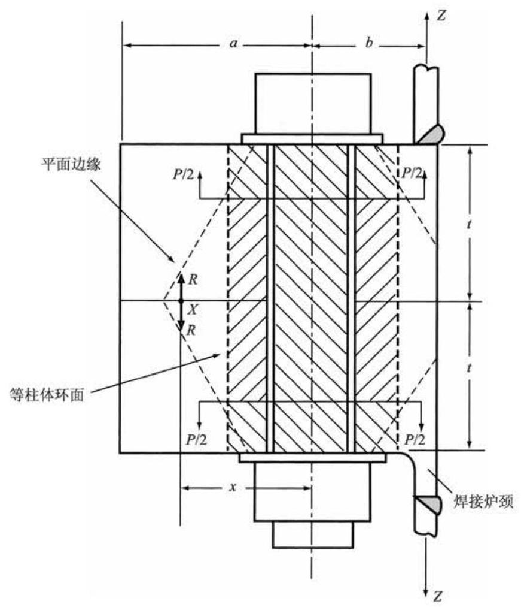
图 7.49 栓接法兰的连接
当法兰的外边缘有间隙时,上述的 VDI 2230 就不再实用。对于大型的波动, 在外部传导路径,可以应用支点模型 \(Z\) ,尽管它在较低载荷时肯定保守。应用在螺栓和法兰间的轴向载荷 \(P\) 可以基于在 \(X\) 处存在支点来计算, \(X\) 代表 \(x\) 到螺栓的距离,所以 \(P = Z\left( {1 + 6/x}\right)\) ,螺栓和法兰压缩体积之间的载荷分配可以用刚度来计算。
在图 7.50 中,螺栓载荷增量和外载荷之间的两个线性关系式通过对一个单个法兰螺栓的试样的试验结果来进行比较。它假定螺栓/法兰连接的有效面分别是在螺栓头下面和螺母上。线 \({OA}\) 代表 VDI 2230 模型, \(A\) 点代表有效限度。线 \({OB}\) 代表支点模型, \(B\) 点代表在没有螺栓的法兰之间的预载荷点。其后,螺栓载荷变化为 \(Z\left( {1 + 6/x}\right)\) ,如在线 \({BC}\) 上, \(x/a = {0.7}\) 。从图 7.50 中可以看出,当 \(x/a = {0.8}\) 时, 在高载荷时实验结果更吻合, 当然, 这对设计来说并不一定有用。
Schmidt 和 Neuper(1997)提出了一个更成熟的模型,称为模型 \(\mathrm{C}\) 。它将上述两个模型结合起来,并给出了螺栓载荷特性曲线,包括三条直线 \({OA}\text{ 、 }{AB}\) 和 \({BC}\) (图 7.50)。显然, 这个结果更和实验结果相吻合, 但是它增加了疲劳载荷计算的复杂程度。
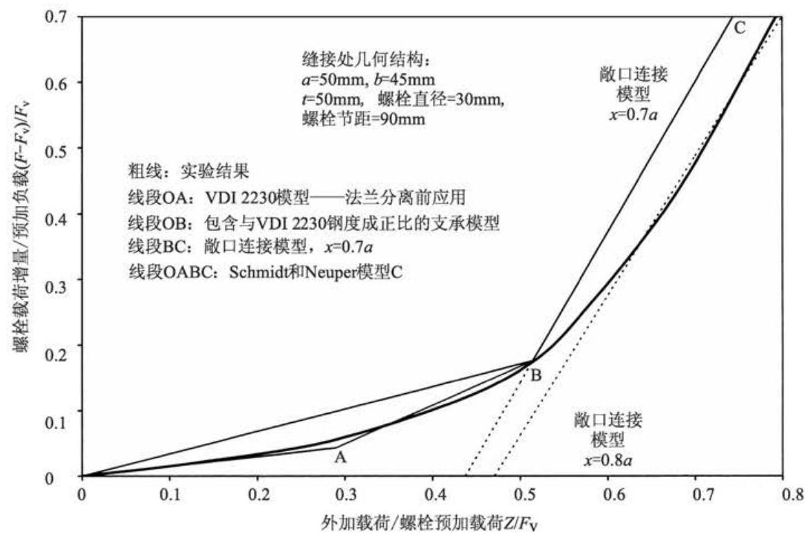
图 7.50 随外部应用载荷变化的边缘插销载荷变化——实验结果与引擎模型的比较
在塔架中，螺栓载荷的统一性取决于法兰表面的精确度。Schmidt，Winter-stetter 和 Kramer(1999)通过应用有限元模型研究了各种缺陷的影响, 并且依据允差水平进行了实验验证。
6 塔架固定¶
塔架一般安装在一个底部法兰上, 底部法兰可以通过浇铸在混凝土中的螺杆固定在地基上, 或者用螺栓连接在嵌入地下的短塔段上。塔段部分与上述的具体安装结构相关。
螺杆通常以某种方式铆入地基中, 它们抵抗倾斜力矩的能力取决于上风向侧的成半圆分布的螺栓所能承受的拉力。由于受混凝土剪应力强度的约束, 所以螺杆必须插入混凝土充分深的地方, 典型深度约等于塔架基础的半径。
固定螺杆的疲劳载荷可以通过 (钢丝绳的) 预拉伸适当地减少。假设在直径方向上有一个 \({30}^{ \circ }\) 的扩散角,则螺栓所承载的塔壁上的载荷剪应力包括螺栓的相关刚度预测以及混凝土的承接体积, 螺杆应该加外套保护, 这样 (钢丝绳的) 预拉伸就可以被作用在整个长度上。
7 塔架门口设计¶
在塔基或靠近塔基的通道应该安装一扇塔门, 这样可以便于工作人员进出塔架, 而且为了塔架根部内变压器的需要, 或者方便对叶片机械装置的维修需要另外的门口。在典型情况下, 塔门被设计成带有边缘形状的顶部和底部, 边为垂直的形状。每个边都应该提供竖直的支撑物, 作为标准的下方用来补偿缺少的墙体并抵抗压缩弯曲，但是必须同时注意支撑物终端的焊接细节，因为此时由于开放而导致的压力集中效应很有可能成为一个附加因素。
支撑物终端的焊接细节可以通过使用一个连续的边缘围绕一周, 以增强塔架塔门内部边缘的强度来实现。在横断载荷下, 塔壁临近焊缝边缘的细节种类是 71 , 但是此时没有塔门上、下端的压力集中因素。
7.9.4 桁架式塔架¶
通常, 桁架式塔架通过角钢组装而成, 并利用螺栓将斜撑体连接到腿上, 将腿都连接在一起。在典型情况下，塔架呈方形，有四只腿，以便于斜撑体的连接。
桁架式塔架的优点之一是通过在塔架的底部将塔架的腿呈 “八”字形张开来节省材料，而不会危害塔架本身的稳定性和带来运输问题。做这项工作更高的范围受叶尖距离考虑的限制，所以细腰塔架设计是很常见的。然而，如果塔架的腿被卷拢成缓和的凹形曲线，则一种更加优雅的塔架设计方案将会出现。
塔架腿的载荷(或者“弦”)源于塔架的弯矩，而斜撑体(或“杆”)的载荷则源于塔架剪切力和扭转力矩。在每一种极限载荷情况下的构件屈曲都必须被考虑, 并且疲劳载荷在接头处也必须被考虑。在这里引入两个设备来提高其稳定性:其一， 安排交叉对角线形式，而不是采用单一的三角结构，所以在任何一个交叉方向上， 拉伸的斜线都是可以稳定压缩的斜线。其二, 任何支撑架子的腰杆/弦杆交叉点上都垂直交错排列, 以抑制短轴挠曲弦杆支撑的间隔。注意细腰的部分, 如果在现场为了保证足够的横向约束，改变弦杆的方向要特别小心。
通过使用夹紧螺栓摩擦力, 螺栓可避免疲劳载荷。相应地, 采用镀锌螺栓而不使用刷防护漆，以实施防锈保护。
7.10 基 础¶
风力机基础的设计在很大程度上受在极限风力条件下的塔架塔基础倾覆力矩所驱动。针对管状塔架, 各种板型、多柱及单桩方案被采用, 并且它们会在以下章节中依次被介绍。
7.10.1 板状基础¶
在离地面几米以内需要放置适用的材料时, 一般选择板状基础。风力机、塔架、基础及其覆盖层重量的偏心反作用力可以抑制倾覆力矩 (如果水平面可以上升到板状基础以上，还需要考虑浮力)。反作用力的偏心率和恢复力矩的大小都受基层载荷能力的限制，而且承载能力决定承受重力载荷的板状基础边缘的区域的宽度。Brinch Hansen(1970)在承载区域具有均匀载荷的简化假设基础上, 提出了在上述条件下直接计算基层载荷能力的方法。然而, 如果基层表现得很有弹性, 板状基础的倾斜很有可能会导致载荷区域产生的应力呈线性分布, 所以一个可选择的方法是基于最大值设计而不是平均值。GL 规则另外还要求当风力机在运行的时候, 在地基的整个宽度范围内存在正的承载应力, 这也就限制了在这些条件下的最大倾斜力矩为 \({WB}/6\) ，其中 \(W\) 是重力载荷， \(B\) 是板状基础宽度。这些要求在对地基尺寸的要求当中是非常重要的。
4 种可选板状的基础构造方法如图 7.51 所示。图 7.51(a) 显示了均匀厚度的板层, 它的上表面刚好在地表面以上, 这种方案在当岩床距离地表面很近的时候被选用。主要的加强体由顶部和底部钢筋网组成, 可以用来抵抗板层弯曲, 抗剪加固是不做要求的, 所以板层应该具有足够的厚度。第二种方案如图 7.51(b) 所示, 即在板层顶部安装一个覆盖基架。这种方案应用于岩床深度大于半层厚度时的情况, 以满足抵抗板层弯曲力矩和剪应力载荷的要求。下层土壤地基上的重力载荷由于载荷过重而增加，所以总板状基础的平面尺寸可以适当减小。
图 7.51 四种可选板层的基础安排方法:
(a) 平板层; (b) 桩和覆盖层; (c) 嵌入锥形板层的桩塔; (d) 岩石锚牵引固定的板层
第三种情况如图 7.51(c) 所示，与第二种方案很类似。但是，其加入了两个可能的修改，这些修改可以单独地应用，用一个嵌入在板状基础中的短塔段代替原来的基架, 并引入了板型基础深度向的斜坡。应该在短桩段靠近板层顶部的地方穿孔, 以允许对顶部的径向加强钢筋穿越它, 钢筋必须包括抵抗来自塔桩底部法兰盘的冲剪载荷。板型基础深度向的斜坡具有节省材料的优点, 但是实行起来较为困难。岩石锚固装置在满足平衡目的时, 消除了重力基础配量的需要, 并且当轴承能力足够大的时候, 可以大大减小基础的尺寸[图 7.51(d)]。但是需要专门的承包商来安装岩石锚定装置，所以这种方案只能偶尔使用。
规划中的理想的重力地基形状为圆形, 但是考虑到建立圆形模板的复杂性, 人们经常使用一种替代的形状, 即八角形。有时, 板状基础是方形的, 目的是为了简化挡板和钢筋。
7.10.2 多桩基础¶
在较差一些的地表上,一个柱状地基常常会比板层地基更能有效地利用材料。 图 7.52(a) 阐述了位于排成一个圆的 8 个圆柱形桩上的桩帽组成的基础。倾覆力矩由桩在垂直和侧面载荷两者抵抗，后者由施加于每个桩的顶部力矩所产生，其结果是钢筋必须在桩和桩帽之间提供充分连续的力矩。为这些桩所打的孔可以用螺丝钻钻成, 并且桩可以在钢筋笼就位后在原地进行浇注。
图 7.52
7.10.3 混凝土单桩基础¶
混凝土单桩基础由一个大直径混凝土圆柱组成, 它独自通过调动土壤的横向载荷抵抗倾覆[图 7.52(b)]。对于沙土, 通过使用简单的兰金理论或者库仑定理, 这些侧面载荷可以被逆向计算得出。其中, 兰金刻度的理论可以用来计算壁上的被动压力，忽略土壤和壁之间的摩擦力，而库仑理论则包括土壤和壁之间的摩擦力。然而, 在单桩情形下, 当桩开始倾斜时, 在土壤楔入边就会产生摩擦力, 以提供更大的抵抗力, 并且 Brinch Hansen(1961) 在解决方案中说明了这一点。
当水平线很低且土壤的本质是挖一个很深的洞也不会出现边缘下陷的可能时, 则这种类型土壤的基础构成一个很吸引人的基础。然而, 虽然简单, 这种概念从材料上来看成本是很高的。通过替换圆柱体上的混凝土，如图 7.52 所示的中空的圆柱可以使用比较便宜的材料。其中的混凝土没有其他结构作用, 仅仅是填充作用。
7.10.4 桁架式塔架基础¶
桁架式塔架的腿之间的跨距相对很大,并且还可以使它们使用各自独立的基础。在原地常常使用螺旋钻孔浇注桩(图 7.53)。阻止倾倒的机械力在桩上被简单地上提和下推, 但是桩也必须对水平剪应力载荷引起的弯矩进行计算。桩所受的上提力被桩表面的摩擦力所抵抗，摩擦力取决于土壤和桩之间的摩擦角度以及侧面泥土的压力。很多的不确定性因素存在于上述变量的量化过程中, 所以欧洲标准 7 推荐使用桩测试来评估桩承载能力。
图 7.53 钢制栅格塔架的桩基础
组成塔架地基的角钢, 给桩灌注混凝土时被就地浇筑。一个框架可以提前进行组装，与支撑地基部分合并在一起，所以在浇筑混凝土之前腿应该被设置为正确的间隔和倾斜度。
7.10.5 基础转动刚度¶
因为基础转动刚度对塔架固有频率和疲劳载荷产生影响, 基础转动刚度的评估是设计过程中的重要部分。图 7.54 显示了轮毂高度 \({70}\mathrm{\;m}\) 、支撑 \({45}\mathrm{t}\) 发电机组的塔架基础转动刚度的变化。制造商通常指定最低的基础转动刚度, 以确保对于塔架的设计基于有效疲劳载荷下塔架固有频率足够高。基础设计者的任务是确保基础的根部(或深度，在单支座基础的情况下)足够大，以实现当前转动刚度。
转动刚度 \({K}_{0}\) 的一个封闭形式的解决方案,在弹性半空间的刚性盘, \({K}_{0}\) 如下所示:
其中, \(G\) 为土壤的剪切模量, \(R\) 是盘半径, \(\nu\) 是泊松比。DNV/Risø“风力风电机组的设计准则”(2002)给出了这个公式的修改后的版本，计算基础埋置和土壤层不同的剪切模量。借助基础本身的灵活性，塔基的旋转将增加，这些情况需要考虑进去。
图 7.54 塔固有频率随基础转动刚度变化的例子
参考文献¶
American Gear Manufacturers Association/American Wind Energy Association (1996) AGMA/AWEA 921-A97: Recommended practices for design and specification of gearboxes for wind turbine generator systems'
American National Standards Institute/American Gear Manufacturers Association/American Wind Energy Association (2003) ANSI/AGMA/AWEA 6006-A03: Standard for design and specification of gearboxes for wind turbines.
American National Standards Institute/ American Gear Manufacturers Association (1995) ANSI/AGMA 2001-C95: Fundamental rating factors and calculation methods for involute spur and helical gear teeth.
Anaya-Lara et al. (2009) Wind Energy Generation, Modeling and Control. John Wiley & Sons, Inc., New York.
Anderson CG et al (1993)Yaw system loads of HAWTS. ETSU Report No W/42/00195/REP
Anderson, C.G., Heerkes, H. and Yemm, R (1998) Prevention of edgewise vibration on large stall regulated blades. In: Proceedings of the BWEA Conference, pp. 95-102. Barbero EJ (1998) Introduction to composite materials design. Taylor and Francis.
Bond, I.P. and Ansell, M.P. (1998) Fatigue properties of jointed wood composites. Part I 'Statistical analysis, fatigue master curves and constant life diagrams'. Journal of Materials Science 33, 2751-2762, & Part II 'Life prediction analysis for variable amplitude loading' Journal of Materials Science 33, 4121-4129.
Bonfield, P.W., Bond, I.P., Hacker, C.L. and Ansell, M.P. (1992) Fatigue testing of wood composites for aerogenerator blades. Part VII. Alternative wood species and joints. In: Proceedings of the BWEA Conference, pp. 243-249.
Brinch Hansen, J. (1961) The ultimate resistance of rigid piles against transverse forces. Danish Geotech-nical Institute Report No. 12.
Brinch Hansen, J. (1970) A revised an extended formula for bearing capacity. Danish Geotechnical Institute Bulletin No 28.
British Standards Institution (1986) BS436: Spur and helical gears - Part 3 Method for calculation of contact and root bending stress limitations for metallic involute gears.
British Standards Institution (2006) BS ISO 6336: Calculation of load capacity of spar and helical gears.
Corbet, D.C., Brown, C. and Jamieson, P. (1993) The selection and cost of brakes for horizontal axis stall regulated wind turbines. ETSU Report No. WN 6065.
Det Norske Veritas/Risø National Laboratory (2002) Guidelines for design of wind turbines.
Echtermeyer, A.T., Hayman, E. and Ronold, K.O. (1996) Comparison of fatigue curves for glass composite laminates. In: Mayer, R.M. (ed.), Design of Composite Structures Against Fatigue. Mechanical Engineering Publications, Suffolk.
Eurocode 3 (2007) Design of steel structures - Part 1.6: Strength and stability of shell structures. (EN 1993-1-6:2007)
Eurocode 3 (2005) Design of steel structures - Part 1.9: Fatigue. (EN 1993-1-9:2005)
Freris, L. (ed.) (1990) Wind Energy Conversion Systems. Prentice Hall, London.
Fuglsang, P.L. and Madsen, H.A. (1995) A design study of a 1 MW stall regulated rotor. Riso National Laboratory Report No. R-799.
Germanischer Lloyd (1993) Rules and Regulations: IV - Non-Marine Technology: Part 1 - Wind Energy: Regulation for the Certification of Wind Energy Conversion Systems.
Hancock, M. and Bond, I.P. (1995) The new generation of wood composite wind turbine rotor blades - design and verification. In: Proceedings of the BWEA Conference, pp. 47-52.
Hancock, M., Sonderby, O. and Schubert, M.A.(1997) Design, development and testing of a \({31}\mathrm{\;m}\) wood composite stall regulated blade for serial production. In: Proceedings of the European Wind Energy Conference, pp. 206-212. Dublin.
Heier, S. (2006) Grid Integration of Wind Energy Conversion Systems, 2"d Edition. John Wiley & Sons, Inc., New York.
Hindmarsh, J. (1984) Electrical Machines and Their Applications. Butterworth Heinemann, London.
Hück (1983) Calculation of S/N curves for Steel, Cast Steel and Cast Iron - Synthetic S/N curves.
Verein Deutsher Eisenhüttenleute Report No. ABF 11, Verlag Stahleisen, Düsseldorf, July 1983.
Jamieson, P. and Brown, C.J. (1992). The optimisation of stall regulated rotor design. In: Proceedings of the BWEA Conference, pp. 79-84.
Jones, R. and Smith, G.A. (1993) High quality mains power from variable-speed wind turbines. IEE Conference, Renewable Energy - Clean Power 2001.
Krause, P.C. (1986) Analysis of Electric Machinery. McGraw Hill, New York.
Mayer, R.M. (1996) Design of Composite Structures Against Fatigue. Mechanical Engineering Publications, Suffolk.
McPherson, G. (1990) An Introduction to Electrical Machines and Transformers, 2"d edition. John Wiley & Sons, Inc., New York.
Mohan, N., Undeland, T.M. and Williams, W.P. (1995) Power Electronics, Converters Application and Design, 2nd edition. John Wiley & Sons, Inc., New York.
Muller, S., Deicke, M. and De Doncker, R. (2002) Doubly fed induction generator systems for wind turbines. Industry Applications Magazine, IEEE, 8(3), 26-33.
Pena, R., Clare, J.C. and Asher, G.M. (1996) Doubly ed induction generator using back-back PWM converters and its application to variable speed wind energy generators. In: IEE Proceedings on Electric Power Applications, 143, 231-241.
Petersen, J.T., Madsen, H.A., Björck, A., Enevoldsen, P., Øye, S., Ganander, H. and Winkelaar, D. (1998) Prediction of dynamic loads and induced vibrations in stall. Riso National Laboratory Report No. R-1045.
Schmidt, H. and Neuper, M. (1997) Zum elastostatischen Tragverhalten exzentrisch gezogener L-Stöße mit vorgespannten Scrauben. ('On the elastostatic behaviour of an eccentrically tensioned L-joint with prestressed bolts'), Stahlbau 66, 163-168.
Schmidt, H., Winterstetter, T.A. and Kramer, M. (1999). Non-linear elastic behaviour of imperfect, eccentrically tensioned L-flange ring joints with prestressed bolts as basis for fatigue design. In: Proceedings of the European Conference on Computational Mechanics.
Thomsen, K. (1998) The statistical variation of wind turbine fatigue loads. Riso National Laboratory Report No. R-1063.
Timoshenko, S.P. and Gere, J.M. (1961) Theory of Elastic Stability.2nd Edition. Mc Graw-Hill.
Van Delft, D.R.V., de Winkel, G.D., Joose, P.A. (1996) Fatigue behaviour of fibreglass wind turbine blade material under variable amplitude loading. In: Proceedings of the EUWEC, pp. 914-918. Göteborg.
Verein Deutscher Ingenieure (1986/1988) VDI 2230 Part 1: Systematic calculation of high duty bolted joints - Joints with one cylindrical bolt.
Wilson, R.A. (1990) Implementation and optimisation of mechanical brakes and safety systems. In: Proceedings of a DEn/BWEA Workshop. Mechanical systems for wind turbines. 26 June 1990.
在大多数情况下, 风力发电机组控制系统由传感器、执行机构和包括软/硬件或软/硬件的处理器系统组成, 其中处理器系统负责处理传感器输入信号, 并发出输出信号控制执行机构的动作。
例如，传感器一般包括如下装置:
(1)风速仪。
(2)风向标。
(3)至少一个叶轮转速传感器。
(4)电量采集传感器。
(5)加速度传感器。
(6)载荷传感器。
(7)桨距角位置传感器。
(8)各种限位开关。
(9)振动传感器。
(10)温度和油位指示器。
(11)液压系统压力传感器。
(12)操作开关、按钮等。
执行机构一般包括液压驱动或电动变桨距执行机构、发电机转矩控制器、发电机接触器、刹车装置和偏航电机等。
处理器系统通常由计算机或微处理器和可靠性较高的硬件安全链组成, 以实现风力机运行过程中的正常控制功能。当发生严重故障时, 安全链必须能够跨过正常控制器，保障风电机组处于安全状态。